아침 서재 상세 매뉴얼
말씀과 책을 읽고 쓰는 아침의 다이어리
사용 안내서와 글쓰기 수업
오늘 아침, 한 줄부터
이 책의 표지판
이 책의 글은 성격마다 모양이 다릅니다. 흑백으로 뽑아도 테두리 모양과 이름표로 알아볼 수 있습니다.
- 위 메뉴에서 메뉴 이름을 누릅니다.
- 나온 화면에서 단추를 차례로 누릅니다.
그 분야에서 오래 일한 사람이 전통과 원리를 들려줍니다.
전문가의 글쓰기 수업
- 기본기 하나를 익힙니다.
- 다음 기본기로 넘어갑니다.
뭉뚱그린 문장.
장면이 보이는 문장.
오늘의 연습
오늘 바로 해 볼 작은 과제.
기대 효과
- 달라지는 점 하나.
팁알아 두면 편한 것.
!주의꼭 조심할 것.
작가에게 왜 필요한가
이 기능이 작가의 하루에 주는 쓸모.
머리말
이 책은 누구를 위한 책인가
이 책은 아침 서재를 처음 여는 분을 위한 책입니다. 특히 묵상을 처음 해 보는 분, 글을 처음 써 보는 분을 생각하며 썼습니다.
"묵상을 어떻게 시작하지?" 하고 망설이는 분이 있습니다. "글 한 편을 끝까지 써 본 적이 없다"는 분도 있습니다. 이 책은 그런 분 곁에서 한 걸음씩 함께 갑니다.
이미 오래 써 온 분에게도 쓸모가 있습니다. 설교를 준비하는 목회자, 원고를 엮는 작가, 논문을 쓰는 연구자도 있을 것입니다. 그런 분은 각 장의 해설과 AI 상자를 먼저 읽으셔도 좋습니다.
작가를 꿈꾸는 분께
아침 서재는 작가를 꿈꾸는 사람을 응원하고 돕기 위해 만든 프로그램입니다. 이 책도 같은 마음으로 썼습니다. 언젠가 내 이름으로 된 글 한 권을 내고 싶은 분, 그 꿈을 아직 누구에게도 말하지 못한 분을 생각했습니다.
아침 서재에는 묵상·독서·일기·자기계발이 함께 있습니다. 글쓰기 앱에 왜 이런 것이 있을까 하고 물으실 수 있습니다. 이것들이 모두 작가가 되는 데 필요한 훈련이기 때문입니다.
묵상은 한 문장을 오래 붙드는 법을 가르칩니다. 독서는 남의 문장 속에서 내 문장의 뿌리를 기르고, 일기는 오늘의 장면을 놓치지 않는 눈을 줍니다. 자기계발은 날마다 앉는 몸을 만듭니다.
아침 서재를 만든 분은 이렇게 말했습니다. "묵상, 자기계발은 모두 작가를 위해 필요한 지적 활동이고, 영적인 활동이 되는 거지." 머리로 배우는 일과 마음을 닦는 일이 한자리에서 만나는 곳, 그것이 아침 서재가 꿈꾸는 서재입니다.
그래서 이 책은 사용법만 담지 않았습니다. 글쓰기 공부를 함께하는 책이 되려고 했습니다. 4부 들어가기에는 글쓰기 기초 수업이 있고, 글 갈래마다 그 분야 전문가의 글쓰기 수업이 있습니다.
간단 매뉴얼과 이 책
아침 서재에는 두 가지 안내서가 있습니다. 간단 매뉴얼은 "어디를 누르면 되나"를 빨리 찾는 책입니다. 이 상세 매뉴얼은 "왜 이렇게 하나, 어떻게 하면 깊어지나"까지 다룹니다.
처음에는 간단 매뉴얼로 시작하셔도 됩니다. 쓰다가 막히거나 더 알고 싶을 때 이 책을 펴세요. 두 책의 단추 이름과 길은 같습니다.
이 책 읽는 법
부의 순서
앞의 부들은 위 메뉴의 차례를 따라갑니다. 「오늘」, 「묵상」, 「일기」, 「서랍」, 「책장」, 「글방」 순서입니다. 글방에서는 설교·에세이·소설·논문 같은 글 갈래를 하나씩 다룹니다. 4부는 들어가기의 글쓰기 기초 수업으로 시작하고, 갈래마다 전문가의 글쓰기 수업이 이어집니다.
5부는 「AI와 함께 쓰기」입니다. 여러 메뉴에 흩어진 AI 기능을 한자리에 모아 정리했습니다. 마지막 부록에는 30일 시작 계획과 소모임 안내가 있습니다.
처음부터 차례로 읽지 않아도 됩니다. 오늘 쓸 메뉴의 장만 펴서 읽으셔도 충분합니다.
메뉴마다 같은 순서로
각 장은 늘 같은 순서로 짜여 있습니다.
- 한 줄 요약 — 이 메뉴가 무엇을 위한 자리인지
- 사용법 — 실제 단추 이름으로 적은 번호 단계
- 〔○○의 눈〕 해설 — 그 분야 전문가의 목소리
- 기대 효과 — 무엇이 달라지는지
- 「이 부분에서 AI는」 상자
- 작은 팁과 주의
단추와 메뉴 이름은 「 」로 적었습니다. 가는 길은 「위 메뉴 → 글방 → 왼쪽 칸 → 원고」처럼 화살표로 적었습니다.
〔○○의 눈〕 해설
〔영성 지도자의 눈〕, 〔설교학자의 눈〕, 〔소설가의 눈〕 같은 해설이 곳곳에 있습니다. 기능 설명이 아니라 "왜 이것을 하는가"를 들려주는 자리입니다. 그 일의 전통과 역사, 깊어지는 길을 짧게 담았습니다.
단추를 누르는 법은 금방 익힙니다. 그러나 왜 날마다 말씀 앞에 앉는지, 왜 한 문장으로 꿰는지는 오래 곱씹어야 합니다. 해설은 그 곱씹음을 돕는 글입니다.
「이 부분에서 AI는」 상자 읽는 법
각 장 끝에는 AI 상자가 있습니다. 그 메뉴에서 AI가 무엇을 하고, 무엇을 일부러 하지 않는지 알려 줍니다. 상자는 늘 아래와 같은 모양입니다.
「하는 일」은 AI가 실제로 돕는 내용입니다. 「하지 않는 일」은 기능이 모자라서가 아닙니다. 원칙에 따라 일부러 막아 둔 것입니다. 「잘 쓰는 법」과 「한계」는 함께 읽으세요. 둘은 늘 짝입니다.
AI가 전혀 관여하지 않는 메뉴도 있습니다. 그때는 「이 부분에서 AI는 쉽니다」라고 짧게 적고 그 까닭을 밝혔습니다.
아침 서재가 지키는 생각
아침 서재의 모든 기능은 네 가지 생각 위에 서 있습니다. 이 넷을 알면 낯선 단추를 만나도 "아, 그래서 이렇구나" 하고 짐작할 수 있습니다.
하나, 글의 주인은 사람입니다
AI는 조사하고, 대조하고, 초안을 돕습니다. 그러나 방향을 정하고, 무엇을 받아들일지 고르고, 마지막 문장을 쓰는 것은 사람입니다. 그래서 AI의 제안은 늘 카드로 뜨고, 여러분이 「적용」을 눌러야만 글에 들어갑니다.
둘, 날마다 조금씩
아침 서재는 한 번에 많이 쓰는 앱이 아닙니다. 날마다 성경 읽기·묵상·책 읽기, 이 세 가지를 조금씩 하는 앱입니다. 「오늘」 화면이 이어서 쓴 날 수를 세어 주는 것도 그 때문입니다.
하루 10분이라도 괜찮습니다. 작은 글이 쌓여 한 권의 원고가 됩니다.
셋, 원본은 내 드라이브에
여러분이 쓴 글의 원본은 구글 드라이브의 기록 파일 하나입니다. 이 기기에 남는 사본은 보조입니다. 인터넷이 끊겼을 때 이어 쓰고, 다시 이어지면 구글로 보냅니다. 손을 3초 쉬면 저절로 간직되고, 지운 글은 휴지통에 30일 남습니다.
노션으로 저절로 가는 글은 묵상뿐입니다. 나머지 글은 「보내기」를 눌렀을 때만 바깥으로 나갑니다. 내 글이 어디에 있는지 늘 분명하게 하려는 것입니다.
넷, 쓰는 사람을 응원합니다
아침 서재는 쓰는 사람의 편입니다. 서툰 첫 문장도, 하다 만 원고도 다 쓰는 사람이 지나는 길입니다. 오늘 한 줄을 쓴 여러분은 이미 쓰는 사람입니다.
1부시작하기
아침 서재는 말씀과 책을 읽고 쓰는 아침의 다이어리입니다. 묵상·설교·독서·일기·책 원고를 한 곳에서 씁니다. 1부에서는 앱을 열고, 내 구글 드라이브에 잇고, 화면과 설정을 한 바퀴 둘러봅니다.
1장 앱 열기와 설치
한 줄 요약인터넷 주소 하나로 열고, 원하면 아이콘을 눌러 여는 앱으로 설치합니다.
앱 열기
- 인터넷 창(크롬·사파리·엣지)을 엽니다.
- 주소창에
https://4gospel.github.io/seojae/를 넣습니다. - 처음 여는 기기라면 「이 기기를 아침 서재에 연결하기」 화면이 나옵니다. 2장을 따라 연결합니다.
- 연결이 끝난 기기는 다음부터 바로 「오늘」 화면이 열립니다.
홈 화면·Dock에 앱으로 설치하기
설치하면 주소창 없는 창이 따로 열립니다. 다이어리를 펴듯 아이콘을 눌러 엽니다.
길「톱니(설정) → 화면·기기 → 앱으로 쓰기」
| 기기 | 하는 법 |
|---|---|
| 크롬·엣지(PC) | 「이 기기에 앱으로 설치」 단추를 누릅니다. 단추가 없으면 주소창 오른쪽의 설치 아이콘(모니터에 ↓)을 누르거나, 오른쪽 위 「⋮ → 전송, 저장, 공유 → 페이지를 앱으로 설치」를 누릅니다. |
| 안드로이드 크롬 | 오른쪽 위 「⋮ → 앱 설치」(또는 「홈 화면에 추가 → 설치」)를 누릅니다. 삼성 인터넷은 아래 「≡ → 현재 페이지 추가 → 홈 화면」입니다. |
| 아이폰·아이패드(Safari) | 아래쪽 「공유」(□↑) 단추 → 「홈 화면에 추가」를 누릅니다. 아이폰 크롬에서는 주소창 오른쪽 「공유」 → 「홈 화면에 추가」입니다. |
| 맥 Safari | 위쪽 메뉴 「파일 → Dock에 추가…」 → 이름 「아침 서재」 그대로 「추가」를 누릅니다. |
앱 화면은 지금 쓰는 기기와 브라우저를 알아보고, 그 기기에 맞는 순서만 보여 줍니다.
카카오톡·네이버 앱에서 링크를 눌렀을 때. 카카오톡·네이버·인스타그램 안에서 열린 작은 브라우저에서는 설치도, 구글 연결도 되지 않고, 쓴 글이 지워지기 쉽습니다. 그래서 카카오톡에서 열면 아침 서재가 저절로 사파리(아이폰)나 크롬(안드로이드)으로 넘어갑니다. 넘어가지 않으면 「○○ 안에서는 제대로 쓸 수 없어요」라는 안내가 화면 가득 뜹니다. 「사파리로 열기」나 「크롬으로 열기」를 누르세요. 그래도 안 되면 「주소 복사하기」를 누르고 사파리나 크롬 주소창에 붙여 넣습니다. 카카오톡 오른쪽 아래(또는 위)의 「⋯ → 다른 브라우저로 열기」로도 됩니다. 밖으로 연 다음에 위 표대로 설치합니다.
설치를 마치면 그 칸에 「앱 창」이라고 표시됩니다.
좋은 서재는 문을 열면 바로 책상이 보입니다. 찾아 들어가는 길이 길면 아침의 몇 분이 길 찾기에 쓰입니다. 아이콘 하나로 여는 습관은 말씀 앞에 앉는 문턱을 낮춥니다.
기대 효과
탭 사이에서 앱을 찾지 않아도 됩니다. 휴대폰에서도 아이콘 한 번으로 바로 씁니다.
작은 팁·주의
- 맥 Safari로 Dock에 넣은 앱은 처음 열 때 연결을 한 번 더 해야 합니다. 미리 「연결 링크 복사」(2장)를 눌러 두었다가 붙여 넣으세요.
- 인터넷이 끊겨도 앱 화면은 열립니다(6부 7장).
2장 구글 드라이브에 연결하기
한 줄 요약내 구글 계정의 서버 주소와 비밀 열쇠로 이 기기를 내 기록에 잇습니다.
아침 서재의 글은 여러분 구글 드라이브의 기록 파일에 담깁니다. 기기마다 한 번씩 「이 기기는 이 기록을 쓴다」고 이어 주어야 합니다. 이 연결 정보(서버 주소와 비밀 열쇠)는 그 기기 안에만 남습니다.
맨 처음 한 번 연결하기
- 아침 서재를 설치할 때 받은 구글 서버(웹 앱) 주소를 이 기기에서 엽니다.
- 「아침 서재 연결」 화면이 뜨면 「이 기기 연결하기」를 누릅니다.
- 아침 서재가 열리면 연결이 끝납니다.
!주의이 단추 화면은 딱 한 번만 보입니다. 이미 열어 버렸다면, 구글 앱스 스크립트 편집기에서 resetKey를 한 번 실행한 뒤 주소를 다시 엽니다. 이때 예전 열쇠를 쓰던 기기는 모두 다시 연결해야 합니다.
다른 기기(휴대폰·두 번째 컴퓨터) 연결하기
이미 연결된 기기가 있으면 훨씬 쉽습니다.
- 연결된 기기에서 「톱니(설정) → 화면·기기 → 다른 기기 연결」을 엽니다.
- 「다른 기기 연결하기 (QR 보기) · 연결 끊기」를 펼칩니다.
- 새 기기의 카메라로 QR을 찍습니다.
- 「…아침 서재(구글 서버 …)에 이 기기를 연결할까요?」 확인 창에서 내 서버가 맞으면 「확인」을 누릅니다.
QR을 찍을 수 없으면 이렇게 합니다.
- 연결된 기기에서 「연결 링크 복사」를 누릅니다.
- 그 링크를 새 기기로 옮깁니다(본인만 보는 곳으로).
- 새 기기에서 앱을 열고, 「연결 링크 또는 연결 코드」 칸에 붙여 넣은 뒤 「연결」을 누릅니다.
비밀 열쇠는 내 기기에만
- QR과 연결 링크에는 비밀 열쇠가 들어 있습니다. 다른 사람에게 보여 주거나 사진으로 보내지 마세요.
- 앱은 구글 서버 주소(script.google.com) 모양이 아니면 받지 않습니다. 가짜 링크를 막기 위해서입니다.
- 본인이 만든 링크나 본인 기기의 QR이 아니면 확인 창에서 「취소」를 누르세요.
옛 문서고는 열쇠를 지닌 사람만 들어갔습니다. 열쇠를 복사해 아무에게나 주면 문서고는 더 이상 문서고가 아닙니다. 연결 링크를 열쇠 꾸러미처럼 다루면 기록이 오래 안전합니다.
기대 효과
휴대폰과 컴퓨터가 같은 기록을 씁니다. 컴퓨터가 꺼져 있어도 휴대폰에서 열립니다.
작은 팁·주의
- 「다시 연결해 주세요」 화면이 뜨면 열쇠가 바뀌었거나 맞지 않는 것입니다. 연결된 다른 기기의 QR로 다시 잇습니다.
3장 저장의 원리 — 원본은 구글 드라이브
한 줄 요약쓰는 대로 저절로 간직되고, 원본은 늘 구글 드라이브에 있습니다.
어디에 담기나
| 자리 | 하는 일 |
|---|---|
| 구글 드라이브 「아침 서재」 폴더의 기록 파일 | 원본입니다. 모든 기기가 이 하나를 씁니다. |
| 이 기기 안의 사본 | 보조입니다. 인터넷이 끊겼을 때 이어 쓰게 해 주고, 다시 이어지면 구글로 보냅니다. |
| 드라이브 「아침 서재/백업」 폴더 | 날마다 남는 사본입니다(6부 2장). |
길「톱니(설정) → 기록 지키기 → 자동 백업 · 간직된 곳」 맨 위 줄에서, 지금 기록이 어디에 담기는지 볼 수 있습니다.
저절로 간직
- 글을 쓰다가 손을 3초 쉬면 저절로 간직됩니다.
- 쓰는 동안은 「✎ 쓰는 중…」, 간직되면 「✓ 간직됨」이 작게 보입니다.
- 화면을 내리거나 다른 메뉴로 가도 쓰던 글을 간직합니다.
- 직접 간직하려면 쓰기 화면 옆 칸의 「봉인」(밀랍 도장)을 누르거나 ⌘S(윈도는 Ctrl+S)를 누릅니다.
판 번호 — 다른 기기 글을 덮지 않게
- 기록 파일에는 고칠 때마다 하나씩 올라가는 번호(판 번호)가 있습니다.
- 앱은 보낼 때 「내가 받은 판은 몇 번」이라고 함께 알립니다.
- 그사이 다른 기기가 먼저 고쳤으면, 덮어쓰지 않고 두 기록을 합칩니다. 「다른 기기에서 쓴 기록과 합쳤습니다」라는 알림이 뜹니다.
- 앱을 열면 지난 사본으로 화면을 먼저 보여 줍니다. 최신 기록을 받기 전에는 구글에 보내지 않습니다.
수도원의 필사본은 원본 한 권을 정해 두고 사본을 맞추었습니다. 원본이 여럿이면 어느 것이 참인지 다투게 됩니다. 아침 서재가 원본을 하나로 정한 까닭이 여기에 있습니다.
기대 효과
「저장」을 누르는 것을 잊어도 글이 남습니다. 두 기기에서 번갈아 써도 한쪽 글이 사라지지 않습니다.
작은 팁·주의
- 기록 파일 한도는 10MB입니다. 「기록 크기」 막대에서 지금 크기를 봅니다. 그림·AI 대화·원고 판은 이 파일 밖에 둡니다.
4장 화면 구성
한 줄 요약위 메뉴 여섯 칸과 오른쪽 「✦ AI」, 톱니 하나로 모든 곳에 갑니다.
| 자리 | 이름 | 하는 일 |
|---|---|---|
| 위 메뉴 | 「오늘」 | 집(홈) — 햇살색 탭. 날짜, 오늘 할 일 줄(「성경 읽기」·「묵상」·「책 읽기」·「일기」), 오늘 말씀·읽는 책 |
| 위 메뉴 | 「묵상」 | 매일성경 본문을 읽고 묵상·설교초안을 씁니다 |
| 위 메뉴 | 「책장」 | 읽는 책·다 읽은 책, 밑줄과 독후감 |
| 위 메뉴 | 「일기」 | 책장을 넘기듯 쓰는 일기장 |
| 위 메뉴 | 「서랍」 | 서랍 앞판 모양(하루 메뉴와 조금 떨어져 있음). 쓴 글 모두 보기(「모든 기록」), 「원고 — 책으로 엮기」, 「휴지통」 |
| 위 메뉴 오른쪽 | 「글방」 | 책 원고를 쓰는 작업실(따로 떨어진 방 모양) |
| 위 메뉴 끝 | 「✦ AI」 | AI 조사 도우미. 어느 화면에서나 오른쪽 창으로 열립니다 |
| 오른쪽 위 | 톱니 | 설정. 한 번 더 누르면 하던 화면과 자리로 돌아갑니다 |
- 쓰기 화면 도구 줄에도 「✦ AI」가 있습니다. 이것은 지금 쓰는 글을 함께 보는 AI 글쓰기 도우미입니다.
- 목록의 글·원고·책에서 오른쪽 버튼을 누르면 메뉴가 나옵니다. 휴대폰에서는 길게 누릅니다.
- 휴대폰에서는 메뉴 줄이 화면 아래쪽에 놓입니다. 메뉴마다 작은 그림(오늘은 떠오르는 해, 묵상은 펼친 책, 일기는 공책, 서랍은 서랍장, 책장은 꽂힌 책)이 있고, 지금 있는 메뉴는 그림이 갈색 알약으로 채워지고 글자가 굵어집니다. 글을 쓰는 동안에는 숨습니다.
- 보기 크기(휴대폰): 휴대폰은 처음부터 「크게 보기」(1.15배)로 열립니다. 더 크게 또는 작게 보고 싶으면 화면 위쪽 톱니 옆 「가가」 단추를 누릅니다. 「작게 보기 · 보통 · 크게 보기 · 아주 크게 보기」 가운데 고르면 글자·단추·그림이 함께 커지거나 작아집니다. 크게 보기는 1.15배, 아주 크게 보기는 1.3배입니다. 고르면 화면이 한 번 다시 그려집니다. 이 기기에만 기억되고, 「설정 → 화면 꾸미기 → 보기 크기」에서도 바꿉니다. 컴퓨터에서는 브라우저 확대(⌘＋ 또는 Ctrl＋)를 쓰세요.
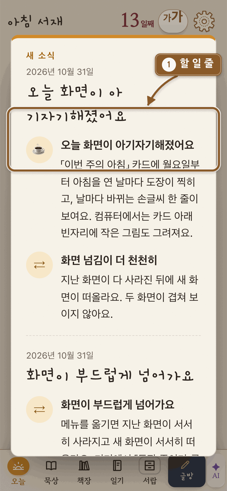
한옥의 대청은 방과 방을 잇는 마당 같은 자리입니다. 어디서든 대청으로 나오면 다른 방이 보입니다. 위 메뉴가 그 대청입니다.
기대 효과
길을 잃어도 위 메뉴로 돌아오면 됩니다. 톱니를 두 번 누르면 설정을 보고 하던 글로 바로 돌아옵니다.
5장 설정 화면 한 바퀴
한 줄 요약다 정한 칸은 접히고, 정할 것이 남은 칸만 펼쳐집니다.
길오른쪽 위 톱니 → 「설정」
화면 읽는 법
- PC에서는 왼쪽에 갈래 다섯, 오른쪽에 칸 목록이 있습니다. 휴대폰에서는 갈래가 위에 알약으로 놓입니다.
- 칸마다 한 줄로 제목·요약·상태(「켜짐」·「연결됨」·「설정됨」·「선택」·「꺼짐」)를 보입니다.
- 정할 것이 남았으면 맨 위에 「설정 필요 N곳 →」이 뜹니다. 누르면 그 칸으로 갑니다.
- 「모두 펼치기」·「모두 접기」로 한꺼번에 엽니다. 펼치고 접은 것은 이 기기가 기억합니다.
갈래와 칸
| 갈래 | 칸 | 무엇을 정하나 |
|---|---|---|
| 아침 | 성경 통독 | 통독표와 읽는 방식(「달력대로」·「이어 읽기」) |
| 아침 | 오늘의 묵상 자료 | 묵상 화면의 오늘 본문·해설·음성이 어디서 오는지(지금은 성서유니온 「매일성경」). 나중에 아침 서재 집필진의 묵상으로 바꿀 수 있게 만들어 두었고, 바뀌면 이 칸이 알려 줌 |
| 아침 | 아침 알림 | 날마다 정한 시각(오전 4~9시)에 오늘 분량·말씀 질문·책 질문을 구글 메일로 받기 |
| 아침 | 찬송가·CCM 듣기 | 유튜브 열쇠를 넣으면 앱 안 작은 창에서 재생 |
| 아침 | 이어지는 아침 | 이어서 쓴 날 수 |
| 쓰기 | 따옴표 저절로 바꾸기 | "를 “ ”로, ...를 …로, --를 —로(이 기기만) |
| 쓰기 | 나를 부르는 호칭 | 앱과 AI가 여러분을 부르는 말 |
| 쓰기 | 쓰는 동안 조용히 | 집중 시간(뽀모도로) 길이, 휴대폰 방해금지 설정 방법 |
| 쓰기 | AI가 따를 것 — 규칙·말투 | AI가 지킬 규칙과 말투 기준 |
| 화면·기기 | 화면 꾸미기 | 보기 크기, 도움말 모드, 밝기, 쓰는 글 글자, 종이 색, 글자 색, 맞춤법 밑줄, 매일성경 글자·보기(이 기기만) |
| 화면·기기 | 앱으로 쓰기 | 1장의 설치 |
| 화면·기기 | 다른 기기 연결 | QR·연결 링크 복사·이 기기 연결 끊기 |
| 바깥 연결 | 노션 | 노션 연결 키, 묵상 자동 싣기 |
| 바깥 연결 | 주석 서재 | 주석 폴더, 그리고 AI 열쇠(클로드·제미나이)를 넣는 「요약 열쇠」 |
| 바깥 연결 | 책 표지 찾기 (카카오) | 한국 책 표지 검색 열쇠 |
| 바깥 연결 | 목차·쪽수 (국립중앙도서관) | 목차·쪽수 자동 채우기 인증키 |
| 기록 지키기 | 자동 백업 · 간직된 곳 | 구글 백업 상태, PC 폴더 백업, 손으로 백업·복원 |
나를 부르는 호칭
- 「설정 → 쓰기 → 나를 부르는 호칭」을 엽니다.
- 칸에 부르기 원하는 말을 적고 엔터를 누릅니다. 「목사님」·「요한님」·「팀장님」 알약을 눌러도 됩니다.
- 비워 두면 「목사님」으로 부릅니다. 이 값은 다른 기기에도 함께 따라갑니다.
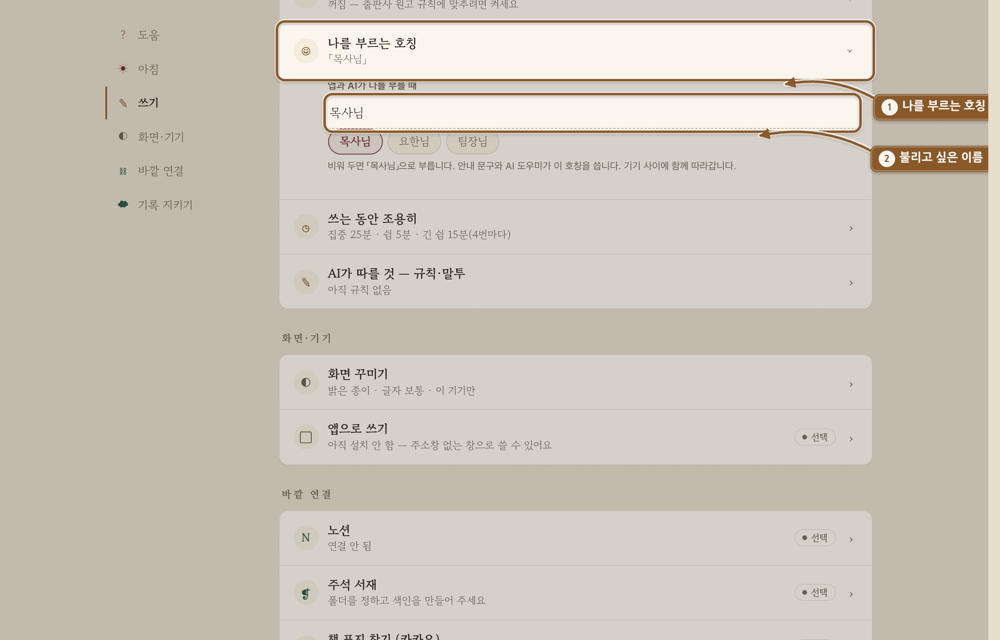
AI 열쇠 넣기
- 「설정 → 바깥 연결 → 주석 서재」를 펼칩니다.
- 「요약 열쇠 넣기」를 펼칩니다.
- 제미나이 열쇠나 클로드 열쇠를 칸에 붙여 넣고 「저장」을 누릅니다.
- 클로드를 쓰면 「클로드 크레딧」 상자에 남은 금액(추정치)이 보입니다. $1 아래로 내려가면 메일과 앱에서 알려 줍니다.
노션 잇기
- 「설정 → 바깥 연결 → 노션」을 펼칩니다.
- 「연결 방법」의 세 단계를 따라 노션에서 내부 통합 시크릿을 복사합니다.
- 칸에 붙여 넣고 「저장」을 누릅니다.
- 「묵상은 간직할 때 노션에 자동으로 싣기」를 켭니다.
아침 알림 메일
- 「설정 → 아침 → 아침 알림」에서 「보낼 시각」을 고릅니다.
- 「알림 켜기」를 누릅니다.
- 처음 한 번은 앱스 스크립트 편집기에서 turnOnMorningMail을 실행해 알림 시계를 놓아야 합니다. 앱이 그 안내를 띄웁니다.
옛 수도자들은 아침 기도 전에 촛불과 책을 제자리에 두었습니다. 준비가 끝나 있으면 마음은 바로 말씀으로 갑니다. 설정은 그 준비를 한 번에 끝내 두는 자리입니다.
기대 효과
아침마다 무엇을 켜고 넣을지 고민하지 않습니다. 「설정 필요」 표시만 보면 남은 일을 압니다.
작은 팁·주의
- 「화면 꾸미기」·「따옴표」·「집중 시간」은 이 기기만 바뀝니다. 휴대폰과 컴퓨터를 따로 맞춥니다.
- 맞춤법 밑줄을 「규칙 + 인공지능」으로 켜면, 5초 쉴 때마다 바뀐 문단이 AI 회사로 보내집니다. 켤 때 확인 창이 뜹니다.
6장 도움말 모드
한 줄 요약단추에 마우스를 올리면 그 단추가 하는 일을 카드로 보여 줍니다.
켜고 끄기
- 톱니 → 「화면·기기」 → 「화면 꾸미기」를 엽니다.
- 「도움말 모드」 줄의 「단추 설명 보기」 스위치를 누릅니다.
- 오른쪽에 「켬」 또는 「끔」이 보입니다. 처음에는 켜져 있습니다.
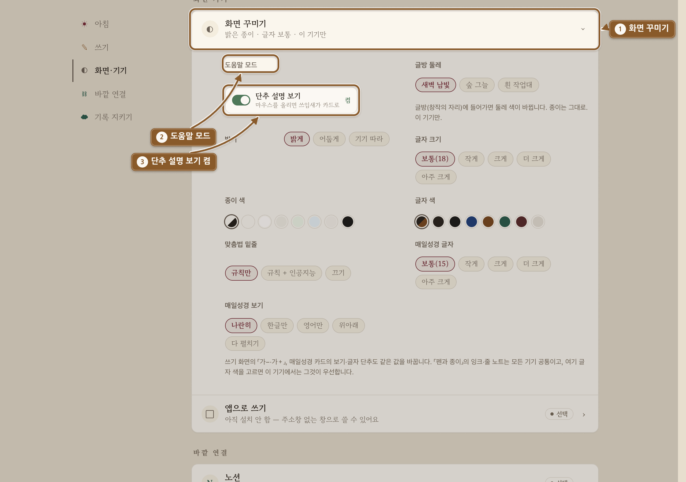
쓰는 법
- 궁금한 단추·메뉴·알약·탭 위에 마우스를 올립니다.
- 0.4초쯤 지나면 단추 이름과 쓰임새가 적힌 카드가 뜹니다.
- 누르거나 스크롤하거나 자판을 치면 카드는 바로 사라집니다.
- 고르기 칸에서는 지금 고른 값을 이름으로 보여 줍니다.
- 휴대폰·태블릿처럼 손가락으로 누르는 기기에서는 뜨지 않습니다.
- 어느 화면에서든
?키를 누르면 「키보드로 쓰기」 안내가 뜹니다(부록 단축키 모음).
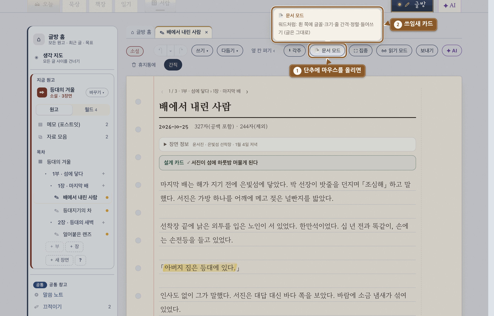
좋은 선생은 답을 미리 늘어놓지 않고, 학생이 멈춘 자리에서 한마디를 건넵니다. 도움말 모드는 멈춘 자리에서만 말합니다. 익숙해지면 꺼 두어도 됩니다.
기대 효과
설명서를 펴지 않고도 처음 보는 단추를 알 수 있습니다. 예컨대 「✦ 피드백·첨삭」이나 「커서에서 나누기」가 무엇인지 그 자리에서 압니다.
2부날마다의 자리
들어가는 글 — 날마다의 자리는 작가의 아침 훈련입니다
이 부에서는 날마다 드나드는 여섯 자리를 다룹니다. 오늘, 묵상, 말씀 듣기, 일기, 책장, 서랍입니다. 모두 짧게 머물러도 되는 자리입니다.
이 자리들은 글 한 편을 끝내는 곳이 아닙니다. 글을 쓸 사람을 길러 내는 곳입니다. 운동선수가 시합보다 아침 연습에 더 많은 시간을 쓰듯, 작가에게도 아침 훈련이 있습니다.
천천히 읽기, 붙잡은 문장 옮겨 적기, 하루를 한 줄로 남기기. 이것은 생각을 단련하는 지적 활동입니다. 동시에 말씀 앞에서 자기를 돌아보는 영적 활동입니다.
이 앱을 만든 분은 이렇게 말합니다. 묵상도, 자기계발도 모두 작가에게 필요한 지적 활동이고, 그것이 곧 영적인 활동이 된다고요. 처음이라도 괜찮습니다. 오늘 한 줄이면 충분합니다.
오늘 — 하루를 여는 첫 화면
한 줄 요약오늘 할 일을 한눈에 보고, 말씀과 책으로 첫발을 떼는 자리입니다.
화면에 있는 것
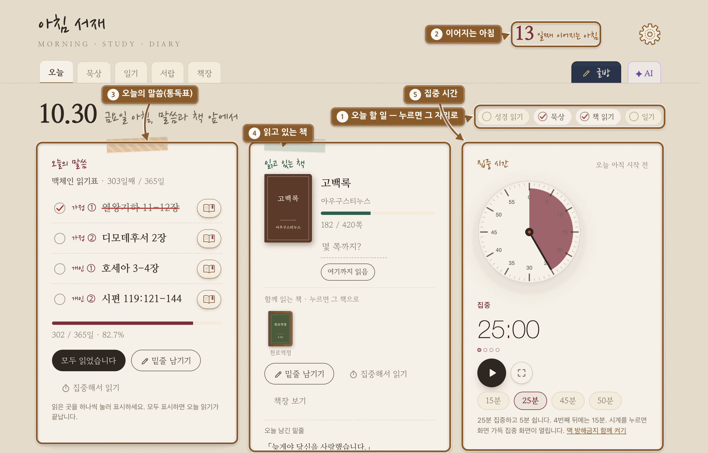
| 자리 | 하는 일 |
|---|---|
| 날짜 줄 오른쪽 할 일 줄 | 「성경 읽기」「묵상」「책 읽기」「일기」 — 오늘 한 일에 손글씨 체크가 그려집니다. 누르면 그 자리로 갑니다(성경 읽기 → 아래 「오늘의 말씀」 카드가 빛남, 묵상 → 묵상 쓰기, 책 읽기 → 책장, 일기 → 오늘 일기). 휴대폰에서는 두 줄 두 칸의 큰 단추입니다 |
| 오늘의 말씀 | 고른 통독표의 오늘 분량 |
| 읽고 있는 책 | 지금 읽는 책과 읽은 쪽 |
| 집중 시간 | 아날로그 시계 모양의 뽀모도로 |
| 말씀 앞에서 묻기 · 책 앞에서 묻기 | 날마다 바뀌는 질문 |
| 오늘의 기록 | 오늘 남긴 밑줄·글·글자 수, 끄적이기 |
| 다시 만나는 밑줄 · 1년 전 오늘의 나 | 지난 기록을 다시 보여 줍니다 |
사용법 — 오늘의 말씀과 책
- 위 메뉴 → 「오늘」을 누릅니다.
- 「오늘의 말씀」에서 읽은 분량을 하나씩 눌러 표시합니다. 분량 오른쪽의 「읽기 ↗」 단추를 누르면 그 본문이 새 창으로 열립니다.
- 다 읽으면 「모두 읽었습니다」를 누릅니다. 「오늘 읽음」 도장이 찍힙니다.
- 마음에 남은 구절은 「밑줄 남기기」로 옮겨 적습니다.
- 「읽고 있는 책」 칸에 몇 쪽까지 읽었는지 적고 「여기까지 읽음」을 누릅니다.
- 떠오른 생각은 「끄적이기」 칸에 한 줄 적고 「끄적여 두기」를 누릅니다.
통독 방법과 쉬는 요일은 오른쪽 위 톱니(설정) → 아침 → 「성경 통독」에서 정합니다. 쉬는 날에는 「오늘은 쉬는 날입니다」 카드가 뜹니다. 그래도 읽고 싶으면 「그래도 읽기」를 누르세요.
이어지는 아침
화면 맨 위에 「N일째 이어지는 아침」이 보입니다. 말씀을 읽거나, 책 쪽수를 적거나, 밑줄을 남기거나, 글을 간직한 날을 셉니다.
- 밤 12시가 지나면 날이 넘어갑니다. 0시부터 새벽 4시 30분까지는 「새벽」이라고 씁니다.
- 쉬는 요일은 건너뛰고 셉니다. 쉬어도 끊기지 않습니다.
- 처음부터 다시 세고 싶으면 설정 → 아침 → 「이어지는 아침」 → 「오늘부터 다시 세기」. 날 수만 새로 세고 기록은 하나도 지우지 않습니다.
아침 알림 메일
- 설정 → 아침 → 「아침 알림」을 엽니다.
- 「보낼 시각」을 오전 4시~9시 가운데서 고릅니다.
- 「알림 켜기」를 누릅니다. 바꿀 때는 「시각 바꾸기」, 그만둘 때는 「끄기」.
메일에는 오늘의 통독 분량, 말씀 질문, 책 질문, 읽는 책이 담깁니다. 휴대폰 메일 알림을 켜 두면 알림으로 받습니다. 쉬는 요일에는 보내지 않습니다.
집중 시간 (뽀모도로)
- 「집중 시간」 카드에서 15분·25분·45분·50분 가운데 하나를 고릅니다.
- 둥근 재생 단추를 누르면 시작합니다. 시계 판의 부채꼴이 남은 시간만큼 줄어듭니다.
- 시계를 누르면 화면 가득한 집중 화면이 열립니다. Esc로 닫고, 스페이스로 멈추거나 다시 시작합니다.
- 책이나 말씀을 읽을 때는 「집중해서 읽기」를 누르세요. 읽는 것(책 이름과 쪽, 또는 오늘 말씀)이 시계 위에 적힌 채 시작합니다.
- 집중이 끝나면 「남겨 둘 한 줄이 있나요?」 칸이 뜹니다. 적으면 끄적이기에 담깁니다.
다른 화면으로 옮기면 시계는 화면 위 가운데 작은 유리 알약이 됩니다. 글을 쓰는 동안에는 더 작고 옅어집니다.
세부 설정은 설정 → 쓰기 → 「쓰는 동안 조용히」에 있습니다. 기본은 집중 25분, 쉼 5분, 4번마다 긴 쉼 15분입니다.
- 「집중 중 1분 동안 가만히 두면 집중 화면(화면보호기)으로」 — 기본은 꺼짐입니다. 쓰는 화면과 글방에서는 열리지 않습니다.
- 「끝날 때 작은 종소리」, 「집중이 끝나면 쉼을 저절로 시작」, 「집중하는 동안 방해금지 켜기」(맥·아이폰 단축어)도 고를 수 있습니다.
- 집중 시간 설정은 이 기기에만 남습니다.
하루의 첫 자리를 정한다는 것
수도원 전통은 하루를 시간의 기도로 나누었습니다. 해가 뜨기 전에 먼저 하나님 앞에 서는 자리를 두었지요. 무엇을 먼저 하느냐가 그날의 결을 정한다고 보았기 때문입니다.
오늘 화면은 그 첫 자리를 작게 만들어 둔 것입니다. 할 일 목록이 아니라 「오늘 무엇 앞에 먼저 설까」를 묻는 화면입니다.
체크가 비어 있는 날도 있을 겁니다. 그런 날을 꾸짖지 마세요. 「이어지는 아침」이 쉬는 요일을 건너뛰는 것도 같은 뜻입니다. 규칙보다 돌아오는 마음이 더 중요합니다.
시간을 나누면 집중이 생긴다
뽀모도로 기법은 1980년대 후반 프란체스코 시릴로가 토마토 모양 주방 타이머로 시작한 방법입니다. 짧게 집중하고, 반드시 쉬는 것이 핵심입니다.
쉼을 건너뛰면 다음 집중이 얕아집니다. 그래서 이 앱은 쉼을 초록빛 숨 고르기 원으로 따로 보여 줍니다.
작가에게 왜 필요한가
글은 영감보다 습관에서 나옵니다. 많은 작가가 정해진 시간에 책상에 앉는 것을 가장 큰 비결로 꼽습니다.
오늘 화면은 그 「정해진 시간」을 만들어 줍니다. 25분 한 번이면 원고지 몇 장을 읽거나 쓸 수 있습니다. 집중이 끝난 뒤 남기는 한 줄은 나중에 글감이 됩니다.
기대 효과
- 아침에 무엇부터 할지 고민하는 시간이 줄어듭니다.
- 이어진 날 수가 눈에 보여, 작은 습관이 쌓이는 것을 느낍니다.
- 메일 알림 덕분에 앱을 열지 않은 날에도 오늘 분량을 압니다.
- 집중과 쉼이 나뉘어, 긴 독서도 지치지 않고 이어 갑니다.
팁「다시 만나는 밑줄」에는 일주일 넘게 지난 밑줄 하나가 뜹니다. 「오늘 이 문장으로 쓰기」를 누르면 그 문장으로 새 글이 시작됩니다.
묵상 — 말씀 앞에 머무는 자리
한 줄 요약매일성경 본문을 천천히 읽고, 관찰하고, 기도하며 쓰는 자리입니다.
사용법 — 본문 읽기
- 위 메뉴 → 「묵상」을 누릅니다. 맨 위에 「오늘의 매일성경」 카드가 뜹니다.
- 제목, 본문 범위, 오늘의 찬송가 번호가 보입니다. 「‹ ›」로 앞뒤 날을 볼 수 있습니다(앞뒤 60일까지).
- 「보기」에서 「나란히」「한글만」「영어만」「위아래」를 고릅니다. 앱 안 본문은 개역한글과 영어(WEB)입니다. 둘 다 저작권이 끝난 공개본입니다.
- 다른 번역은 단추로 공식 사이트에서 같은 구절을 엽니다. 「개역개정 ↗」「새한글 ↗」「새번역 ↗」「NIV ↗」.
- 「가−」「가＋」로 글자 크기를, 「다 펼치기」로 본문 칸을 다 펼칩니다.
- 「위에 띄우기」를 누르면 본문이 다른 창 위에 늘 떠 있는 작은 창이 됩니다(크롬·엣지).
- 「해설 보기」는 성서유니온의 매일성경 해설을 보여 줍니다. 개인 묵상용으로만 보여 주고, 기록과 노션에는 남기지 않습니다.
- 묵상 자료가 어디서 오는지는 「설정 → 아침 → 오늘의 묵상 자료」에 적혀 있습니다. 아침 서재는 묵상 자료를 갈아 끼울 수 있게 만들어 두었습니다. 나중에 아침 서재 집필진이 쓴 묵상이 올라오면 같은 자리에서 그대로 보입니다.
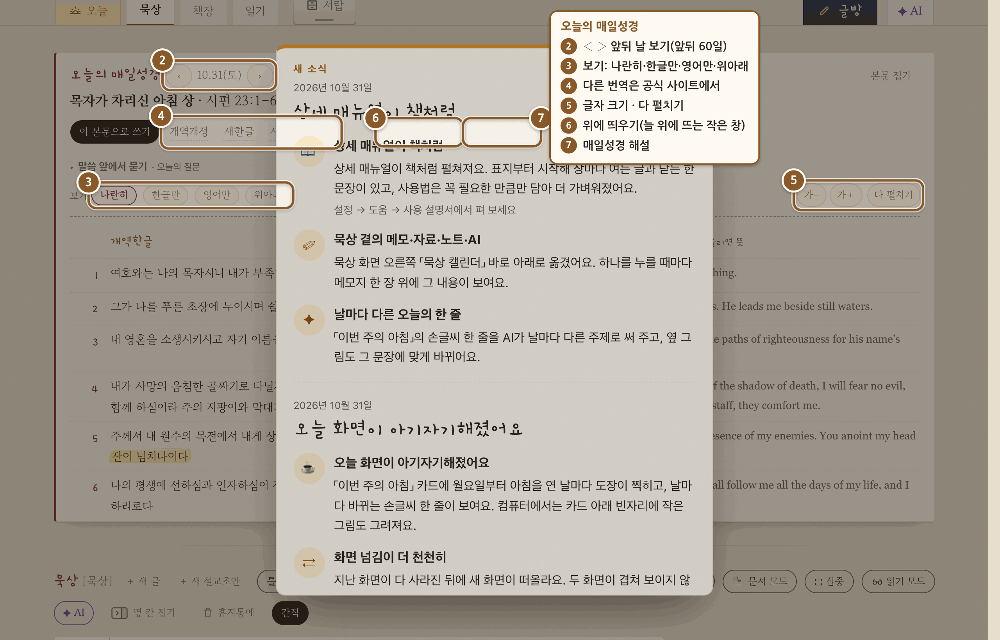
사용법 — 형광펜·밑줄·메모·영어 낱말
- 본문에서 글자를 고르면 작은 막대가 뜹니다.
- 형광펜 네 색(노랑·연두·분홍·하늘), 「U」(밑줄), 「✎」(메모)를 고릅니다.
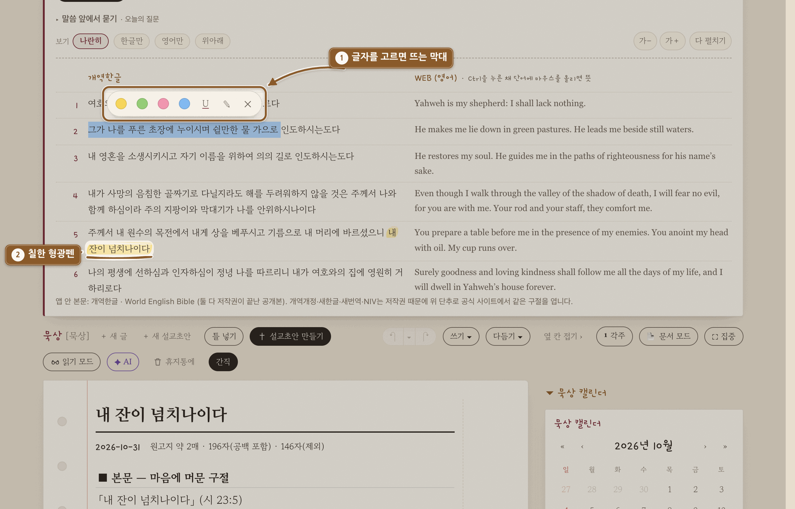
그림 2-3 본문 글자를 고르면 작은 막대가 뜹니다. 형광펜 네 색, 밑줄, 메모 가운데 고릅니다. - 「✎」을 누르면 메모 칸이 열립니다. 생각을 적고 「간직」을 누르면 밑줄 목록에도 들어갑니다.
- 영어 낱말 뜻: 컴퓨터는 Ctrl을 누른 채 낱말에 마우스를 올립니다. 휴대폰은 낱말을 누릅니다. 우리말 뜻, 발음, 영어 풀이가 뜹니다.
사용법 — 묵상 쓰기
- 「이 본문으로 쓰기」를 누르면 본문 칸에 오늘 본문이 들어갑니다.
- 「틀 넣기」를 누르면 묵상 틀의 소제목(■)이 들어옵니다.
- 소제목 아래에 천천히 씁니다. 손을 3초 쉬면 저절로 간직됩니다. 바로 간직하려면 「간직」이나 ⌘S, 또는 오른쪽 칸의 봉인을 누릅니다.
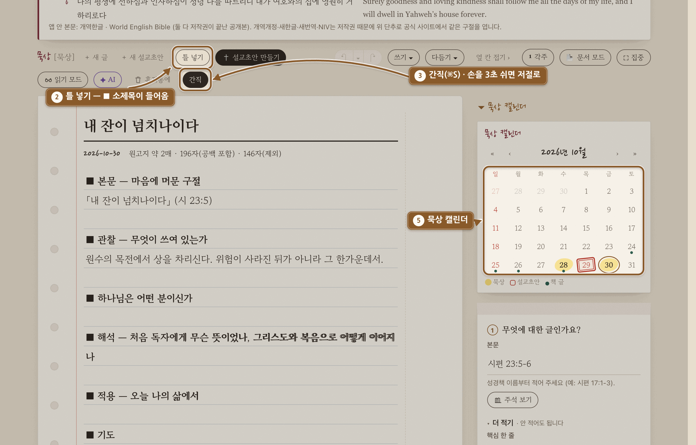
그림 2-4 「틀 넣기」를 누르면 묵상 틀의 소제목(■)이 들어오고, 그 아래에 천천히 씁니다. - 한 줄에 「창 1:1-3」만 적고 ⇧엔터를 누르면 그 구절(개역한글)이 들어옵니다.
- 오른쪽 칸 「묵상 캘린더」에서 지난 묵상을 날짜로 찾습니다.
묵상 틀 — 소제목마다 묻는 것
| 소제목 | 묻는 것 | 쓰는 법 |
|---|---|---|
| ■ 본문 — 마음에 머문 구절 | 어느 구절에서 걸음이 멈췄나 | 구절을 그대로 옮겨 적습니다 |
| ■ 관찰 — 무엇이 쓰여 있는가 | 누가, 언제, 어디서, 무엇을 했나 | 해석하지 말고 보이는 것만 |
| ■ 하나님은 어떤 분이신가 | 이 본문이 보여 주는 하나님 | 「하나님은 ~하시는 분」 한 문장 |
| ■ 해석 — 처음 독자에게 무슨 뜻이었나, 그리스도와 복음으로 어떻게 이어지나 | 그때의 뜻과 복음 안의 뜻 | 그때 → 복음 순서로 |
| ■ 적용 — 오늘 나의 삶에서 | 나는 무엇을 바꿀까 | 이번 주에 할 수 있는 작은 한 걸음 |
| ■ 기도 | 말씀을 기도로 돌려드리기 | 2인칭으로, 짧게 |
| ■ 설교 씨앗 — 언젠가 전하고 싶은 한 줄 | 나중에 나눌 한 줄 | 한 문장만 |
묵상에서 설교초안으로
- 간직한 묵상을 열고 위 도구 줄의 「설교초안 만들기」를 누릅니다.
- 같은 본문(같은 책·장)으로 쓴 다른 묵상이 함께 보입니다. 이어받을 묵상을 고릅니다.
- 「쓰일 자리」는 골라도 되고 비워도 됩니다.
- 「설교초안 쓰기」를 누르면 새 설교초안이 열립니다.
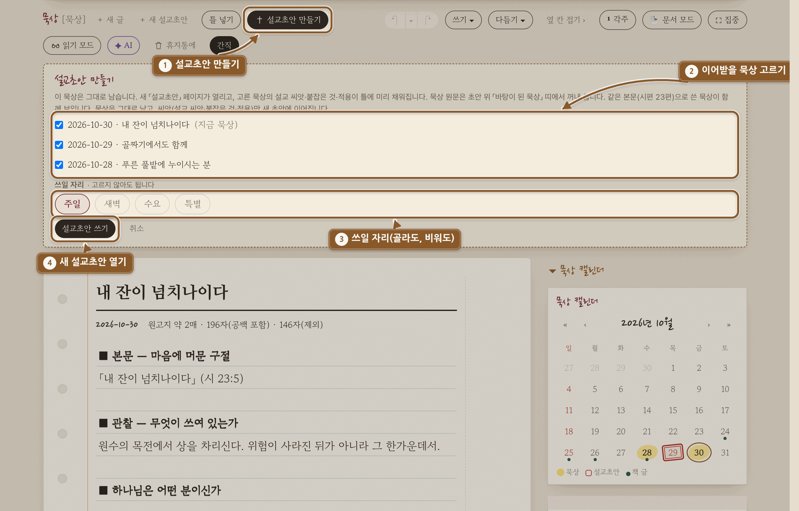
묵상은 그대로 남습니다. 설교 씨앗, 붙잡은 것, 적용, 형광펜 친 문장이 초안 틀에 미리 채워집니다. 묵상 원문은 초안 위 「바탕이 된 묵상」 띠에서 「넣기」로 필요한 부분만 가져옵니다. 묵상에서 나오지 않는 설교는 「＋ 새 설교초안」으로 바로 시작합니다.
노션 자동 저장
노션 자동 저장은 「묵상」 한 종류만 합니다. 묵상을 간직하면 구글에 저장되고, 노션에도 실립니다(노션이 연결된 경우). 설교초안은 「보내기」나 「노션에 보내기」를 눌렀을 때만 갑니다.
주석 서재
- 먼저 설정 → 바깥 연결 → 「주석 서재」에서 「색인 만들기」를 한 번 누릅니다. 드라이브 「성경공부」 폴더의 주석 파일을 찾을 수 있게 됩니다.
- 쓰기 화면 오른쪽 칸 본문 칸 아래 「주석 보기」를 누릅니다.
- 이 본문 부분을 담은 주석의 발췌가 먼저 보입니다(한 번에 추천 순 6권까지).
- 정리가 필요하면 「요약하기」를 누릅니다. 이때만 발췌가 AI로 보내집니다.
묵상 글이 아직 짧으면(80자 미만) 앱이 한 번 묻습니다. 「먼저 본문과 씨름한 뒤 주석을 보는 편이 묵상에 좋습니다.」 그래도 보려면 확인을 누르면 됩니다.
렉시오 디비나와 묵상 틀
렉시오 디비나는 「거룩한 읽기」라는 뜻입니다. 12세기 카르투시오 수도사 귀고 2세가 네 계단으로 정리했습니다. 읽기, 묵상, 기도, 관상입니다.
| 렉시오 디비나 | 묵상 틀 |
|---|---|
| 읽기(렉시오) — 천천히, 소리 내듯 | ■ 본문, ■ 관찰 |
| 묵상(메디타시오) — 곱씹기 | ■ 하나님은 어떤 분이신가, ■ 해석 |
| 기도(오라시오) — 말씀에 응답하기 | ■ 기도 |
| 관상(콘템플라시오) — 말없이 머물기 | 기도 뒤의 침묵 (틀에 칸이 없습니다) |
관상에는 일부러 칸이 없습니다. 쓰지 않고 머무는 시간이기 때문입니다. 기도를 적은 뒤 1분만 펜을 내려놓아 보세요.
오늘날에는 다섯째 계단으로 「행함」을 더해 말하는 이들도 있습니다. 틀의 「■ 적용」이 그 자리입니다.
이냐시오 성찰과도 이어집니다. 이냐시오는 하루를 돌아보며 감사하고, 하나님이 어디 계셨는지 묻게 했습니다. 「하나님은 어떤 분이신가」 칸이 바로 그 질문입니다.
한국 교회의 큐티 전통은 날마다 정해진 본문을 짧게 읽고 쓰는 습관을 길렀습니다. 묵상 카드가 매일성경 본문으로 시작하는 까닭입니다.
관찰 → 해석 → 적용, 귀납적 성경 연구
귀납적 성경 연구는 결론을 먼저 들고 가지 않습니다. 본문에서 보이는 것부터 모아 뜻을 이끌어 냅니다. 순서는 늘 관찰, 해석, 적용입니다.
- 관찰: 무엇이 쓰여 있는가. 되풀이되는 낱말, 「그러므로」 같은 잇는 말, 대조, 질문을 찾습니다.
- 해석: 무슨 뜻이었는가. 처음 독자의 자리에서, 앞뒤 문맥 안에서 읽습니다.
- 적용: 나에게 무엇을 요구하는가. 해석에서 나온 것만 적용합니다.
순서를 지키면 내 생각을 본문에 덧씌우는 일이 줄어듭니다.
초보가 빠지기 쉬운 함정과 처방
| 함정 | 모습 | 처방 |
|---|---|---|
| 바로 적용으로 뛰기 | 읽자마자 「나도 이렇게 살아야지」 | 관찰 칸에 다섯 가지를 먼저 적습니다 |
| 주석부터 펴기 | 남의 말이 내 묵상이 됨 | 관찰·해석을 적은 뒤 「주석 보기」 |
| 한 구절만 떼어 읽기 | 앞뒤 문맥을 놓침 | 해석 칸에 앞 단락 한 줄 요약 |
| 인물을 본보기로만 읽기 | 「다윗처럼 용감하자」 | 「하나님은 어떤 분이신가」를 먼저 |
| 너무 많이 쓰기 | 길어져 지치고 끊김 | 칸마다 두세 줄이면 충분합니다 |
| 적용이 막연함 | 「더 사랑하자」 | 이번 주, 누구에게, 무엇을 — 셋을 넣습니다 |
작가에게 왜 필요한가
묵상은 깊이 읽기 훈련입니다. 짧은 본문을 여러 번 읽고, 낱말 하나에 머뭅니다. 좋은 작가는 남의 문장을 이렇게 읽는 사람입니다.
관찰 칸은 묘사하는 눈을 길러 줍니다. 판단을 미루고 보이는 것만 적는 연습은 장면을 쓰는 힘이 됩니다.
기도와 적용 칸은 내면의 목소리를 듣게 합니다. 남이 아닌 내가 무엇을 느끼는지 적어 본 사람만 자기 문장을 씁니다. 날마다 쓴 「설교 씨앗」 한 줄은 훗날 책의 첫 문장이 되기도 합니다.
기대 효과
- 본문을 「빨리 읽고 끝내기」에서 「한 구절에 머물기」로 바뀝니다.
- 틀이 질문을 대신 던져 주어, 빈 종이 앞에서 막히지 않습니다.
- 묵상이 쌓이면 같은 본문의 묵상끼리 모여 설교초안의 씨앗이 됩니다.
- 노션에 날마다 묵상이 모여, 따로 정리하지 않아도 묵상집이 생깁니다.
팁휴대폰에서는 매일성경 카드가 처음에 접혀 있습니다. 「본문 펼치기」를 한 번 누르면 그 뒤로 기억합니다.
말씀 듣기와 찬송·CCM
한 줄 요약오늘 본문을 귀로 듣고, 오늘의 찬송가와 어울리는 곡을 앱 안에서 듣는 자리입니다.
사용법 — 매일성경 듣기
- 묵상 → 「오늘의 매일성경」 카드에서 「듣기」를 누릅니다.
- 앱 안 작은 재생기가 뜹니다. 다른 메뉴로 옮겨도 계속 들립니다.
- 「↺ 10초」「10초 ↻」로 뒤로·앞으로 갑니다.
- 빠르기는 0.8×, 1×, 1.2×, 1.5× 가운데 고릅니다. 이 기기에 기억합니다.
- 「▾」를 누르면 작은 정사각형이 됩니다. 들은 만큼 바탕이 은은하게 채워집니다.
- 재생기는 끌어서 옮길 수 있습니다. 자리를 기억하고, 화면 밖으로는 나가지 않습니다.
- 중간에 닫아도 들은 자리를 기억해, 다시 열면 거기서 이어집니다. 휴대폰 잠금 화면에서도 조작할 수 있습니다.
사용법 — 찬송가·CCM
- 매일성경 카드의 「찬송가 N장」 옆 재생 단추를 누릅니다.
- 앱 안 음악 플레이어가 열리고 유튜브에서 그 찬송가를 틉니다. 유튜브뮤직 공식 음원이 있으면 먼저 고르고, 제목 앞에 「MUSIC」이 붙습니다.
- 옆의 음량 막대로 소리를, 「CCM」으로 오늘 본문과 어울리는 곡 목록을 엽니다.
- 플레이어 안 ⏮·재생·⏭으로 곡을 옮깁니다. 목록은 오늘 찬송가 → CCM 순서입니다.
- 「⋯」 메뉴에서 크기(「작게」「보통」「크게」), 자리(네 귀퉁이 또는 「자유」), 「📌 끌리지 않게」, 재생 방식(「이어 듣기」「한 곡씩」「한 곡 반복」)을 고릅니다.
말씀 듣기와 음악은 서로 겹치지 않습니다. 하나를 틀면 다른 하나가 멈춥니다.
앱 안에서 들으려면 설정 → 아침 → 「찬송가·CCM 듣기」에 유튜브 열쇠가 있어야 합니다. 없으면 찬송가 옆 「♪ ↗」가 유튜브뮤직 검색을 새 창으로 엽니다.
들음에서 믿음이 난다
글이 귀하던 시절, 말씀은 대부분 귀로 전해졌습니다. 회당과 교회에서 소리 내어 읽었고, 사람들은 들으며 외웠습니다.
눈으로 읽을 때 지나친 낱말이 귀로 들을 때 걸리기도 합니다. 묵상하기 전에 한 번 듣고, 쓴 뒤에 한 번 더 들어 보세요.
찬송은 오래된 묵상의 노래입니다. 「한 곡 반복」은 찬송을 외우며 부를 때를 위해 만들었습니다.
작가에게 왜 필요한가
귀로 들으면 문장의 호흡이 들립니다. 긴 문장이 어디서 숨이 차는지, 짧은 문장이 어떻게 힘을 얻는지 알게 됩니다.
좋은 문장은 소리 내어 읽기 좋은 문장입니다. 날마다 잘 짜인 본문 낭독을 듣는 것은 문장의 박자를 몸에 익히는 일입니다.
기대 효과
- 운전하거나 걸으면서도 오늘 본문을 만납니다.
- 같은 본문을 눈과 귀로 두 번 만나 더 오래 남습니다.
- 찬송가 번호만 보고 지나치던 것을 실제로 부르게 됩니다.
!주의유튜브 규칙 때문에 영상 칸은 숨기거나 아주 작게 할 수 없습니다.
일기 — 하루를 붙잡는 공책
한 줄 요약책처럼 넘기는 공책에 하루를 짧게 적고 꾸미는 자리입니다.
사용법 — 쓰기
- 위 메뉴 → 「일기」를 누릅니다. 펼친 책 모양의 일기장이 열립니다.
- 왼쪽 쪽 위에서 날씨(맑음·구름 조금·흐림·비·눈·안개)와 기분(기쁨·좋음·평안·울컥함·뜨거움·감사·기도)을 고릅니다.
- 왼쪽 쪽에는 「오늘 읽은 말씀」「오늘 읽은 책」「밑줄」이 저절로 채워집니다. 「오늘」·「묵상」에서 말씀을 읽고 표시한 것, 「책장」에서 「여기까지 읽음」을 남긴 것이 그대로 모입니다. 지난날을 펴면 「이날 읽은 말씀」처럼 「이날」로 바뀝니다.
- 오른쪽 쪽 「오늘 일기」 칸에 씁니다. 쓰는 대로 간직됩니다. 칸 크기는 그대로이고, 글이 길어지면 글씨가 조금씩 작아집니다. 가장 작은 글씨로도 넘치면 칸 안에서만 위아래로 넘겨 봅니다.
- 「오늘 쓴 글」에는 이날 쓴 묵상·글이 끼워 둔 쪽지처럼 꽂힙니다. 쪽지에는 제목과 함께 그 글의 하이라이트가 보입니다. 형광펜을 칠한 구절이 있으면 그 색 그대로 두 개까지, 없으면 마음이 담긴 문장 하나를 앱이 골라 「✦ 골라 본 문장」으로 보여 줍니다. 쪽지를 누르면 책 위에 펼쳐지고, 「글 열기 →」로 그 글로 갑니다.
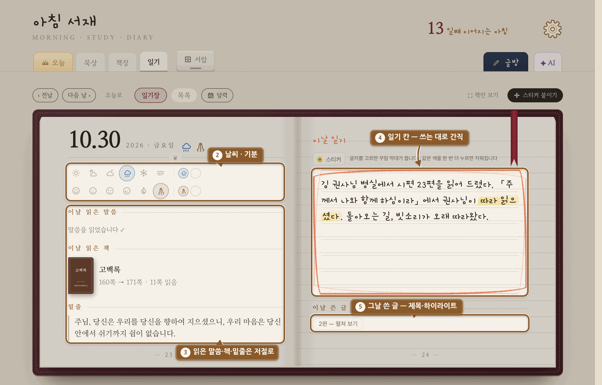
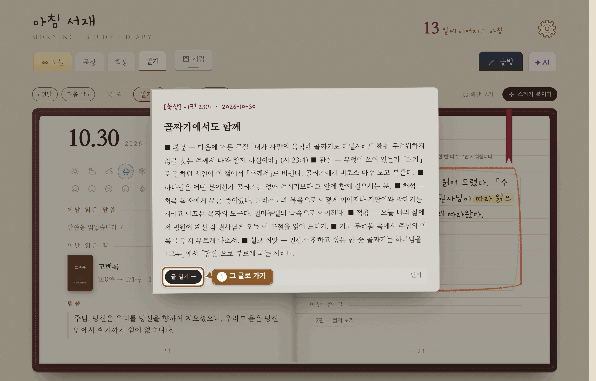
사용법 — 꾸미기
- 일기 글자를 고르면 꾸밈 막대가 뜹니다.
- 형광펜 네 색(노랑·연두·분홍·하늘), 「U」(펜 밑줄, ⌘U), 「꾸밈 지우개」를 고릅니다.
- 같은 색을 한 번 더 누르면 지워집니다.
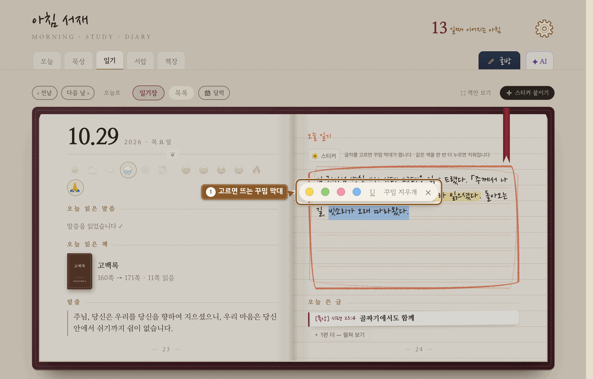
그림 2-8 일기 글자를 고르면 꾸밈 막대가 뜹니다. 형광펜 네 색, 펜 밑줄, 꾸밈 지우개가 있습니다. - 「스티커」(꽃 그림 단추)를 누르면 스티커 창이 열립니다. 고른 뒤 쪽을 누르면 그 자리에 붙습니다.
형광펜은 손으로 칠한 듯, 밑줄은 펜으로 그은 듯 보입니다. 굵게·기울임 단추는 일부러 두지 않았습니다. 손으로 꾸미는 다이어리에는 과하기 때문입니다.
사용법 — 넘기기·찾기
- 책 왼쪽·오른쪽 가장자리를 누르면 전날·다음 날로 넘어갑니다. 휴대폰은 옆으로 쓸어도 됩니다.
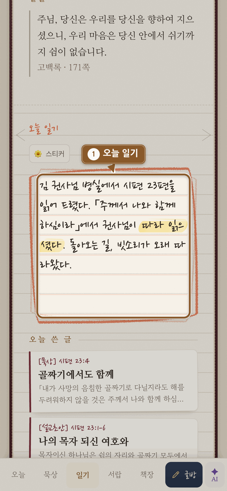
그림 2-9 휴대폰의 일기장은 한 쪽씩 보입니다. 옆으로 쓸어 전날·다음 날로 넘깁니다. - 위 단추 줄의 「‹ 전날」「다음 날 ›」「오늘로」도 씁니다.
- 「달력」을 누르면 달력이 뜹니다. 일기를 쓴 날에 점이 찍혀 있습니다.
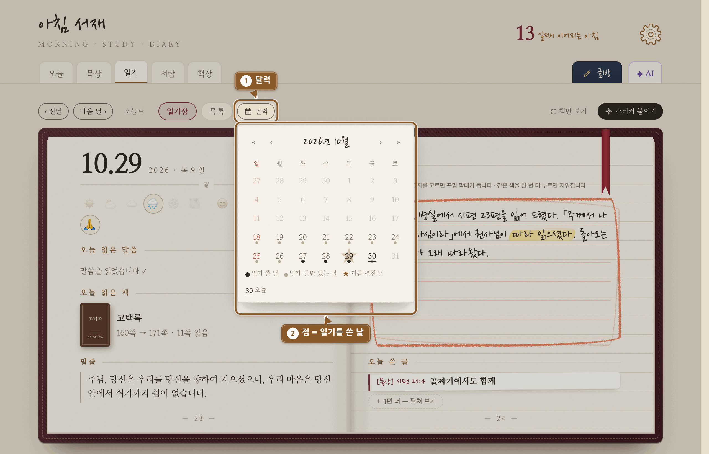
그림 2-10 「달력」을 누르면 일기를 쓴 날에 점이 찍힌 달력이 뜹니다. 날짜를 누르면 그날 쪽으로 넘어갑니다. - 「목록」을 누르면 날짜별 목록으로, 「일기장」을 누르면 다시 책으로 봅니다.
- 「⛶ 책만 보기」를 누르면 메뉴를 숨기고 책만 화면 가득 봅니다. 유리 막대의 ‹ 달력 › ✕로 넘기고, Esc로 돌아옵니다. 책만 보기에서 달력을 열어도 그 자리에서 날짜를 고릅니다.
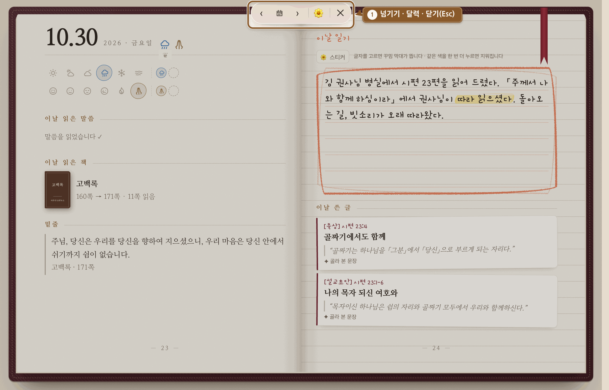
컴퓨터에서는 일기장이 위아래로 스크롤되지 않습니다. 글이 많으면 쪽지를 「＋ n편 더」로 접습니다. 휴대폰에서는 한 쪽씩 넘어갑니다.
일기 쓰기의 역사와 효과
일기는 오래된 글쓰기입니다. 이순신의 『난중일기』는 전쟁 한복판에서도 하루를 적었습니다. 존 웨슬리는 평생 일기로 자기 신앙을 돌아보았습니다.
몽테뉴는 『수상록』에서 「나 자신이 내 책의 재료」라는 태도로 썼습니다. 거창한 사건이 아니라 오늘의 자기를 적는 것, 그것이 일기와 에세이의 뿌리입니다.
현대 심리학도 일기의 힘을 살펴 왔습니다. 제임스 페니베이커의 표현적 글쓰기 연구가 잘 알려져 있습니다. 마음에 걸린 일을 며칠 동안 짧게 써 본 사람들에게서 마음과 몸의 좋은 변화가 보고되었습니다.
짧게라도 날마다
이냐시오 성찰은 하루 끝에 짧게 돌아보는 기도입니다. 오늘 감사한 일, 하나님이 가까이 느껴진 때, 멀어졌던 때를 묻습니다. 일기 한 줄이 그 성찰이 될 수 있습니다.
일기는 하루를 마무리하는 저녁이나 밤에 쓰기 좋습니다. 길게 쓰려 하면 사흘 만에 멈춥니다. 「오늘 하루는 어땠나요? 마음에 남은 장면 하나, 편하게 적어 보세요. 한 줄이어도 충분해요.」라는 안내 글처럼 한 줄이면 충분합니다.
아날로그 감각을 살린 까닭
천 표지, 바느질선, 리본 책갈피, 책장 넘기기. 이 앱의 일기장은 일부러 종이 공책을 닮았습니다.
화면을 위아래로 끝없이 내리는 일기는 「하루」라는 경계가 흐려집니다. 한 쪽에 하루가 담기면 오늘을 닫고 내일을 여는 감각이 생깁니다. 그래서 스크롤 없는 공책으로 만들었습니다.
작가에게 왜 필요한가
일기는 날마다 쓰는 근육을 길러 줍니다. 글은 쓸수록 쉬워집니다. 하루 한 줄이 쌓이면 빈 종이 앞의 두려움이 줄어듭니다.
일기는 자기 목소리를 찾는 곳이기도 합니다. 아무도 읽지 않는 글에서 사람은 가장 솔직해집니다. 그 솔직한 말투가 나중에 에세이와 소설의 목소리가 됩니다. 날씨와 기분을 고르는 작은 습관도 감각을 붙잡는 연습입니다.
기대 효과
- 읽은 말씀, 읽은 책, 쓴 글이 한 쪽에 모여 하루가 한눈에 보입니다.
- 달력의 점이 늘어나며 꾸준함이 눈에 보입니다.
- 지난 일기를 넘겨 보며 마음의 흐름을 알아차립니다.
팁일기를 쓰는 동안에는 휴대폰에서 옆으로 쓸어도 쪽이 넘어가지 않습니다. 안심하고 쓰세요.
책장 — 읽는 책과 밑줄
한 줄 요약읽는 책을 꽂고, 읽은 자리와 밑줄, 독후감을 모아 두는 자리입니다.
사용법 — 책 꽂기
- 위 메뉴 → 「책장」 → 「새 책 꽂기」 칸에 책 이름, 저자, 또는 ISBN을 적습니다.
- 「표지 찾기」를 누르고, 찾은 책에서 「이 책 꽂기」를 누릅니다.
- 찾는 책이 없으면 「제목만으로 꽂기」를 누릅니다.
- 「밀리의 서재」「윌라」 단추는 같은 이름으로 그 서비스를 찾아 줍니다.
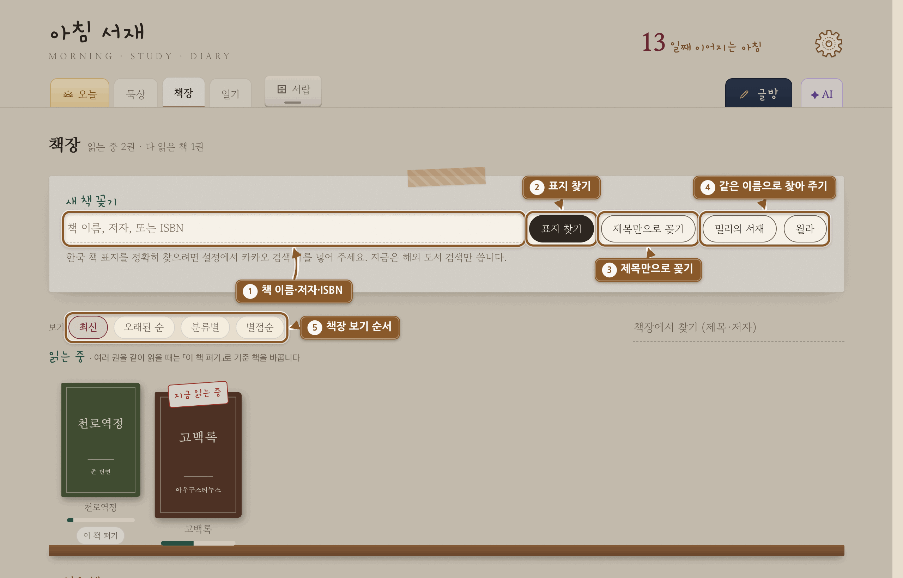
한국 책 표지를 정확히 찾으려면 설정 → 바깥 연결 → 「책 표지 찾기 (카카오)」에 열쇠를 넣습니다.
사용법 — 읽은 자리와 책 정보
- 책 표지를 누르면 책 정보가 열립니다.
- 「읽는 방식」에서 「종이책(쪽)」 또는 「전자책(%)」을 고릅니다.
- 「읽은 쪽」과 「전체 쪽」을 적고 「간직」을 누릅니다. 오늘 화면의 「여기까지 읽음」으로 적어도 됩니다.
- 별점, 분류(24가지, 자동으로 정해지고 바꿀 수 있음)도 정합니다.
- 「국립중앙도서관에서 목차·쪽수 가져오기」로 목차를 채웁니다(설정에 열쇠가 있을 때).
- 여러 권을 함께 읽으면 「이 책 펴기」나 「지금 읽는 책으로」로 기준 책을 바꿉니다.
- 다 읽으면 「다 읽었습니다」. 다 읽은 책은 책등으로 꽂히고, 두께는 쪽수를 따릅니다.
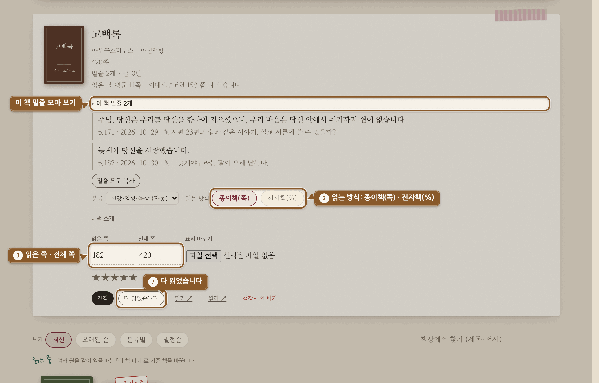
책장 위 「보기」에서 「최신」「오래된 순」「분류별」「별점순」을 고르고, 「책장에서 찾기」로 제목·저자를 찾습니다.
사용법 — 밑줄과 독후감
- 오늘 화면 「읽고 있는 책」 → 「밑줄 남기기」에 문장을 옮겨 적고 쪽수, 한 줄 생각을 더합니다.
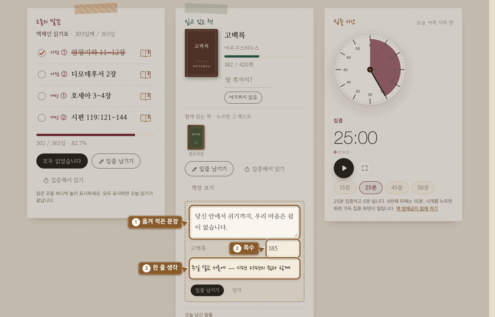
그림 2-14 오늘 화면 「읽고 있는 책」 → 「밑줄 남기기」: 문장을 옮겨 적고 쪽수와 한 줄 생각을 더합니다. - 책 정보의 「이 책 밑줄 N개」를 펼치면 그 책의 밑줄이 모입니다. 「밑줄 모두 복사」로 한꺼번에 복사합니다.
- 「다 읽었습니다」를 누르면 독후감 칸이 열립니다. 다 읽은 책에는 「독후감 쓰기」 단추가 있습니다.
- 「이 책을 한 줄로」와 본문 칸에 씁니다. 치는 대로 저절로 간직됩니다.
- 노션에도 남기려면 「노션 독서 노트로 보내기」를 누릅니다.
책(독서 목록)과 밑줄은 노션이 연결되어 있으면 저절로 갑니다. 독후감은 단추를 눌렀을 때만 갑니다.
공책 문화와 밑줄의 힘
르네상스 시대 학자들은 공책(커먼플레이스 북)을 들고 읽었습니다. 좋은 문장을 주제별로 옮겨 적어 두고, 글을 쓸 때 꺼내 썼습니다. 에라스뮈스는 이 방법을 학생들에게 권했고, 존 로크는 공책 정리법을 따로 써서 남겼습니다.
조선의 정약용도 읽으며 요긴한 대목을 뽑아 적는 초서(抄書)를 강조했습니다. 동서양 모두 「옮겨 적기」를 깊이 읽는 방법으로 보았습니다.
밑줄만 긋고 지나가면 잊힙니다. 손으로 옮겨 적고 한 줄 생각을 붙이면 문장이 내 것이 됩니다. 이 앱의 「밑줄 남기기」가 문장과 「한 줄 생각」을 함께 받는 까닭입니다.
독서 일기
언제, 몇 쪽을 읽었는지 적는 것도 독서 일기입니다. 이 앱은 「여기까지 읽음」을 누른 날을 일기장의 「오늘 읽은 책」에 함께 남깁니다. 한 권을 다 읽은 뒤 돌아보면 그 책과 보낸 날들이 보입니다.
작가에게 왜 필요한가
밑줄은 작가의 글감 창고입니다. 언젠가 쓸 인용, 반박하고 싶은 주장, 마음을 흔든 장면이 거기 모입니다. 쓸 때가 되면 창고에서 꺼내기만 하면 됩니다.
옮겨 적기는 문장 감각을 길러 줍니다. 좋은 문장을 손으로 따라 쓰면 낱말의 순서와 호흡이 몸에 남습니다. 많은 작가가 필사로 글쓰기를 배웠습니다. 독후감의 「한 줄로」는 핵심을 한 문장으로 줄이는 연습입니다. 이것은 모든 글의 첫걸음입니다.
기대 효과
- 몇 권을 읽고 있는지, 어디까지 읽었는지 늘 압니다.
- 흩어진 밑줄이 책마다 모여 다시 찾기 쉽습니다.
- 다 읽은 책이 책등으로 쌓여 나만의 서가가 생깁니다.
- 밑줄에서 「글로 키우기」로 바로 글을 시작할 수 있습니다.
팁쪽수를 잘못 적어 줄이면 앱이 한 번 묻습니다. 마지막 쪽을 적으면 「다 읽은 책으로 옮길까요?」라고 묻습니다.
서랍 — 쓴 글을 모두 찾는 곳
한 줄 요약지금까지 쓴 모든 글을 찾고, 거르고, 원고로 엮고, 지운 글을 되살리는 자리입니다.
사용법 — 찾기와 거르기
- 위 메뉴 → 「서랍」 → 「모든 기록」을 누릅니다.
- 「낱말로 찾기」 칸에 낱말을 적습니다. 제목, 본문, 성경 본문, 주제에서 찾습니다.
- 아래 네 칸으로 거릅니다. 「말씀+책」「모든 글 종류」「모든 성경책」「모든 주제」.
- 글마다 종류 꼬리표([묵상], [설교초안], [소설] 등), 날짜, 글자 수, 든 원고가 보입니다.
- 자주 쓰는 거르기는 「이 찾기 저장」으로 이름을 붙여 둡니다. 「저장한 찾기」에서 다시 누릅니다.
- 다 풀려면 「거르기 풀기」.
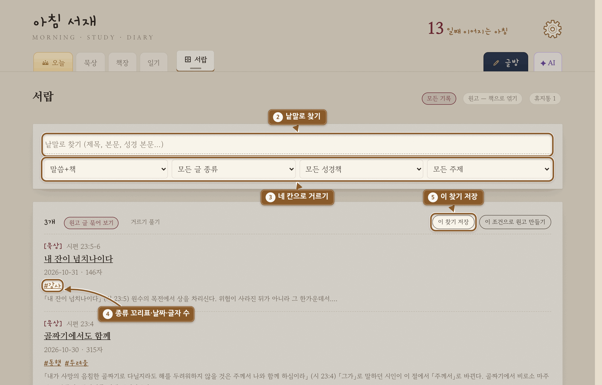
서랍에는 실제로 쓴 글만 보입니다. 밑줄은 오늘 화면, 일기장, 책장에서 봅니다.
사용법 — 원고별 묶음
- 「원고 글 묶어 보기」를 켜면 원고에 든 글이 원고마다 한 줄로 묶입니다.
- 「목차 열기」로 그 원고로 가고, 「낱장으로 펼치기」로 한 편씩 펼칩니다.
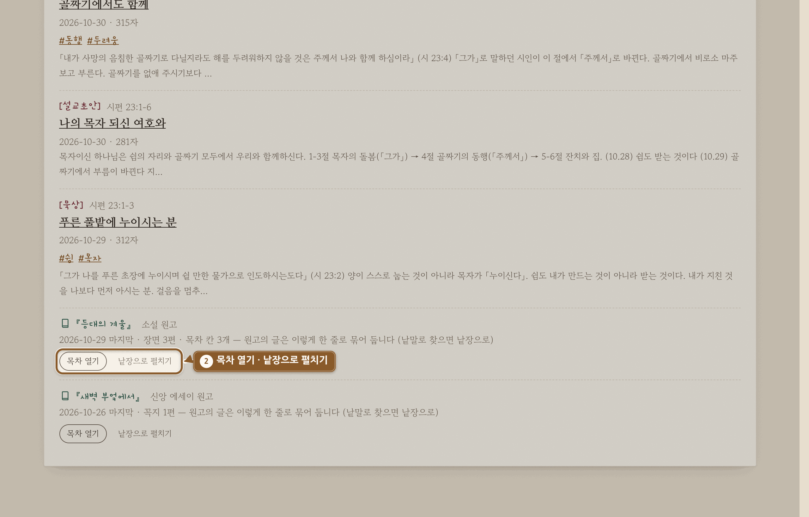
그림 2-16 「원고 글 묶어 보기」를 켜면 원고에 든 글이 원고마다 한 줄로 묶입니다. - 낱말로 찾을 때는 저절로 낱장으로 보입니다.
- 거른 조건 그대로 「이 조건으로 원고 만들기」를 누르면 맞는 글이 저절로 모이는 원고가 생깁니다.
- 「원고 — 책으로 엮기」에서는 원고 목록을 보고 새 원고를 만듭니다. 원고 다루는 법은 글방 부분에서 자세히 다룹니다.
사용법 — 휴지통
- 「휴지통」을 누릅니다. 지운 글과 원고가 30일 동안 남습니다.
- 글마다 「N일 뒤 완전히 지워짐」이 보입니다.
- 「되살리기」를 누르면 서랍·달력·노션에 다시 나타납니다.
- 「완전히 지우기」는 되살릴 수 없습니다. 다른 기기에서도 사라집니다.
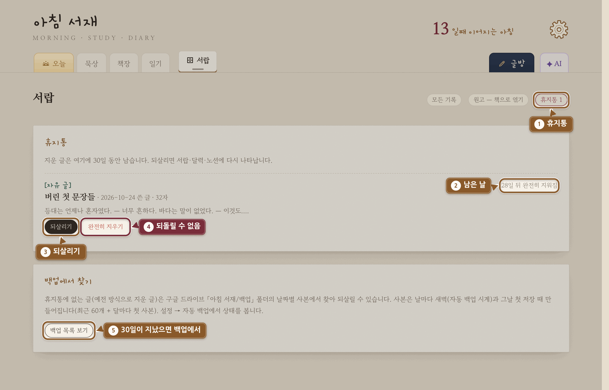
「다시 만난 생각」의 가치
몽테뉴는 자기 『수상록』을 평생 다시 읽으며 여백에 덧붙여 썼습니다. 처음 쓴 생각과 나중의 생각이 한 쪽에서 만났고, 그 겹침이 책을 깊게 했습니다.
독일 사회학자 니클라스 루만은 메모 상자(체텔카스텐)로 유명합니다. 메모를 서로 이어 두니, 오래전 메모가 새 생각과 만나 글이 되었다고 합니다.
이 앱도 그 만남을 돕습니다. 글방의 「✺ 다시 만난 생각」은 요즘(45일 안) 쓴 글이 두 달 넘게 지난 글과 같은 것을 붙잡고 있을 때 둘을 나란히 보여 줍니다. 같은 주제, 낱말, 성경 책, 노트 이름으로 잇습니다. 오늘 화면의 「다시 만나는 밑줄」「1년 전 오늘의 나」도 같은 뜻입니다.
서랍은 그 만남을 직접 찾아가는 곳입니다. 같은 주제로 걸러 보면, 내가 몇 해째 같은 질문을 붙들고 있었음을 알게 됩니다.
작가에게 왜 필요한가
책 한 권은 어느 날 갑자기 생기지 않습니다. 흩어진 묵상, 일기, 밑줄에서 되풀이되는 생각이 모여 한 권이 됩니다.
서랍에서 한 주제로 걸러 보세요. 그 글들이 이미 한 권의 차례처럼 보일 때가 있습니다. 「이 조건으로 원고 만들기」는 바로 그때를 위한 단추입니다. 다시 만난 생각이 글이 되는 길이 여기서 시작됩니다.
기대 효과
- 몇 달 전에 쓴 글도 낱말 하나로 찾습니다.
- 내 글의 주제가 무엇에 몰려 있는지 보입니다.
- 실수로 지운 글을 30일 안에 되찾습니다.
- 흩어진 글이 원고로 엮일 길이 보입니다.
!주의글을 목록에서 그냥 빼지 않고 휴지통에 넣는 까닭이 있습니다. 다른 기기의 사본과 합칠 때 지운 글이 되살아나지 않게 하려는 것입니다. 원본은 구글 드라이브의 기록 파일이고, 이 기기는 보조입니다.
3부글방 — 원고를 짓는 작업실
글방은 한 권의 원고를 처음부터 끝까지 짓는 방입니다. 묵상이 아침의 공책이라면, 글방은 책상과 서랍이 있는 작업실입니다. 설교집·에세이·소설·시집·논문까지 여러 원고를 나란히 두고 씁니다.
먼저 저장 원칙을 기억해 두세요. 원본은 구글 드라이브의 기록 파일이고, 이 기기는 보조입니다. 손을 3초 쉬면 저절로 간직되고, 지운 것은 휴지통에 30일 남습니다. 노션에는 묵상만 저절로 갑니다. 글방 글은 「보내기」를 눌러야 갑니다.
글방에 들어가기
글방의 문간입니다. 여러 원고를 한눈에 보고, 오늘 쓸 원고로 들어가는 자리입니다.
들어가는 길
- 위 메뉴 맨 오른쪽 「글방」을 누릅니다. 오늘 화면의 「글방으로」 단추도 같은 곳으로 갑니다.
- 들어오면 「글방」 단추가 금빛으로 켜집니다.
- PC에서는 오늘·묵상·일기·서랍·책장 탭이 흐리게 물러납니다. 다른 방에 들어왔다는 표시입니다.
- 처음 보이는 화면은 「글방 홈」입니다.
글방 홈
글방 홈은 모든 원고를 아우르는 첫 화면입니다.
- 맨 위 바로가기 카드: 「새 꼭지」(원고 성격에 따라 「새 장면」「새 설교」처럼 바뀜), 「자유 글」, 「새 메모」, 「목차 카드」, 「새 원고」
- 다시 만난 생각: 오늘의 글과 오래전 글이 같은 것을 붙잡았을 때 한 줄로 알려 줍니다.
- 최근에 연 글: 처음 6개가 보이고, 「더 보기」로 12개까지 봅니다. 카드마다 『원고』 › 장 자리가 적힙니다.
- 목표 · 마감: 원고마다 몇 % 썼는지, 마감까지 며칠(D-날)인지 보입니다.
- 메모: 지금 고른 원고의 포스트잇이 모입니다.
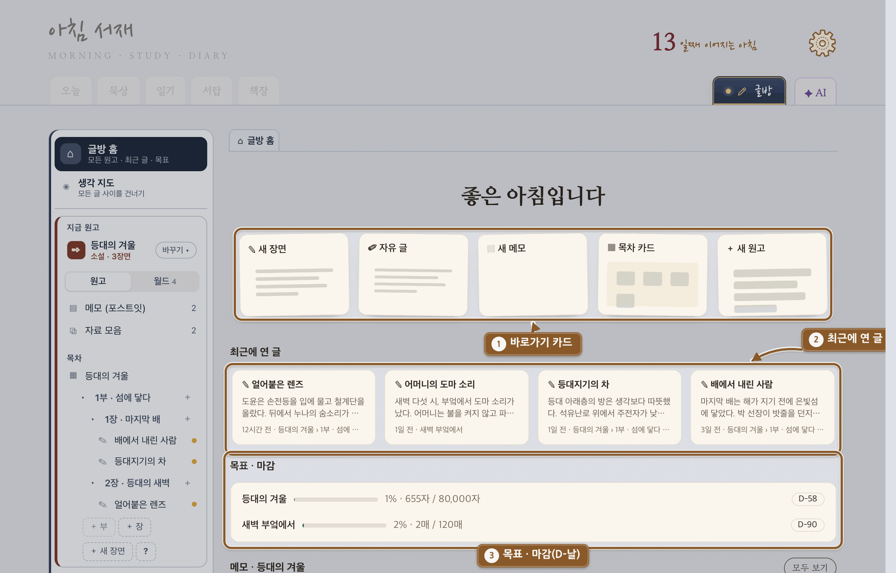
새 원고 만들기
- 글방 홈의 「새 원고」(또는 왼쪽 칸의 「＋ 새 원고」)를 누릅니다.
- 성격 카드 일곱 가지 가운데 하나를 고릅니다(다음 장의 표 참고).
- 가제를 적고 「원고 만들기」를 누릅니다.
- 카드를 두 번 누르면 바로 만들어집니다. 가제가 비어 있으면 가제만 묻습니다.
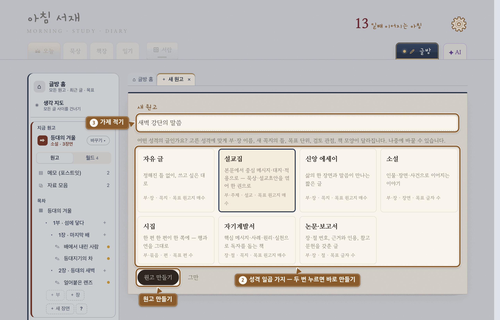
가제를 적어 둔 채 다른 화면으로 가도 원고는 저절로 만들어집니다.
왼쪽 칸의 세 단계
왼쪽 칸은 위에서 아래로 넓은 것에서 좁은 것으로 놓여 있습니다.
| 단계 | 들어 있는 것 | 다루는 범위 |
|---|---|---|
| ① 글방 전체 | 「⌂ 글방 홈」, 「✺ 생각 지도」 | 모든 원고, 모든 글 |
| ② 지금 원고 상자 | 원고 고르기(「바꾸기 ▾」), 「원고 | 월드」 탭, 메모·자료 모음·목차 | 지금 고른 원고 하나 |
| ③ 공통 | 「◎ 말씀 노트」, 끄적이기, 휴지통·서랍·설정 | 원고 밖 |
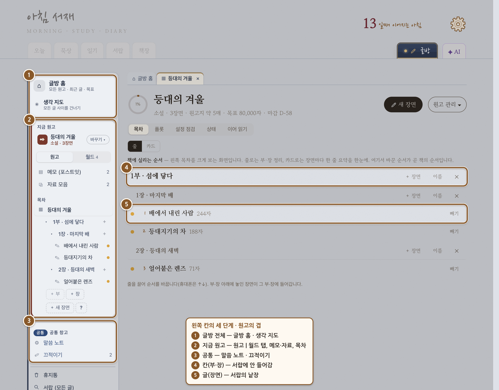
지금 원고 상자의 왼쪽 띠 색과 아이콘이 원고 성격을 알려 줍니다. 예를 들어 ✝는 설교집, ✒는 소설, §는 논문입니다. 소설이 아닌 원고에서는 「월드」 탭 대신 「노트」 탭이 보입니다.
생각 지도
생각 지도는 묵상·설교·글방 글·일기·밑줄을 생각으로 잇는 그림입니다.
- 왼쪽 칸의 「✺ 생각 지도」를 누릅니다.
- 한 생각이 가운데에, 가까운 생각 10개가 둘레에 놓입니다. 선 위에는 둘을 이어 준 낱말이 적힙니다.
- 둘레의 생각을 누르면 그 생각이 가운데로 옵니다. 그렇게 계속 건너갑니다.
- 낱말 칩을 누르면 「○○이 지나간 길」이 시간 순으로 보입니다.
- 위 알약(「최근 3달」 등)으로 살펴볼 기간을 고릅니다.
- 붙잡을 생각이 있으면 「메모로 남기기」로 지금 원고의 포스트잇에 붙입니다.
탭 줄
- 「글방 홈」 탭은 늘 맨 앞에 있습니다. 그 뒤로 최근에 연 글 5개까지 탭이 붙습니다.
- 넘치면 가장 오래 안 본 탭부터 닫힙니다.
- 쓰다 만 새 글은 「✎ 제목 (쓰던 글)」 탭으로 남습니다. 누르면 이어 씁니다.
- 원고를 바꾸면 그 원고에서 열어 두었던 탭들이 돌아옵니다.
- 원고를 휴지통에 넣으면 그 원고의 탭도 함께 닫힙니다.
오래 쓰는 작가의 책상은 하나뿐입니다. 서랍은 많아도, 책상 위에는 지금 원고만 올라옵니다. 글방의 왼쪽 칸이 넓은 것에서 좁은 것으로 놓인 까닭이 여기 있습니다. 글방 전체를 둘러본 뒤, 오늘 쓸 원고 하나로 내려앉게 합니다. 생각 지도는 옛 작가들의 비망록 전통과 닿아 있습니다. 읽고 베낀 것을 다시 읽다가 새 글감을 얻는 습관입니다. 한 사람이 평생 붙드는 주제는 생각보다 적습니다. 「다시 만난 생각」은 그 주제가 돌아오는 순간을 보여 줍니다. 그 반복을 알아보는 것이 자기 책의 뼈대를 찾는 일입니다.
기대 효과
- 원고가 여럿이어도 오늘 이어 쓸 곳을 홈에서 바로 찾습니다.
- 목표와 마감이 눈앞에 있어 원고가 서랍에서 잊히지 않습니다.
- 흩어진 묵상과 일기에서 책 한 권의 주제가 드러납니다.
작은 팁
- 휴대폰에서는 원고 머리의 「바꾸기 ▾」로 원고를 바꿉니다.
- 화면이 넓은 PC(1300px 이상)에서는 글방 화면이 저절로 넓어집니다.
원고의 세 겹 — 칸·글·소제목
원고를 「칸 → 글 → 소제목」 세 겹으로 쌓는 법입니다. 책의 뼈대를 세우는 자리입니다.
세 겹이 무엇인가
| 겹 | 예 | 서랍에서 | 만드는 법 |
|---|---|---|---|
| 칸 | 부·장·주제·묶음 | 들어가지 않음(칸막이) | 「＋ 부」, 「＋ 장」 |
| 글 | 꼭지·장면·절·설교·편 | 낱장 한 장 | 「＋ 새 꼭지」 |
| 소제목 | 글 안의 ■ 줄(항·대지) | 글에 포함 | 줄 앞에 ■ |
칸은 글이 아니라 칸막이입니다. 번호와 차례만 만듭니다. 글 하나는 한 번에 앉아 쓰고, 통째로 옮길 수 있는 덩어리입니다. 그보다 작은 단위는 ■ 소제목으로 씁니다. 문단마다 글을 쪼개지 않습니다.
원고 성격 일곱 가지
원고를 만들 때 고른 성격에 따라 이름과 단위가 바뀝니다. 나중에 「원고 관리 ▾」 → 원고 정보 → 「성격」에서 바꿀 수 있습니다.
| 성격 | 칸 이름 | 글 이름 | 분량 단위 | 목차 번호 기본 |
|---|---|---|---|---|
| 자유 글 | 부·장 | 꼭지 | 매(원고지) | 책 |
| 설교집 | 부·주제 | 설교 | 매 | 책 |
| 신앙 에세이 | 부·장 | 꼭지 | 매 | 간단히 |
| 소설 | 부·장 | 장면(웹소설 연재면 「화」) | 자 | 책 |
| 시집 | 부·묶음 | 편 | 편 | 책 |
| 자기계발서 | 장·절 | 꼭지 | 매 | 간단히 |
| 논문·보고서 | 부·장 | 절 | 자 | 논문식 |
칸과 글 만들기
- 왼쪽 목차 아래 「＋ 부 · ＋ 장 · ＋ 새 꼭지 · ?」 단추를 씁니다. 큰 단위부터 놓여 있습니다.
- 그 성격에서 잘 안 쓰는 칸 단추는 옅게 보입니다(예: 논문의 「부」).
- 장 줄의 ＋를 누르면 그 장 끝에 새 글이 생깁니다.
- 새 글은 누르는 즉시 목차에 들어갑니다. 아무것도 쓰지 않고 떠나면 저절로 지워집니다.
- 써 둔 글을 넣으려면 「원고 관리 ▾」 → 「＋ 써 둔 글 넣기…」를 고릅니다.
목차 끌어 옮기기
- PC에서는 목차 줄을 그대로 끌어 놓습니다. 휴대폰에서는 ⋮⋮ 손잡이를 잡고 끕니다.
- 장 줄의 아래쪽에 놓으면 그 장 안 맨 앞으로 들어갑니다.
- 장을 끌면 안에 든 글이 함께 갑니다.
- PC에서 장 줄을 오른쪽 버튼으로 누르면 「이름 바꾸기」 「이 칸에 새 글」 「단계 바꾸기」 「구분 지우기」가 나옵니다.
■ 소제목과 항 개요
- 글 안에서 줄 앞에 ■를 두면 소제목이 됩니다. 문서 모드에서는 「■ 소제목」 단추로 넣고 풉니다.
- 지금 쓰는 글의 소제목이 왼쪽 목차의 그 글 아래에 작게 보입니다.
- 누르면 그 줄로 바로 갑니다.
- 틀에서 온 길잡이 소제목은 옅게 보이고, 내보낼 때 빠집니다.
나누기·합치기
- 너무 긴 글은 커서를 나눌 자리에 두고 「쓰기 ▾」 → 「커서에서 나누기」를 누릅니다. 커서 줄부터 새 글이 됩니다.
- 커서가 ■ 소제목 줄에 있으면, 그 이름이 새 글의 제목이 됩니다.
- 짧은 글이 이어지면 「쓰기 ▾」 → 「⊕ 다음 글과 합치기」를 누릅니다.
- 다음 글의 제목은 ■ 소제목으로 들어오고, 원래 글은 휴지통으로 갑니다. 장의 경계는 넘지 않습니다.
- 「2장」처럼 칸을 글로 잘못 만들었으면, 그 빈 글을 오른쪽 버튼(휴대폰은 길게) → 「장 칸으로 바꾸기」(칸 이름은 성격마다 다름).
성격마다 알맞은 길이가 있습니다. 예를 들어 논문의 절은 1,500~6,000자, 설교는 3,000~12,000자입니다. 상한의 1.5배를 넘으면 목차에 ✂ 표시가 뜹니다. 목차 아래 「?」를 누르면 「목차를 나누는 원칙」 창이 열립니다.
목차 번호
- 「원고 관리 ▾」 → 원고 정보 → 「목차 번호」를 엽니다.
- 넷 가운데 고릅니다.
- 논문식: 제1부 · Ⅰ. · 1. · 1)
- 책: 제1부 · 제1장
- 간단히: 1부 · 1장
- 번호 없음
- 왼쪽 목차·원고 목차·PDF·워드·마크다운에 같은 번호가 붙습니다.
머리말·프롤로그·에필로그·감사의 글·부록 같은 앞뒤 글에는 번호를 매기지 않습니다. 제목에 「1부」「Ⅲ.」처럼 번호를 직접 적었으면 번호를 덧붙이지 않습니다.
초고가 끝까지 가지 못하는 가장 흔한 까닭은 「단위가 너무 크다」는 것입니다. 「책을 쓴다」는 막막하지만, 「오늘 이 꼭지 하나」는 할 만합니다. 스크리브너가 장면·절 하나를 문서 하나로 두는 것도 같은 지혜입니다. 오늘 앉아서 끝낼 수 있는 크기로 글을 자르면, 날마다 하나씩 마침표를 찍게 됩니다. 칸과 글을 나눠 두면 또 하나가 쉬워집니다. 순서를 바꾸는 일입니다. 편집자는 원고를 받으면 차례부터 다시 섞어 봅니다. 끌어 옮기기가 가벼워야 그 실험을 두려워하지 않습니다. 다만 문단마다 쪼개면 흐름이 끊깁니다. 순서를 바꿀 일이 있는 단위까지만 글로 나누고, 그 안은 ■ 소제목으로 잇는 것이 알맞습니다.
기대 효과
- 「오늘 쓸 한 꼭지」가 분명해져, 빈 화면 앞에서 머뭇거리는 시간이 줄어듭니다.
- 차례를 마음껏 바꿔 보며 가장 좋은 흐름을 찾습니다.
- 내보낼 때 번호와 제목 단계가 저절로 맞습니다. 손으로 다시 매길 일이 없습니다.
작은 팁
- 칸은 목차 칸이라 서랍에 낱장으로 생기지 않습니다. 서랍에서는 원고의 글이 원고별로 한 줄에 묶여 보입니다.
- 원고 안 글을 휴지통에 넣어도 차례 자리는 남습니다. 되살리면 제자리로 돌아옵니다.
쓰기 화면
실제로 글을 쓰는 종이입니다. 쓰는 동안 필요한 도구는 위 도구 줄에, 나머지는 메뉴 안에 접혀 있습니다.
도구 줄 한눈에
| 단추 | 하는 일 |
|---|---|
| ↶ ▾ ↷ | 되돌리기 · 지난 걸음 목록 · 다시 실행 |
| 「쓰기 ▾」 | 틀 넣기·설계 카드·피드백·다른 표현·나누기/합치기·타자기·글자 크기·종이 |
| 「다듬기 ▾」 | 문체 점검·피드백·설정 정리·맞춤법·스티커·옆 칸 접기 |
| 「¹ 각주」 | 고른 글 뒤에, 아니면 커서 자리에 각주 달기 |
| 「문서 모드」 | 워드처럼 흰 쪽에 글꼴·크기·줄 간격 정하기 |
| 「⛶ 집중」 | 종이만 남기기 |
| 「읽기 모드」 | 고치지 않고 보기만 |
| 「보내기」 | 노션·PDF·워드 등으로 내보내기 |
| 「✦ AI」 | 글쓰기 도우미 창 열고 닫기 |
| 「간직」 | 지금 간직하기(⌘S) |
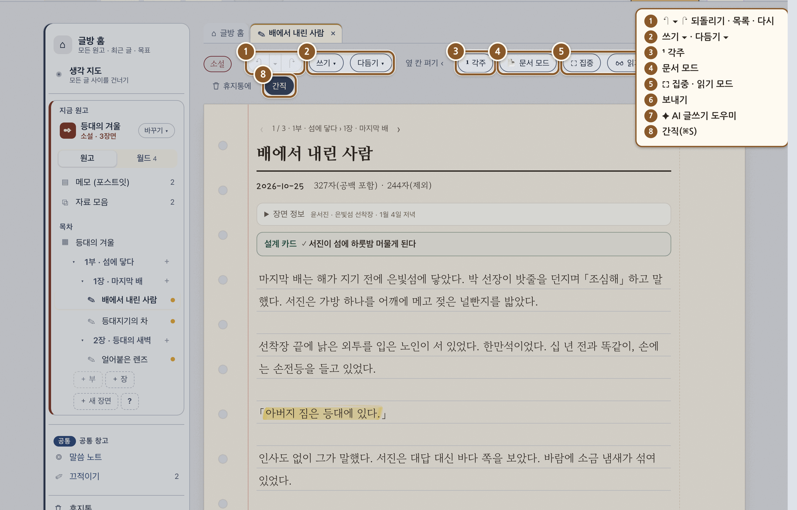
모양째 쓰는 편집기
글쓰기 칸은 워드처럼 꾸민 모양이 그대로 보입니다. 형광펜, 굵게, 기울임, 밑줄, 각주 번호가 기호 없이 보입니다. 붙여 넣으면 바깥 서식은 버리고 글자만 들어옵니다. 바깥에서 붙여 넣은 별표나 등호도 꾸밈으로 바뀌지 않고 글자 그대로 남습니다.
꾸밈 막대
- 꾸밀 글자를 고릅니다. 마우스로 끌거나, ⇧화살표나, 휴대폰에서 눌러 고릅니다.
- 고른 글 위에 꾸밈 막대가 뜹니다(휴대폰은 아래).
- 막대 순서: 형광펜 네 색(노랑·연두·분홍·하늘) → B·I·U → 「¹」(각주) → 「꾸밈 지우개」 → 「✦ 다듬기」·「말투」.
- 이미 칠한 곳을 고르고 같은 색을 한 번 더 누르면 형광펜이 지워집니다. 밑줄도 같습니다.
- 「꾸밈 지우개」는 고른 곳의 형광펜·밑줄·굵게·기울임을 모두 지웁니다. 글은 그대로입니다.
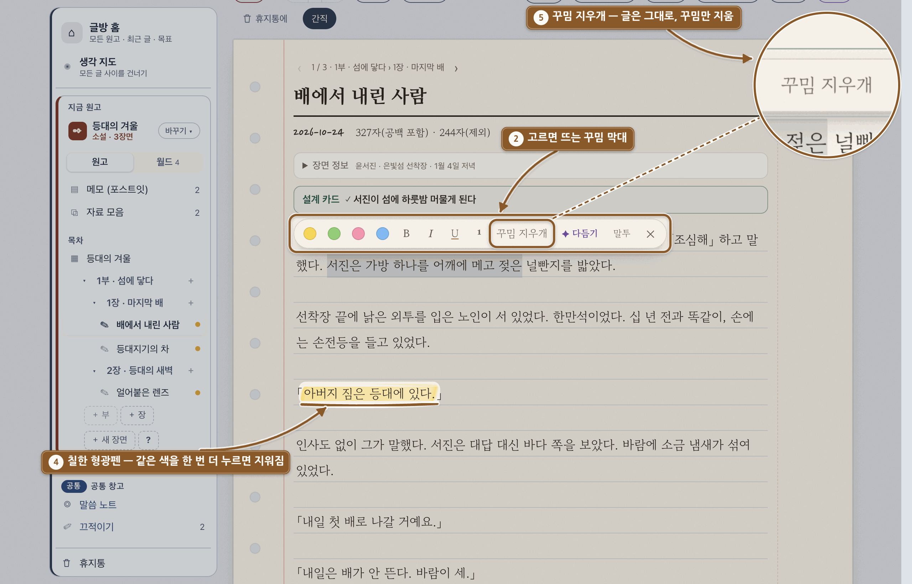
그림 3-5 글자를 고르면 그 위에 꾸밈 막대가 뜹니다. 형광펜 네 색 → B·I·U → 각주 → 꾸밈 지우개 → ✦ 다듬기·말투 순서입니다. - 단축키: ⌘B 굵게, ⌘I 기울임, ⌘U 밑줄. 모든 글 칸에서 같습니다.
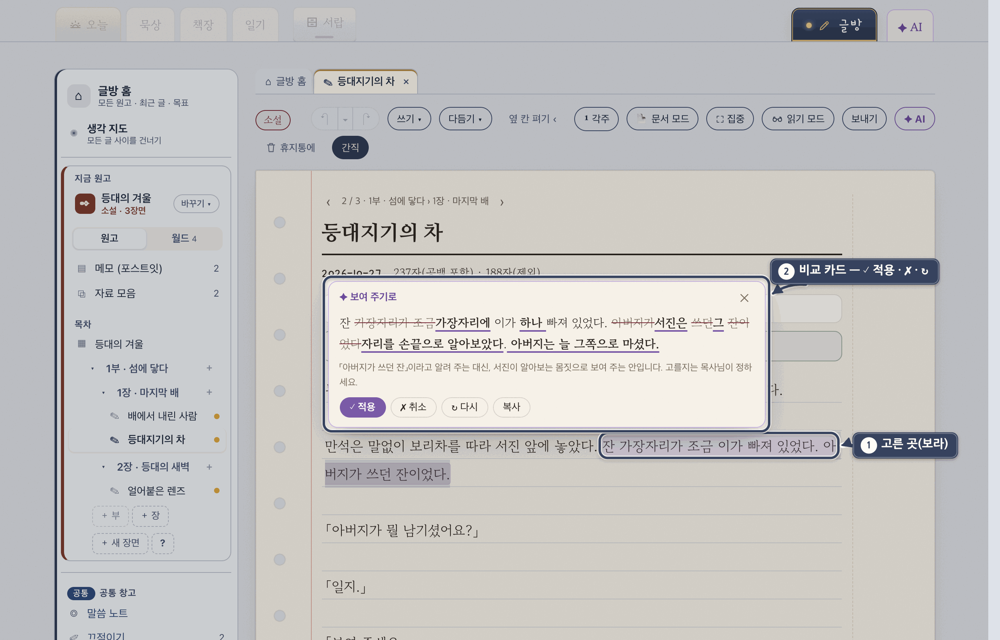
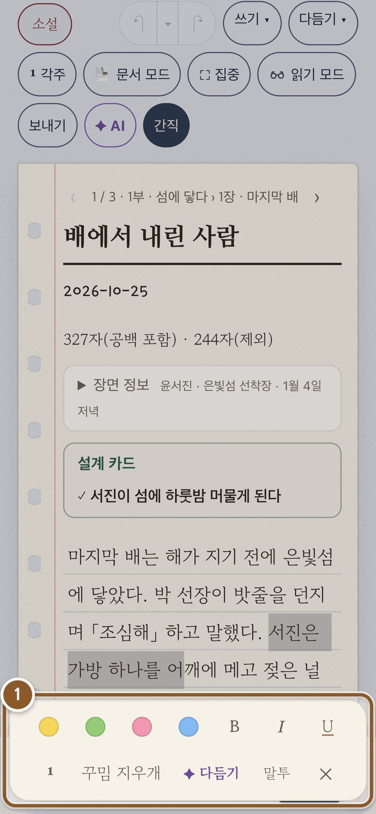
형광펜은 크레파스로 칠한 모양입니다. 화면·읽기·PDF·인쇄 어디서나 같은 모양입니다.
각주·미주
- 각주를 달 글을 고르거나 커서를 둡니다.
- 도구 줄 「¹ 각주」, 꾸밈 막대 「¹」, 또는 ⌘⇧F를 누릅니다.
- 상자에 내용을 적고 「달기」를 누릅니다.
- 미주로 하려면 상자에서 「미주 원고 끝」을 고르거나 ⌘⇧E를 누릅니다(기본은 「각주 쪽 아래」).
- 본문의 각주 번호를 누르면 「각주 고치기」 상자가 열립니다. 고치거나 「지우기」로 뗍니다.
각주는 종이 아래에 「각주」 목록으로 모입니다. 미주는 i, ii로 매겨 원고 끝에 모입니다. 번호는 원고 전체에서 이어 매깁니다.
되돌리기 ↶ ▾ ↷
- 「↶」 또는 ⌘Z로 한 걸음 되돌립니다.
- 「↷」 또는 ⇧⌘Z·⌘Y로 다시 실행합니다.
- 「▾」를 누르면 최근 25걸음이 이름과 함께 보입니다. 고른 데까지 한꺼번에 되돌립니다.
- AI 제안을 적용하거나 틀을 넣은 것도 이름 붙은 한 걸음으로 남습니다.
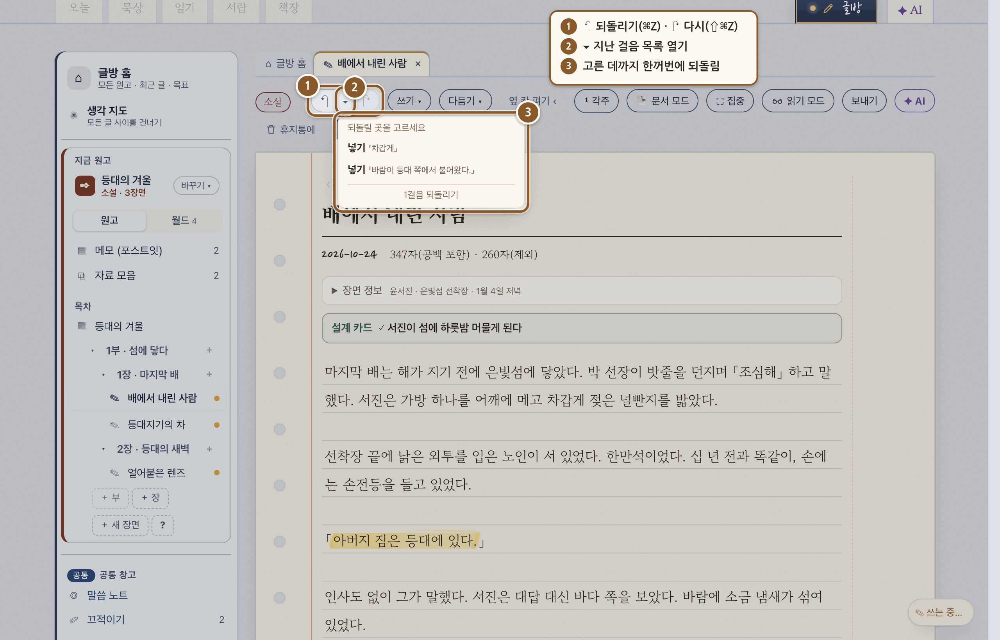
되돌리기 기록은 글마다 이 기기 안에만 있습니다. 새로 고치면 비워집니다.
자동 간직
- 손을 3초 쉬면 저절로 간직됩니다.
- 글 머리에 「✎ 쓰는 중…」이 「✓ 간직됨 시각」으로 바뀝니다.
- 다른 글·화면으로 옮기거나 앱을 내려도 간직됩니다.
- 바로 간직하려면 「간직」이나 ⌘S를 누릅니다.
글을 고치면 직전 모습이 「이전 판」으로 3개까지 남습니다. 곁 칸에서 다시 불러올 수 있습니다.
문서 모드
- 도구 줄 「문서 모드」를 누릅니다. 다시 누르면(「✎ 노트로」) 돌아옵니다.
- 종이 위에 서식 막대가 붙습니다.
- 글꼴: 고운 바탕·나눔명조·고딕·Noto Serif·Georgia
- 크기: 9~18pt / 줄 간격: 1~2.5
- 정렬: 왼쪽·양쪽·가운데
- 첫 줄 들여쓰기, 문단 간격
- B·I, 「■ 소제목」, 형광펜, 밑줄, 각주
- 「쪽: A4 세로 · 넓게 · A4 가로 · 화면 가득」
- 「종이: 흰 쪽 · 노트 · 원고지」
- 확대(75~150%)
- 원고에 든 글이면 그 모양이 원고 전체에 적용됩니다. 워드·PDF로 내보낼 때도 같은 모양입니다.
- 들여쓰기와 문단 간격은 「쪽 미리보기」와 내보내기에서 보입니다.
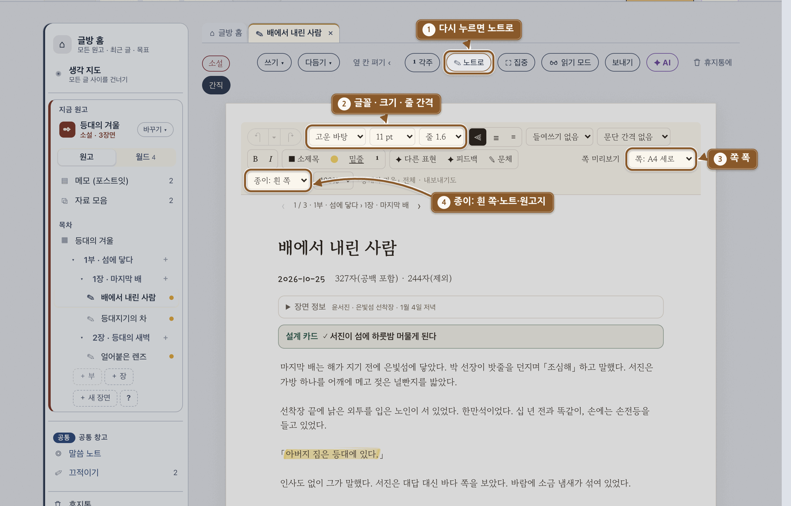
쪽 폭·종이·확대는 이 기기 화면에서만 바뀝니다. 기록 파일은 그대로입니다.
원고지
- 문서 모드에서 「종이: 원고지」를 고릅니다.
- 한 자가 한 칸에 들어갑니다. 띄어쓰기와 문장부호도 한 칸입니다.
- 칸을 누르면 그 자리에 커서가 갑니다. 커서는 깜박이며 칸을 따라갑니다.
- 원고지를 가로로 놓고 쓰려면 「쪽: A4 가로」를 고릅니다. 쪽이 넓어질수록 한 줄의 칸 수가 늘어납니다.
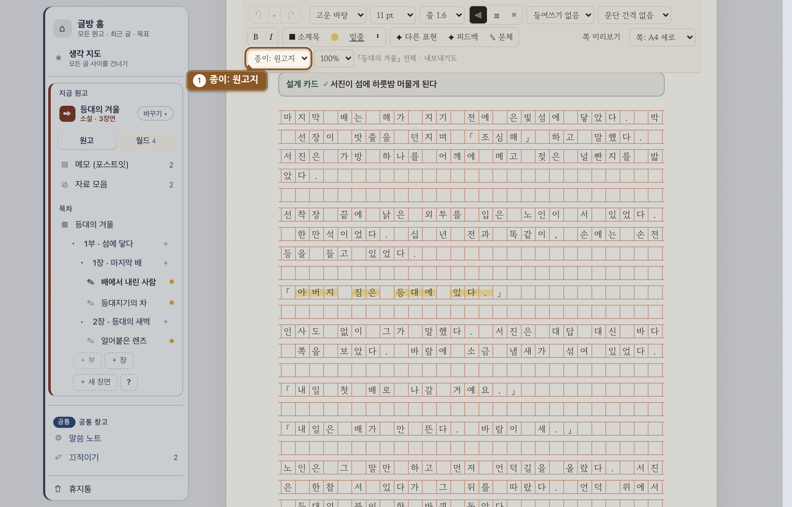
분량에 보이는 「원고지 약 ○매」는 200자 원고지(20칸×10줄) 기준입니다. 매수를 셀 때는 원고지 쓰는 법을 따릅니다. 문단 첫 칸을 비우고, 줄 첫 칸의 띄어쓰기는 생략합니다.
⛶ 집중 모드
- 도구 줄 「⛶ 집중」을 누릅니다.
- 종이 한 장만 화면 가운데에 남고 모든 메뉴가 숨습니다. 화면도 전체 화면이 됩니다.
- 나가려면 오른쪽 위 옅은 ✕(「집중 나가기」)를 누르거나 Esc를 누릅니다.
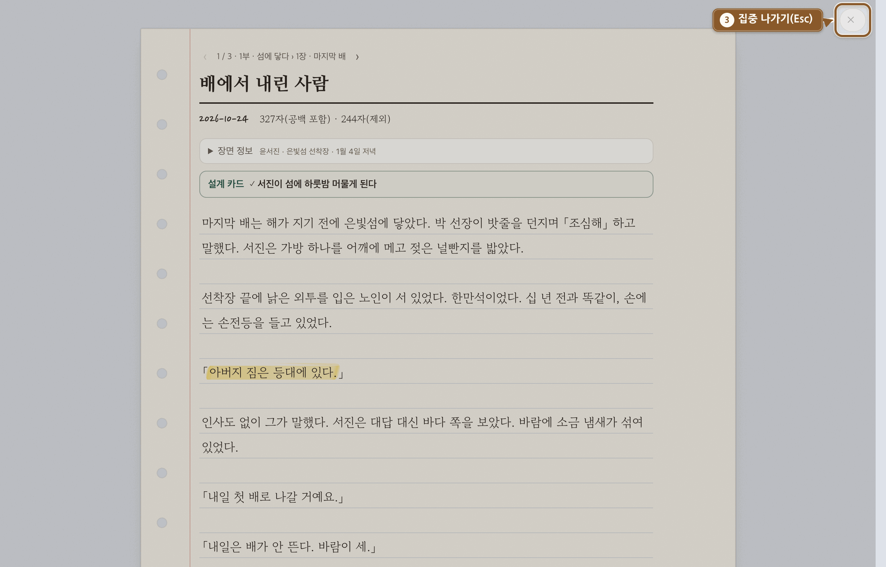
집중 중에도 자동 간직과 ⌘S는 그대로입니다.
타자기
- 「쓰기 ▾」를 엽니다.
- 「타자기」 스위치를 누릅니다. 초록으로 「켬」이 보이면 켜진 것입니다.
- 쓰는 줄이 늘 화면 가운데에 머뭅니다. 글이 길어져도 눈높이가 그대로입니다.
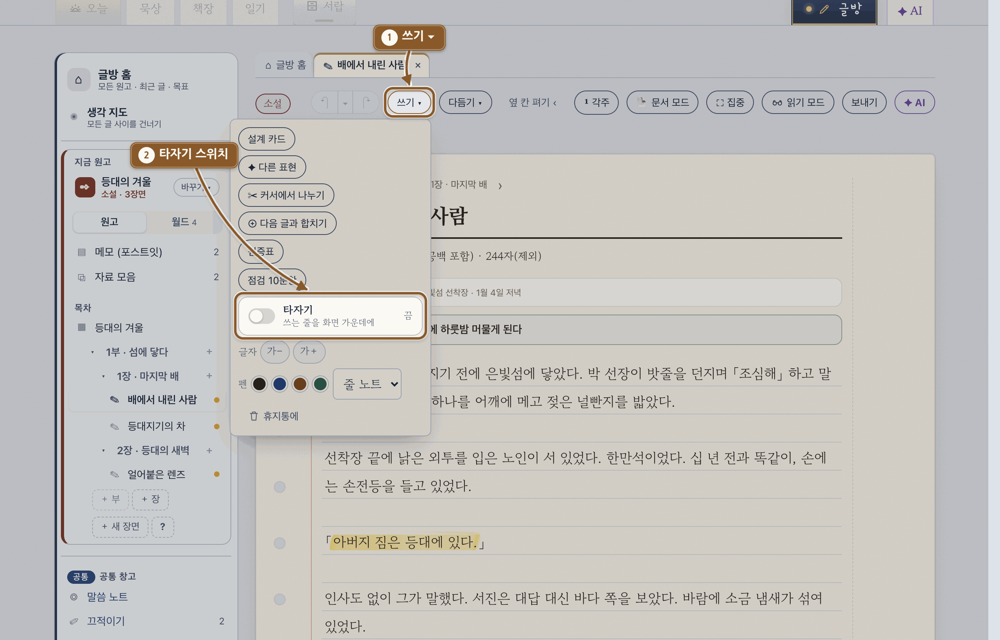
읽기 모드와 쪽 미리보기
- 「읽기 모드」는 글을 건드리지 않고 보기만 합니다. 설교문은 강단용 모양으로 보입니다.
- 문서 모드의 「쪽 미리보기」는 들여쓰기·문단 간격까지 쪽 모양으로 보여 줍니다.
좋은 작가들은 초고를 쓰는 손과 고치는 손을 나눕니다. 쓰는 동안 고치기 시작하면 문장은 매끄러워져도 글은 앞으로 나가지 않습니다. 그래서 이 쓰기 화면은 쓰는 일만 앞에 두고, 다듬는 도구는 메뉴 안에 접어 두었습니다. 집중 모드는 그 생각을 끝까지 밀고 간 것입니다. 원고지에는 우리 글쓰기의 오랜 훈련이 담겨 있습니다. 한 칸에 한 자를 놓으면 문장의 호흡과 분량이 몸으로 느껴집니다. 매수로 세는 습관은 원고를 청탁받고 넘기는 출판의 언어이기도 합니다. 자동 간직과 되돌리기는 두려움을 덜어 줍니다. 잃을 걱정이 없어야 과감하게 지우고 다시 씁니다.
기대 효과
- 꾸밈 기호에 눈이 걸리지 않아 글 자체에 머뭅니다.
- 원고지·노트·흰 쪽 가운데 손에 맞는 종이로 씁니다.
- 끝까지 쓴 뒤 고치는 리듬이 몸에 붙습니다.
- 글을 날릴 걱정 없이 마음껏 고쳐 봅니다.
작은 팁
- AI가 넣은 글이 남아 있으면 글 머리에 「✦ AI 도움 n곳」이 뜹니다. 누르면 그 자리를 옅은 보라로 보여 줍니다. 읽는 사람과 내보내기에는 보이지 않습니다.
- 「쓰기 ▾」의 「틀 넣기」는 원고 성격에 맞는 틀을 넣습니다. 소설·시처럼 틀이 없는 성격에서는 보이지 않습니다.
- 휴대폰에서는 입력 칸 글자가 16px 이상이라 화면이 저절로 확대되지 않습니다.
메모·자료 모음·노트·월드
원고의 창고들입니다. 내 생각은 메모에, 바깥 근거는 자료 모음에, 인물과 개념은 노트에, 이야기 세계는 월드에 둡니다.
| 창고 | 무엇을 | 자리 |
|---|---|---|
| 메모 | 떠오른 생각·고칠 곳·할 일 | 왼쪽 칸 → 원고 탭 → 「메모 (포스트잇)」 |
| 자료 모음 | 출처가 있는 바깥 근거 | 왼쪽 칸 → 원고 탭 → 「자료 모음」 |
| 노트 | 인물·장소·용어·개념 | 왼쪽 칸 → 「노트」 탭 |
| 월드 | 소설의 세계 전체 | 왼쪽 칸 → 「월드」 탭(소설만) |
포스트잇 메모
- 「메모 (포스트잇)」를 열거나 글방 홈 「새 메모」를 누릅니다.
- 한 줄 적고 붙입니다.
- 메모마다 「✓」(다 씀), 「●」(색 바꾸기), 「→ 꼭지」(새 꼭지로 키우기), 「×」(떼기)가 있습니다.
- 「→ 꼭지」를 누르면 그 메모로 새 글이 시작됩니다.
자료 모음과 인용·각주 넣기
- 「자료 모음」 화면에서 「＋ 자료」를 누릅니다(단축키 N).
- 종류·제목·내용(원문)·저자·연도·쪽·주소·태그·확인 여부·내 생각을 적습니다.
- ⌘S로 간직하고, Esc로 간직하며 닫습니다.
- 쓰는 화면 곁 칸 「자료」에서 자료를 꺼내 씁니다.
- 「인용+각주」: 원문을 인용 부호로 넣고, 각주에 출처를 답니다.
- 「각주만」: 출처만 각주로 답니다.
- 「내용만」: 글만 넣습니다.
- 넣은 자료에는 「쓰인 곳」이 저절로 이어집니다. 문헌은 내보낼 때 참고 문헌에 들어갑니다.
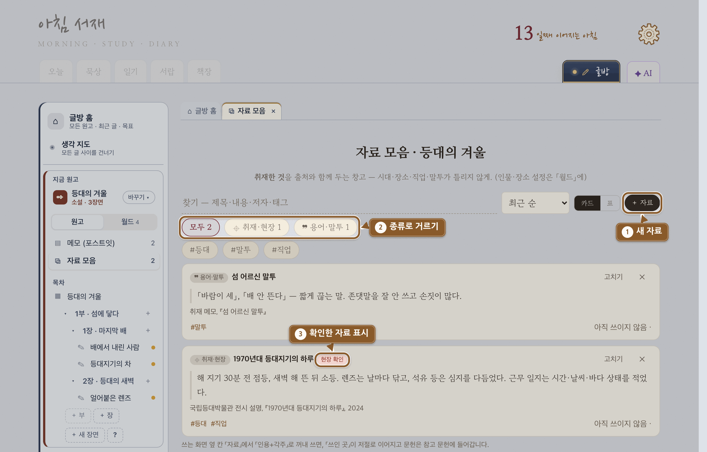
자료 종류는 원고 성격마다 다릅니다. 소설은 취재·현장·시대·배경, 논문은 1차 자료·선행 연구, 설교집은 주석·해설·예화 같은 식입니다. 화면은 카드 보기와 표 보기로 바꿔 봅니다. 찾기·종류·태그·정렬로 거릅니다.
노트(인물·주제)
- 왼쪽 칸 「노트」(소설은 「월드」) 탭을 엽니다.
- 새 항목을 만들고 이름과 종류를 정합니다. 그 종류의 기본 칸이 펼쳐집니다.
- 칸을 채우면 3초 뒤 저절로 간직됩니다. ⌘S, Esc(간직하고 닫기)도 됩니다.
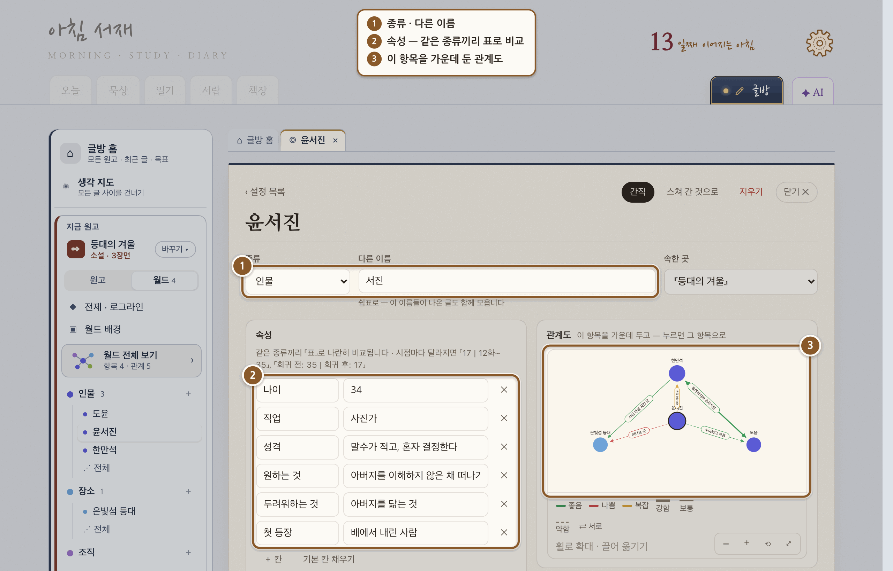
노트 모양은 원고 성격마다 다릅니다. 논문은 용어·학자·문헌, 설교집은 인물·지명·용어·예화, 에세이는 사람·장면·기억입니다. 노트는 원고마다 따로 둡니다. 다른 원고와 섞이지 않습니다. 원고 밖 묵상이 함께 쓰는 공통 창고는 「◎ 말씀 노트」입니다. 원고에서 쓰려면 「⧉ 내 원고로 복사」를 누릅니다.
월드(소설)
소설 원고의 「월드」 탭에는 이야기 세계가 모입니다.
- 「◆ 전제 · 로그라인」: 이 이야기를 한두 문장으로.
- 「▣ 월드 배경」: 시대·장소·세계의 규칙.
- 「월드 전체 보기」: 모든 항목과 관계를 관계도로.
- 종류별 목록(인물·장소·조직·사물·사건·개념): 「＋」로 더하고, 「⋰ 전체」로 그 종류를 크게 봅니다.
- 「월드 정리 규칙」: AI가 설정을 정리할 때 반드시 따를 규칙.
- 「∘ 스쳐 간 것」: 한 번 지나간 행인·가게 같은 이름.
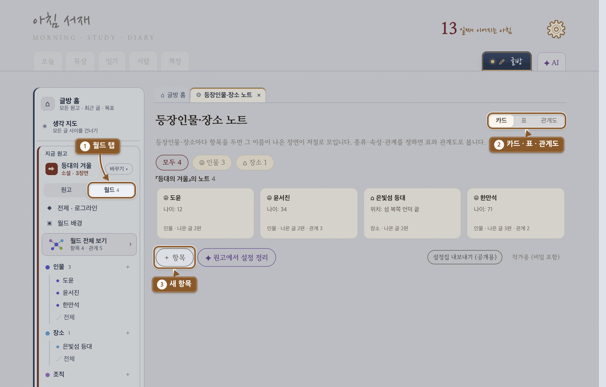
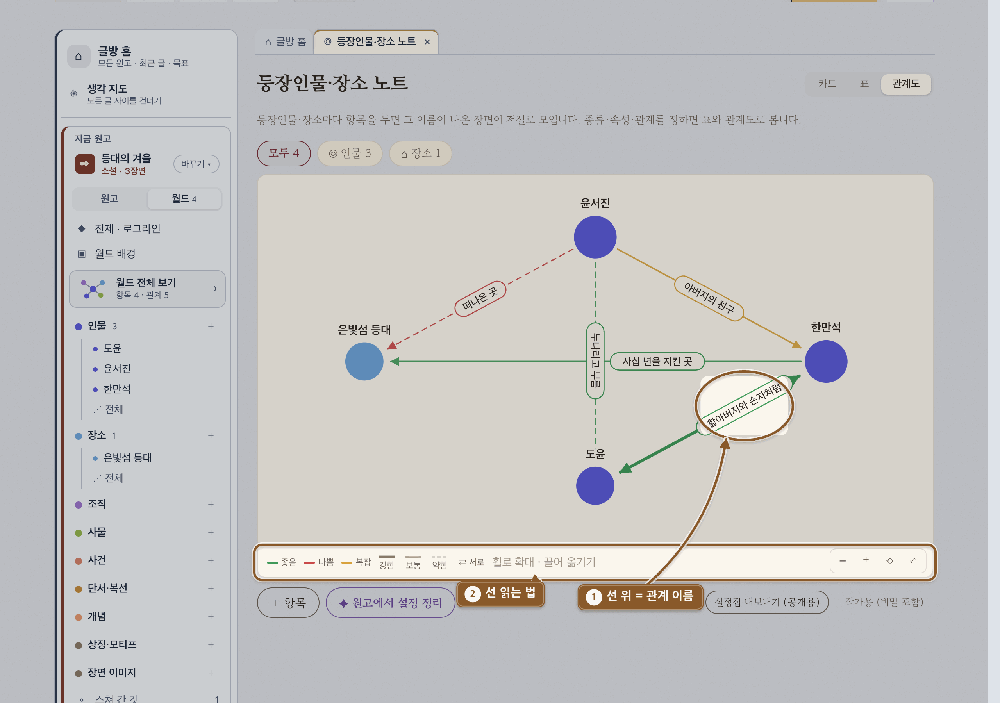
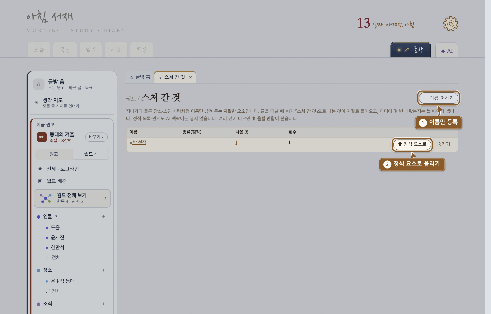
항목에는 속성·비밀(작가만)·관계를 적습니다. 관계도의 선은 색으로 성격(좋음 초록·나쁨 빨강·복잡 노랑·중립 회색), 굵기로 경중, 화살로 방향을 나타냅니다. 휠이나 「＋ −」로 확대하고, 노드를 누르면 작은 카드가 뜹니다.
스쳐 간 것은 이름만 모아 둡니다. 정식 목록과 관계도에는 섞이지 않습니다. 여러 편에 자꾸 나오면 「⬆ 올릴 만함」이 붙습니다. 「⬆ 정식 요소로」로 올립니다.
설정 점검(소설)
- 소설 원고 보기에서 「설정 점검」 탭을 엽니다.
- 등장 지도: 노트 항목이 글마다 몇 번 나왔는지 점으로 보입니다. 한 번도 안 나온 항목, 오래 사라진 항목이 표시됩니다.
- 장면 계획 대조: 장면 정보의 시점 인물·장소가 본문에 있는지 봅니다.
- 복선 회수: 「단서·복선」 노트의 심은 장면과 회수할 장면을 대조합니다.
- 「✦ 설정과 대조」를 누르면 AI가 어긋난 곳을 카드로 짚습니다.
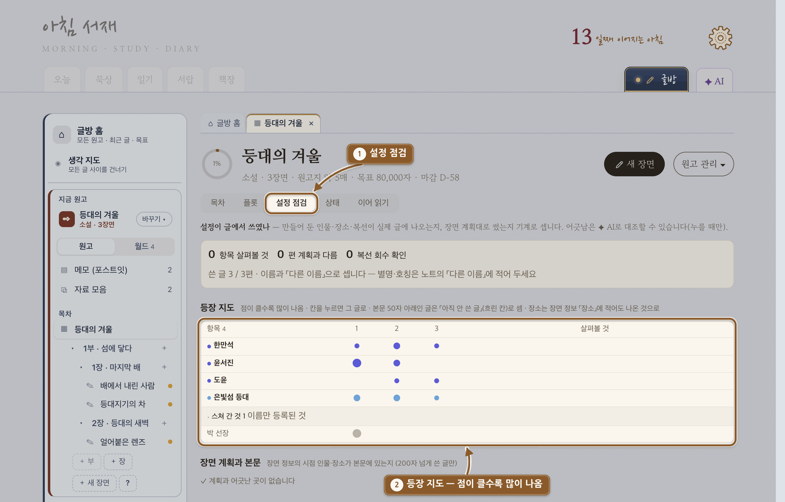
원고가 무너지는 곳은 대개 문장이 아니라 기억입니다. 3장에서 교사였던 인물이 12장에서 등대지기가 되고, 인용한 책의 쪽수가 사라집니다. 그래서 오래 쓰는 작가는 창고를 나눕니다. 내 생각의 씨앗과 바깥의 근거를 섞지 않는 것이 첫째입니다. 섞이면 남의 말이 내 말처럼 들어가는 사고가 납니다. 소설가에게 설정집은 기억을 바깥에 내려놓는 장치입니다. 머리가 기억을 붙들지 않아도 되니, 장면 자체에 몰입할 수 있습니다. 메모는 반대로 가벼워야 합니다. 떠오른 순간 붙여 두지 않으면 사라집니다. 포스트잇 한 장이 다음 꼭지의 첫 줄이 됩니다.
기대 효과
- 인용할 때 출처를 다시 찾는 시간이 사라집니다.
- 인물·설정이 앞뒤로 어긋나는 실수를 쓰는 중에 잡습니다.
- 흘려보낸 생각이 메모로 남아 새 꼭지로 자랍니다.
작은 팁
- 노트 화면에서 다른 항목 이름은 종류 색 링크로 이어집니다.
- 쓰는 중 글 안 인물 이름에 마우스를 올리면 그 항목의 작은 카드가 뜹니다.
원고 보기와 고쳐 읽기
같은 원고를 여러 눈으로 다시 보는 자리입니다. 퇴고는 여기서 시작됩니다.
원고 보기의 탭
원고 이름을 누르면 원고 화면이 열립니다. 위 탭으로 보기를 바꿉니다.
| 탭 | 보는 것 |
|---|---|
| 목차(「줄 | 카드」) | 책에 실리는 순서. 카드로 바꾸면 글마다 한 줄 요약 |
| 플롯(소설) | 이야기의 구조. 장면이 발단·전개… 어느 단계를 맡는지 |
| 설정 점검(소설) | 설정이 글에서 쓰였는지 |
| 상태 | 씨앗 → 초고 → 다듬는 중 → 완성 |
| 이어 읽기 | 원고 전체를 한 장처럼 읽기 |
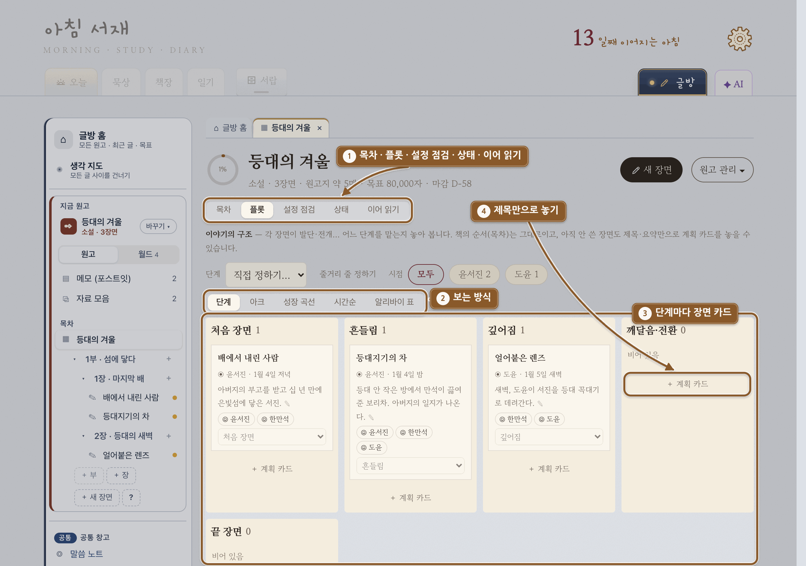
- 「목차」에서 「카드」로 바꾸면 카드를 끌어 순서를 바꿉니다. 왼쪽 목차도 함께 바뀝니다.
- 카드의 ✎로 한 줄 요약을 바로 고칩니다. 요약은 PDF 머리에도 쓰입니다.
- 「플롯」에서는 단계(5단·3막·기승전결·직접 정하기)를 고르고 장면 카드를 단계에 놓습니다. 「＋ 계획 카드」로 아직 안 쓴 장면도 놓습니다.
- 「상태」에서 글마다 진행 단계를 옮깁니다.
이어 읽기와 고치기
- 「이어 읽기」를 엽니다. 원고 전체가 한 흐름으로 이어집니다.
- 고칠 곳에서 「고치기」를 누릅니다. 그 자리에서 고칩니다.
- 고치는 칸에도 꾸밈 막대·되돌리기·「✓ 간직됨」이 있습니다.
- 치는 대로 저절로 간직됩니다. 다른 꼭지로 가도 남습니다.
판 남기기·비교
글 하나의 판과 원고 전체의 판, 두 가지가 있습니다.
글 하나의 「이름 붙인 판」
- 쓰기 화면 곁 칸의 「이름 붙인 판」에서 「지금 판 남기기」를 누릅니다.
- 「출판사 보내기 전」처럼 이름을 붙입니다. 10개까지 남습니다.
- 「지금과 비교」로 바뀐 곳을 낱말 단위로 봅니다. 「이 판으로」로 되돌립니다.
원고 전체의 「원고 판」
- 「원고 관리 ▾」 → 「⧉ 원고 판」을 엽니다.
- 「지금 원고를 판으로 남기기」를 누르고 이름을 붙입니다.
- 판은 드라이브 「아침 서재/원고 판」 폴더에 따로 보관됩니다. 기록 파일을 무겁게 하지 않습니다.
- 지금과 비교하면 글마다 「바뀜·같음·새로·판에만」이 보입니다.
- 글 하나만 되살리거나, 원고 전체를 되살립니다. 전체를 되살리기 전에는 지금 원고가 자동으로 판에 남습니다.
찾아 바꾸기
- 「원고 관리 ▾」 → 「⌕ 찾아 바꾸기」를 엽니다.
- 찾을 말과 바꿀 말을 적습니다. 꼭지마다 몇 번 나오는지, 앞뒤 문장이 보입니다.
- 바꾸지 않을 꼭지는 체크를 뺍니다.
- 바꾸기 전에 원고 판이 저절로 남습니다. 바꾼 뒤에는 「방금 바꾼 것 되돌리기」도 있습니다.
인물 이름을 바꿀 때 특히 쓸모 있습니다.
원고 검토
- 「원고 관리 ▾」 → 「✦ 원고 검토 받기 (AI)」를 누릅니다.
- 부·장이 있는 긴 원고는 「✦ 부·장 골라 검토」로 나눠 받습니다.
- 확인 창에서 글자 수를 보고 보냅니다. 1~2분 걸립니다.
- 원고 전체 평이 원고 화면 아래에, 꼭지마다 짚을 점이 각 글에 남습니다.
퇴고는 다른 사람의 눈을 빌리는 일입니다. 그러나 늘 남이 곁에 있지는 않습니다. 그래서 편집자들은 같은 원고를 다른 모양으로 바꿔 읽습니다. 차례로 보면 흐름이, 카드로 보면 꼭지마다의 무게가, 이어 읽으면 문장의 리듬이 보입니다. 같은 글도 그릇을 바꾸면 낯설어지고, 낯설어야 고칠 곳이 보입니다. 판을 남기는 습관은 과감함을 줍니다. 「2고」를 남겨 두었으니 3고에서는 마음껏 들어낼 수 있습니다. 많은 작가가 결국 첫 판의 한 문장으로 돌아오기도 합니다. 그 돌아올 길이 있어야 고쳐 쓰기가 두렵지 않습니다.
기대 효과
- 같은 원고를 여러 눈으로 보며 흐름의 구멍을 찾습니다.
- 「완성」에 이른 꼭지가 늘어나는 것을 상태 보드로 확인합니다.
- 과감하게 고쳐도 언제든 앞 판으로 돌아갑니다.
- 이름·용어 바꾸기를 원고 전체에서 한 번에 안전하게 합니다.
작은 팁
- 원고 판을 쓰려면 구글 서버에 연결되어 있어야 합니다.
- 상태를 「완성」으로 옮겨 두면, 내보낼 때 「완성만」을 고를 수 있습니다.
보내기와 책으로 묶기
원고를 바깥으로 내보내는 자리입니다. 노션·PDF·워드·마크다운·텍스트로 보내고, 교정본을 다시 받아 옵니다.
보내기
- 쓰기 화면 「보내기」(글 하나), 또는 「원고 관리 ▾」 → 「↗ 보내기 · 가져오기」(원고)를 누릅니다.
- 「어디로」 카드 다섯 장 가운데 고릅니다.
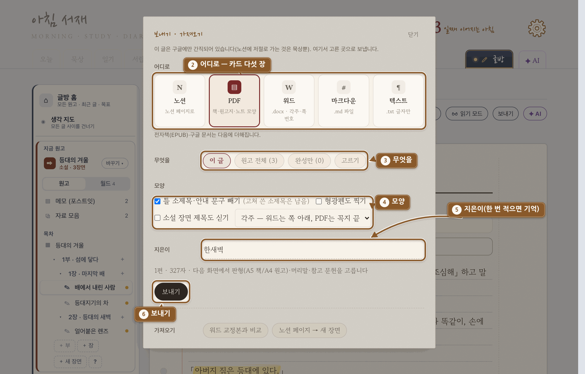
| 카드 | 결과 |
|---|---|
| 노션 | 노션 페이지로. 이미 보낸 글은 같은 페이지를 갱신 |
| 책·원고지·노트 모양 | |
| 워드 | .docx, 진짜 각주·쪽 번호. 한글 프로그램에서도 열림 |
| 마크다운 | .md 파일 |
| 텍스트 | .txt, 글자만 |
- 「무엇을」에서 「이 글」, 「원고 전체」, 「완성만」, 「고르기」 가운데 고릅니다.
- 「모양」을 정합니다.
- 「틀 소제목·안내 문구 빼기」(기본 켬, 고쳐 쓴 소제목은 남음)
- 「형광펜도 찍기」(기본 끔)
- 각주: 「각주 — 워드는 쪽 아래, PDF는 꼭지 끝」 또는 「미주 — 책 끝에 모아서」
- 「지은이」 칸에 이름을 적습니다. 한 번 적으면 기억합니다.
- 「보내기」를 누릅니다.
책으로 묶기(PDF)
PDF를 고르면 다음 화면에서 판형을 고릅니다.
| 고르는 것 | 모양 |
|---|---|
| A5 책 | 표지·차례·쪽 번호 |
| A4 투고 원고 | 넓은 줄 간격 |
| 강단용 태블릿 | 표지·차례 없이 A4 세로, 슬라이드 그림과 전달 큐 |
| 노트 (A4 · 줄 종이) | 한 쪽 30줄, 왼쪽 빨간 여백선 |
| 원고지 세로 (A4 · 400자) | 20칸×20줄, 한 자 한 칸 |
| 원고지 가로 (A4 가로 · 200자) | 20칸×10줄, 한 자 한 칸 |
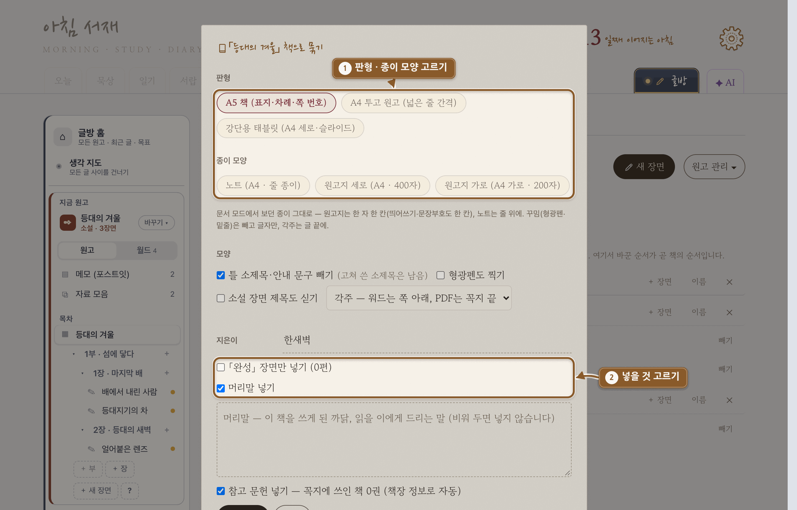
- 판형이나 종이 모양을 고릅니다. 문서 모드에서 원고지·노트로 쓰고 있었으면 그 모양이 먼저 골라져 있습니다.
- 「완성」 꼭지만 넣기, 머리말 넣기, 참고 문헌 넣기를 정합니다.
- 강단용은 글씨 크기를 고르고, 「각주도 싣기」를 켤 수 있습니다(기본은 뺌).
- 「미리보기」로 쪽을 나눈 모습을 봅니다. 그 안에서 인쇄해 PDF로 저장합니다.
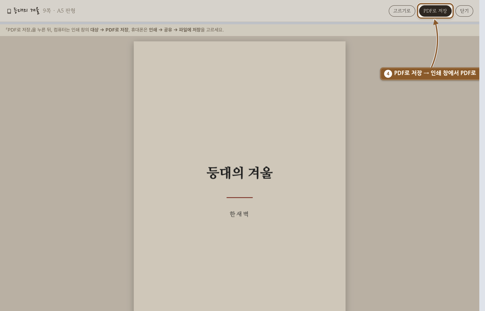
종이 모양 PDF는 꾸밈을 빼고 글자만 찍습니다. 각주는 글 끝에 모입니다.
보낸 기록
보내기 창 아래에 「보낸 기록」이 날짜·어디로와 함께 남습니다. 노션으로 보낸 것은 「열기」로 그 페이지를 바로 엽니다.
가져오기
보내기 창 아래 「가져오기」 줄에 두 가지가 있습니다.
- 「워드 교정본과 비교」(원고는 「꼭지별 비교」): 편집자가 고친 워드 파일을 지금 글과 나란히 놓고, 고친 곳마다 받아들일지 고릅니다.
- 「노션 페이지 → 새 꼭지」(글 이름은 원고 성격을 따름): 노션에서 완성한 페이지를 읽어 새 글로 만듭니다. 노션 쪽은 바꾸지 않습니다.
원고는 바깥에 나가 봐야 완성됩니다. 화면에서 읽던 글을 종이 모양으로 뽑아 보면, 전혀 다른 글처럼 보입니다. 오탈자와 늘어진 문단이 그제야 눈에 띕니다. 그래서 「묶어 보기」는 끝이 아니라 마지막 퇴고의 시작입니다. A5 책 모양으로 뽑아 한 권처럼 넘겨 보세요. 독자의 자리에 앉게 됩니다. 교정본을 받아들이는 일도 신중해야 합니다. 편집자의 빨간 펜도 하나씩 동의할지 고르는 것이 작가의 권리입니다. 나란히 비교는 그 권리를 지켜 줍니다. 원고지 모양 PDF는 공모전이나 청탁 원고처럼 매수가 중요한 곳에 씁니다.
기대 효과
- 한 원고를 책·투고·강단·원고지 등 쓰임에 맞는 모양으로 바로 뽑습니다.
- 번호·각주·참고 문헌을 손으로 다시 맞추지 않아도 됩니다.
- 교정본을 한 곳씩 받아들이며 내 문장을 지킵니다.
- 어디로 언제 보냈는지 기록이 남습니다.
작은 팁
- 노션으로 보내려면 구글 서버와 노션 연결(설정 → 노션 연결)이 필요합니다.
- 미리보기에서 「쪽을 나누는 중…」이 오래 걸리면 인터넷을 확인하세요.
- 전자책(EPUB)·구글 문서 보내기는 아직 없습니다.
4부글쓰기 수업
4부 · 마디 1
들어가기 — 작가를 꿈꾸는 분께: 글쓰기 기초 수업
이 부는 사용 설명서가 아닙니다. 글쓰기 교실의 첫 학기 수업입니다. 단추를 누르는 법보다, 왜 그렇게 쓰는지를 먼저 이야기합니다. 아침 서재의 기능은 그 공부를 돕는 연필과 공책으로 나옵니다.
수업은 열 장입니다. 마음을 세우는 장, 습관을 만드는 장, 글감을 모으는 장, 쓰고 고치는 장, 내놓는 장 순서입니다. 장마다 끝에 「오늘의 연습」이 하나 있습니다. 읽기만 하지 말고, 그날 아침에 한 번 해 보세요. 글쓰기는 손으로 배우는 공부입니다.
AI가 함께하는 장에는 「이 부분에서 AI는」 상자가 있습니다. 아침 서재의 AI는 대신 써 주는 사람이 아닙니다. 질문하고, 대조하고, 고칠 곳을 제안하는 조수입니다. 무엇을 쓸지, 무엇을 받아들일지, 마지막 문장은 여러분이 정합니다.
글쓰기 기초 수업누구나 작가로 시작할 수 있다
한 줄 요약작가는 이름이 아니라 동사입니다. 오늘 쓰는 사람이 작가입니다.
작가는 쓰는 사람이다
많은 분이 "언젠가 작가가 되고 싶다"고 말합니다. 그런데 그 '언젠가'는 잘 오지 않습니다. 책을 내야 작가가 되는 것이 아닙니다. 오늘 한 단락을 쓴 사람이 오늘의 작가입니다. 출판은 나중에 붙는 꼬리표일 뿐입니다. 쓰는 일이 먼저이고, 쓰는 일이 전부입니다.
재능보다 습관
글쓰기 교실에서 오래 지켜본 것이 있습니다. 첫 시간에 가장 빛나던 사람이 끝까지 쓰는 경우는 드뭅니다. 끝까지 가는 사람은 대개 꾸준한 사람입니다. 잘 쓰는 날도, 못 쓰는 날도 책상에 앉은 사람입니다. 재능은 출발선을 조금 앞당길 뿐입니다. 거리를 만드는 것은 날마다의 걸음입니다.
첫 독자는 나 자신
처음부터 남의 눈을 의식하면 손이 굳습니다. 첫 독자는 나 자신이면 충분합니다. 내가 읽고 "그래, 이게 내 마음이었어" 하고 고개를 끄덕이면, 그 글은 이미 제 할 일을 했습니다. 남에게 보이는 일은 나중에 해도 늦지 않습니다. 이 책의 마지막 장에서 그 이야기를 합니다.
과장하지 않는 응원
솔직히 말씀드립니다. 글쓰기는 쉽지 않습니다. 쓰다 보면 내 글이 초라해 보이는 날이 반드시 옵니다. 그 마음은 실패의 표시가 아닙니다. 보는 눈이 손보다 먼저 자랐다는 표시입니다. 눈이 높아진 만큼 손은 따라옵니다. 다만 시간이 걸립니다. 그 시간을 견디게 해 주는 것이 습관입니다.
옛 선비들은 날마다 일기와 문장을 지어 스스로를 다스렸습니다. 그들에게 글은 직업이 아니라 공부였고, 수양이었습니다. 작가가 된다는 것은 세상을 자세히 보고, 본 것을 정직하게 옮기는 사람이 된다는 뜻입니다. 이것은 누구에게나 열려 있는 길입니다. 아침 서재는 그 길을 혼자 걷지 않도록 만든 작은 서재입니다.
기대 효과
"나는 작가가 아니다"라는 생각이 "나는 오늘 쓰는 사람이다"로 바뀝니다. 시작이 가벼워집니다.
오늘의 연습
위 메뉴 「글방」에서 새 글을 하나 열고, 제목 칸에 「나는 왜 쓰고 싶은가」라고 적으세요. 본문에 세 문장만 씁니다. 잘 쓰려 하지 말고, 지금 마음 그대로 씁니다.
글쓰기 기초 수업날마다 조금씩 — 쓰는 습관 만들기
한 줄 요약습관은 의지가 아니라 자리입니다. 같은 시간, 같은 자리, 작은 분량으로 시작합니다.
정해진 시간·자리·분량
습관을 만드는 데 가장 큰 적은 "시간 날 때 써야지"라는 생각입니다. 시간은 나지 않습니다. 정해 두어야 생깁니다. 아침 서재라는 이름처럼, 하루를 여는 시간을 권합니다. 세상이 말을 걸기 전, 머릿속이 아직 맑은 시간입니다. 자리도 정해 두세요. 같은 의자, 같은 찻잔이면 몸이 먼저 "쓸 시간이구나" 하고 압니다.
분량은 작게 잡습니다. 10분, 또는 한 단락이면 충분합니다. 작은 분량은 실패하기 어렵습니다. 실패하지 않는 날이 쌓여야 습관이 됩니다. 더 쓰고 싶은 날은 더 쓰면 됩니다. 그러나 약속은 늘 작게 둡니다.
묵상·독서·일기는 작가의 훈련이다
여기서 중요한 이야기를 하나 하겠습니다. 쓰는 일만 글쓰기 공부가 아닙니다. 묵상과 독서, 일기는 작가에게 꼭 필요한 지적 활동이고, 동시에 영적인 활동입니다. 작가는 많이 쓰기 전에 깊이 읽고, 오래 보고, 조용히 머무는 사람이어야 하기 때문입니다.
- 묵상은 깊이 읽기 훈련입니다. 짧은 본문을 천천히, 여러 번 읽습니다. 낱말 하나에 멈춰 서는 법을 배웁니다. 작가에게 이보다 좋은 읽기 공부는 드뭅니다.
- 묵상은 관찰 훈련입니다. "이 사람은 왜 여기서 이렇게 말했을까?"를 묻는 일은, 소설가가 인물을 보는 눈과 같습니다.
- 묵상은 침묵 훈련입니다. 말하기 전에 듣는 시간입니다. 좋은 글은 대개 그 침묵에서 나옵니다.
- 독서와 밑줄은 남의 문장에 귀 기울이는 훈련입니다. 좋은 문장 앞에서 멈추는 습관이 내 문장의 귀를 키웁니다. 자기계발서든 신앙 서적이든, 책을 읽고 생각을 다듬는 일은 모두 작가를 키우는 공부입니다.
- 일기는 정직하게 쓰는 훈련입니다. 아무도 보지 않는 글에서 사람은 가장 솔직해집니다. 그 솔직함이 나중에 남에게 보일 글의 뿌리가 됩니다.
그러니 묵상만 하고 글을 못 쓴 날도, 책만 읽은 날도 헛된 날이 아닙니다. 작가의 아침을 산 날입니다.
작가의 아침 — 메뉴가 하나로 이어지는 흐름
아침 서재의 메뉴는 따로 떨어진 방이 아닙니다. 하나의 아침으로 이어지는 복도입니다. 앱 안에도 이 흐름이 그려져 있습니다. 「묵상 — 날마다 말씀 앞에서 쓴 글」 → 「끄적이기 — 수시로 적어 두는 글감」 → 「글쓰기 — 책을 읽고, 생각을 엮어 쓴 글」 → 「원고」.
| 아침의 순서 | 메뉴 | 작가에게 주는 것 |
|---|---|---|
| 1. 하루를 펼친다 | 위 메뉴 → 오늘 | 날마다 하는 세 가지(성경 읽기·묵상·책 읽기)를 한눈에 |
| 2. 깊이 읽고 머문다 | 위 메뉴 → 묵상 | 천천히 읽기, 관찰, 침묵 |
| 3. 남의 문장을 듣는다 | 위 메뉴 → 책장 | 읽은 책, 밑줄, 독후감 |
| 4. 떠오른 것을 붙잡는다 | 끄적이기 | 글감의 씨앗 |
| 5. 엮어 쓴다 | 위 메뉴 → 글방 | 한 편의 글, 한 권의 원고 |
| 6. 하루를 돌아본다 | 위 메뉴 → 일기 | 정직한 기록, 나를 아는 눈 |
모든 칸을 날마다 다 채울 필요는 없습니다. 오늘은 묵상과 끄적이기 둘이면 충분한 날도 있습니다. 중요한 것은 이 흐름이 한 사람 안에서 이어진다는 감각입니다. 아침에 머문 말씀이 저녁 일기에 다시 나오고, 그것이 언젠가 원고의 한 꼭지가 됩니다.
아침 서재에서 습관 만들기
- 위 메뉴 「오늘」을 엽니다. 날마다 하는 세 가지가 보입니다. 한 일에는 체크가 붙습니다.
- 「오늘」 화면의 「집중 시간」에서 길이를 고릅니다(15·25·45·50분). 처음이라면 15분이 좋습니다.
- 더 짧게 시작하고 싶으면 「설정 → 쓰는 동안 조용히」에서 집중 시간을 5분까지 줄일 수 있습니다. 이 설정은 이 기기에만 남습니다.
- 시계를 누르면 화면 가득 집중 화면이 열립니다. 쓰는 화면에서는 「⛶ 집중」을 누르면 종이만 남고 나머지는 숨습니다(나가기: Esc).
- 묵상은 위 메뉴 「묵상」, 하루의 기록은 「일기」, 짧은 생각은 「끄적이기」의 「끄적여 두기」로 남깁니다.
- 손을 3초 쉬면 글은 저절로 간직됩니다. "저장했나?" 걱정하지 말고 쓰는 데만 마음을 두세요.
이어지는 아침 — 연속 기록의 힘
「오늘」 화면 머리와 「설정」의 「이어지는 아침」에 며칠째 이어 왔는지가 보입니다. 성경 읽기·책 읽기·노트·글쓰기 가운데 하나라도 한 날이 하루로 셉니다. 날짜는 밤 12시에 넘어갑니다. 「설정 → 성경 통독」에서 읽는 요일을 정해 두면, 쉬는 요일은 건너뛰어도 끊기지 않습니다.
숫자는 생각보다 힘이 셉니다. "12일째"라는 글자는 오늘도 앉게 하는 작은 끈이 됩니다. 다만 숫자가 주인이 되면 안 됩니다. 숫자를 지키려고 억지로 한 줄 쓰는 날이 계속되면, 다시 생각해 볼 때입니다.
끊겼을 때의 마음가짐
언젠가는 끊깁니다. 아프거나, 바쁘거나, 그냥 마음이 내키지 않는 날이 옵니다. 누구에게나 옵니다. 끊긴 날에 할 일은 하나입니다. 다음 날 다시 앉는 것. 어제를 탓하는 데 쓰는 힘을 오늘 한 단락에 쓰세요. 날 수를 새로 세고 싶으면 「설정 → 이어지는 아침 → 오늘부터 다시 세기」를 누릅니다. 날 수만 새로 셀 뿐, 읽은 기록·글·일기는 하나도 지워지지 않습니다.
수도원의 하루는 정해진 시간에 기도하고, 읽고, 일하는 리듬으로 짜여 있었습니다. 그 리듬 덕분에 수도사들은 기분이 아니라 시간을 따라 살 수 있었습니다. 글쓰기도 같습니다. 영감을 기다리는 사람은 영감이 올 때만 씁니다. 시간을 정한 사람은 영감이 오지 않는 날에도 씁니다. 그리고 영감은 대개 쓰는 사람에게 찾아옵니다. 묵상과 독서와 일기가 한 리듬 안에 들어올 때, 글쓰기는 따로 떼어 낸 숙제가 아니라 삶의 한 부분이 됩니다.
기대 효과
쓰는 일이 "결심"에서 "일과"로 바뀝니다. 한 달쯤 지나면 앉는 데 드는 힘이 눈에 띄게 줄어듭니다.
오늘의 연습
「오늘」 화면에서 집중 시간을 15분으로 맞추고 시작하세요. 시계가 끝날 때까지 「묵상」이든 「일기」든 한 단락만 씁니다. 끝나면 쓴 단락 맨 아래에 "오늘 아침 내가 머문 낱말: ○○"을 한 줄 덧붙입니다.
글쓰기 기초 수업관찰과 메모 — 글감은 어디서 오나
한 줄 요약글감은 찾아오는 것이 아니라 모아 두는 것입니다. 보고, 적고, 다시 만나는 창고를 만듭니다.
감각으로 적기
"오늘 날씨가 좋았다"는 메모는 나중에 아무것도 떠올려 주지 않습니다. "창틀에 앉은 햇빛이 찻잔 손잡이까지 와 있었다"는 메모는 그날 아침을 통째로 돌려줍니다. 차이는 감각입니다. 보이는 것, 들리는 것, 냄새, 손에 닿는 느낌, 맛. 다섯 가지 가운데 하나라도 붙잡아 적으세요.
감정도 이름 대신 장면으로 적습니다. "서운했다"보다 "그 사람이 내 말에 대답 없이 휴대폰을 봤다"가 훨씬 많은 것을 남깁니다. 장면은 나중에 글이 됩니다. 감정의 이름은 대개 그 자리에서 끝납니다.
묵상은 가장 깊은 관찰 연습이다
관찰을 배우는 데 묵상만 한 교실이 없습니다. 짧은 본문을 펴 놓고 "무엇이 보이는가"를 먼저 묻습니다. 해석은 그다음입니다. 누가 있는가, 어디인가, 무엇을 하는가, 어떤 낱말이 되풀이되는가. 이 질문은 그대로 작가가 세상을 보는 질문입니다. 묵상에서 본문을 오래 보는 눈은, 길에서 만난 사람의 손등을 오래 보는 눈과 같은 눈입니다. 지적인 훈련이면서, 서두르지 않고 머무는 영적인 훈련입니다.
글감 창고 만들기
아침 서재에는 글감을 모아 두는 자리가 여럿 있습니다. 성격이 조금씩 다르니 나눠 쓰면 좋습니다.
| 창고 | 무엇을 담나 | 어디서 |
|---|---|---|
| 밑줄 | 책에서 멈춘 문장, 묵상 본문에 그은 형광펜·밑줄·메모 | 위 메뉴 → 책장, 묵상 화면 |
| 끄적이기 | 떠오른 한 줄, 들은 말, 장면 하나 | 오늘 화면·쓰는 화면의 「끄적이기」, 고른 문장의 「끄적이기에 담기」 |
| 원고 메모 (포스트잇) | 이 원고에서 쓸 생각의 씨앗 | 글방 → 왼쪽 칸 「원고」 탭 → 「메모 (포스트잇)」 |
| 자료 모음 | 바깥 근거 — 책·기사·통계·예화, 출처와 함께 | 글방 → 왼쪽 칸 「원고」 탭 → 「자료 모음」 |
구분은 단순합니다. 내 생각의 씨앗은 끄적이기와 메모로, 남에게서 온 근거는 자료 모음으로 둡니다. 자료 모음에는 지은이·해·쪽을 함께 적어 두세요. 나중에 인용할 때, 출처를 다시 찾느라 한 시간을 쓰지 않게 됩니다.
끄적이기를 쓰는 법
- 위 메뉴 「오늘」이나 쓰는 화면에서 「끄적이기」 칸에 한 줄을 적고 「끄적여 두기」를 누릅니다.
- 글을 쓰다가 마음에 걸린 문장은 그 문장을 고른 뒤 「끄적이기에 담기」로 옮깁니다.
- 모인 끄적임은 끄적이기 판에 포스트잇처럼 붙습니다. 위 띠로 분류하고, 색을 바꾸고, 핀 표시로 맨 위에 붙박아 둘 수 있습니다.
- 쓸 때가 되면 포스트잇의 「→ 쓰기」를 눌러 원고 메모·새 글로 꺼내 씁니다. 꺼내 쓴 끄적임에는 「✓ 쓰임」 표시가 붙습니다.
- 끄적이기는 모든 기기에서 같이 보이고, 노션에는 가지 않습니다.
생각 지도로 다시 만나기
메모의 진짜 쓸모는 나중에 다시 만날 때 생깁니다. 적어 두고 잊은 메모는 창고가 아니라 서랍 속 먼지입니다. 글방 홈 왼쪽 칸의 「✺ 생각 지도」는 묵상·설교·글방 글·일기·밑줄을 모두 모아, 주제·낱말·성경 책·노트로 이어 보여 줍니다. 기간은 「최근 3달」·「1년」·전부로 고릅니다. 특히 「✺ 다시 만난 생각」은 요즘 쓴 것이 두 달 넘은 옛 생각과 같은 것을 붙잡고 있을 때 알려 줍니다. 같은 자리를 계속 맴돈다면, 그것이 여러분이 써야 할 주제일지 모릅니다.
옛사람들은 책을 읽다 좋은 구절을 베껴 모은 공책을 곁에 두었습니다. 그 공책은 그대로 다음 글의 밑천이 되었습니다. 작가의 공책은 남이 보면 잡동사니처럼 보입니다. 그러나 쓰는 사람에게는 가장 귀한 재산입니다. 관찰은 재능이 아니라 주의입니다. 주의는 연습으로 자랍니다. 묵상이 그 주의를 날마다 길러 줍니다.
기대 효과
"무엇을 쓸까"로 막히는 날이 줄어듭니다. 창고를 열면 오늘 쓸 것이 이미 몇 개 기다리고 있습니다.
오늘의 연습
오늘 하루, 감각 하나가 들어간 끄적임을 세 장 남기세요. 소리 하나, 냄새 하나, 손에 닿은 것 하나. 저녁에 끄적이기 판을 열어 그중 하나를 핀 표시로 맨 위에 붙박아 둡니다.
글쓰기 기초 수업초고는 빨리, 퇴고는 천천히
한 줄 요약쓰는 손과 고치는 눈은 다른 일을 합니다. 둘을 동시에 하지 말고, 차례로 합니다.
쓰기와 고치기를 나누기
한 문장 쓰고 지우고, 또 쓰고 지우는 분이 많습니다. 그러면 한 시간 뒤에도 첫 단락에 머물러 있습니다. 쓰는 동안에는 고치지 마세요. 오타가 보여도, 낱말이 어색해도 그냥 갑니다. 초고의 일은 단 하나, 끝까지 가는 것입니다. 고치는 일은 끝난 글에만 할 수 있습니다.
완벽주의 내려놓기
첫 초고는 원래 엉성합니다. 이름난 작가들의 초고도 그렇습니다. 차이는 그들이 그 엉성함을 견뎠다는 것뿐입니다. "이걸 누가 읽겠어"라는 목소리가 들리면, "아직 아무도 안 읽어" 하고 대답하세요. 초고의 독자는 아직 나 하나입니다. 완벽한 첫 문장을 기다리는 사람은 두 번째 문장을 쓰지 못합니다.
아침 서재에서는 이렇게 도울 수 있습니다.
- 쓰는 화면의 「쓰기」 메뉴에서 「타자기」를 켜면 쓰는 줄이 늘 화면 가운데에 옵니다. 지나간 문장이 눈에 덜 걸립니다.
- 「⛶ 집중」으로 종이만 남기고, 집중 시간을 켜 둡니다. 시계가 끝날 때까지는 쓰기만 합니다.
- 맞춤법 밑줄이 신경 쓰이면 초고 때는 무시하세요. 밑줄은 퇴고 때 한꺼번에 봅니다.
퇴고의 순서 — 큰 것에서 작은 것으로
퇴고는 천천히, 그리고 순서대로 합니다. 작은 것부터 고치면, 애써 다듬은 문장을 나중에 통째로 지우게 됩니다.
- 구조: 이 글은 무엇을 말하는가. 순서는 맞는가. 빠진 것, 군더더기 단락은 없는가.
- 문단: 한 문단이 한 가지 생각을 담고 있는가. 문단과 문단이 자연스럽게 이어지는가.
- 문장: 너무 긴 문장, 주어와 서술어가 어긋난 문장은 없는가.
- 낱말: 같은 말이 되풀이되지 않는가. 더 정확한 낱말은 없는가.
초고를 쓴 날 바로 퇴고하지 마세요. 하루, 할 수 있으면 사흘쯤 묵힙니다. 글에서 손을 떼야 남의 글처럼 보입니다.
소리 내어 읽기
퇴고의 가장 오래되고 확실한 도구는 내 목소리입니다. 글을 소리 내어 읽어 보세요. 숨이 차는 곳은 문장이 길다는 뜻입니다. 혀가 걸리는 곳은 낱말이 어색하다는 뜻입니다. 지루해지는 곳은 독자도 지루해합니다. 눈은 대충 넘어가도, 입은 넘어가지 못합니다.
판 남기기와 비교
과감하게 고치려면 돌아갈 길이 있어야 합니다. 아침 서재는 그 길을 마련해 둡니다.
- 쓰는 화면 옆 칸 「간직하기」 아래의 「이름 붙인 판」을 펼칩니다.
- 「지금 판 남기기」를 누르고 이름을 붙입니다. 예: 「초고 끝」, 「구조 고치기 전」. 글 하나에 10개까지 남깁니다.
- 마음껏 고친 뒤, 남긴 판 옆의 「지금과 비교」를 누르면 무엇이 바뀌었는지 줄마다 보입니다.
- 예전이 나았다면 「이 판으로」를 눌러 되돌립니다.
- 원고 전체를 한꺼번에 남기려면 원고 관리의 「원고 판」을 씁니다. 원고 판은 드라이브 「아침 서재/원고 판」 폴더에 파일로 남습니다.
본문 위의 ↶·↷ 단추와 ⌘Z도 있습니다. 하지만 큰 퇴고 전에는 꼭 이름 붙인 판을 하나 남기세요.
읽기 모드·이어 읽기
고치는 눈과 읽는 눈은 또 다릅니다. 가끔은 고치지 말고 읽기만 하세요.
- 쓰는 화면의 「읽기 모드」를 누르면 글자 칸이 숨고, 꾸밈이 입혀진 모습으로 보기만 합니다. 글은 건드려지지 않습니다. 다시 쓰려면 「다시 쓰기」를 누릅니다.
- 원고라면 원고 보기의 「이어 읽기」에서 원고 전체를 한 줄로 이어 읽고, 걸리는 곳만 바로 고칠 수 있습니다. 꼭지와 꼭지 사이의 이음새가 이때 보입니다.
화가는 그림을 그리다 몇 걸음 물러서서 봅니다. 가까이서는 붓 자국만 보이고, 멀리서야 그림이 보이기 때문입니다. 초고와 퇴고를 나누는 것은 이 물러섬을 시간으로 하는 일입니다. 쓰는 나는 그림 속에 있고, 고치는 나는 그림 밖에 서 있습니다. 퇴고를 "틀린 것 찾기"로만 여기지 마세요. 퇴고는 내가 정말 하고 싶었던 말을 두 번째로 발견하는 시간입니다.
기대 효과
쓰는 속도가 빨라지고, 고친 글은 더 단단해집니다. 지우는 두려움이 줄어 과감하게 고칠 수 있습니다.
오늘의 연습
지난주에 쓴 글 하나를 열어 「지금 판 남기기」로 「퇴고 전」 판을 남기세요. 그다음 소리 내어 한 번 읽고, 숨이 찬 문장 하나만 둘로 나눕니다. 「지금과 비교」로 바뀐 곳을 확인합니다.
글쓰기 기초 수업좋은 문장의 기본기
한 줄 요약좋은 문장은 화려한 문장이 아니라, 한 번에 읽히는 문장입니다.
아래 여섯 가지는 글쓰기 교실에서 첫 학기에 늘 다루는 기본기입니다. 예문은 모두 이 수업을 위해 지은 것입니다.
1. 짧게 쓴다
한 문장에는 한 가지 생각만 담습니다. 문장이 길어지면 독자는 처음 내용을 잊습니다.
나는 아침에 일어나서 창문을 열었는데 바람이 생각보다 차가워서 다시 닫으려다가 마당의 감나무에 까치가 앉아 있는 것을 보고 한참을 서 있었다.
아침에 창문을 열었다. 바람이 생각보다 찼다. 다시 닫으려는데 마당 감나무에 까치가 앉아 있었다. 나는 한참을 서 있었다.
짧은 문장만 이어지면 딱딱해질 수 있습니다. 짧게 쓴 뒤, 소리 내어 읽으며 두 문장을 이어 줄 곳만 잇습니다.
2. 구체적으로 쓴다
뭉뚱그린 말은 독자의 머릿속에 그림을 그리지 못합니다. 이름과 숫자와 장면을 씁니다.
어머니는 늘 우리를 위해 많은 희생을 하셨다.
어머니는 겨울마다 당신 외투를 한 해 더 입으셨다. 그 돈으로 우리 셋의 운동화를 샀다.
"희생"이라는 낱말을 쓰지 않았는데, 독자는 희생을 봅니다. 이것이 구체적인 문장의 힘입니다.
3. 주어와 서술어를 맞춘다
문장이 길어지면 주어와 서술어가 서로 다른 이야기를 합니다. 주어만 남기고 서술어를 바로 붙여 읽어 보세요.
내가 이 글을 쓰는 이유는 많은 사람이 아침을 허둥지둥 보낸다.
내가 이 글을 쓰는 이유는 많은 사람이 아침을 허둥지둥 보내기 때문이다.
많은 사람이 아침을 허둥지둥 보낸다. 그래서 이 글을 쓴다.
"이유는 … 때문이다", "목표는 … 것이다"처럼 짝이 맞아야 합니다. 짝 맞추기가 어려우면 문장을 둘로 나누는 것이 가장 쉽습니다.
4. 같은 말 되풀이를 피한다
가까운 자리에 같은 낱말이 거듭 나오면 글이 늘어집니다. 특히 "것", "있다", "하다"가 자주 되풀이됩니다.
중요한 것은 매일 쓰는 것이다. 쓰는 것이 어려운 것은 시작하는 것이 어렵기 때문이다.
중요한 건 날마다 쓰는 일이다. 쓰기가 어려운 까닭은 시작이 어렵기 때문이다.
되풀이가 늘 나쁜 것은 아닙니다. 힘주어 말하려고 일부러 되풀이할 때도 있습니다. 다만 그때는 내가 알고 되풀이해야 합니다.
5. 꾸밈말을 줄인다
"정말", "너무", "매우", "아주" 같은 말은 문장을 세게 하는 것 같지만, 실제로는 약하게 합니다. 꾸밈말이 많으면 핵심 낱말이 묻힙니다.
그날 본 노을은 정말 너무 아름답고 매우 황홀해서 나는 진짜 할 말을 잃었다.
그날 노을 앞에서 나는 할 말을 잃었다.
꾸밈말을 지웠더니 오히려 노을이 더 커졌습니다. 아름다움을 설명하지 말고, 아름다움 앞의 나를 보여 주세요.
6. 능동으로 쓴다
"~되었다", "~지게 되었다", "~에 의해"가 이어지면 누가 했는지 흐려집니다. 할 일을 한 사람을 주어로 세웁니다.
회의에서 새로운 계획이 결정되어졌고, 그 일은 김 집사님에 의해 맡겨지게 되었다.
회의에서 새 계획을 정했다. 그 일은 김 집사님이 맡았다.
"결정되어졌다"처럼 피동이 겹친 말은 특히 피합니다. 우리말은 대개 능동으로 쓸 때 가장 자연스럽습니다.
아침 서재의 문장 도구
- 맞춤법: 쓰는 즉시 자주 틀리는 맞춤법·띄어쓰기에 물결 밑줄이 그어집니다. 밑줄을 누르면 고칠 안이 나옵니다. 쓰는 화면의 「맞춤법」 단추를 누르면 연결된 AI가 문단을 다시 살핍니다. 밑줄 방식은 「설정」의 「맞춤법 밑줄」에서 고릅니다.
- ✎ 문체 점검: 반복어, 같은 시작과 끝, 버릇 말, 뻔한 표현, 군더더기, 수동과 명사화 같은 것을 셉니다. AI가 아니라 기계로 세는 것이라 비용이 들지 않습니다. 걸린 곳에는 노란 물결이 보입니다.
- 문체 점검이 짚은 곳을 위 여섯 가지 기본기에 비추어 하나씩 고칩니다. 점검이 짚었다고 다 고칠 필요는 없습니다. 일부러 쓴 것이면 그대로 둡니다.
좋은 문장을 배우는 가장 좋은 방법은 좋은 문장을 많이 읽고, 그 앞에서 멈추는 것입니다. 책장의 밑줄이 그 공부입니다. 다만 남의 문장을 흉내 내는 데서 멈추지 마세요. 밑줄 그은 문장이 왜 좋은지 한 줄로 적어 보면, 그 원리가 내 손으로 옮겨 옵니다. 기본기는 지루해 보이지만, 모든 아름다운 문장은 기본기 위에 서 있습니다.
기대 효과
문장이 한 번에 읽힙니다. 독자가 문장을 해독하느라 쓰는 힘을, 내용을 느끼는 데 쓰게 됩니다.
오늘의 연습
오늘 쓴 글에 「✎ 문체 점검」을 한 번 돌려 보세요. 노란 물결이 가장 많이 걸린 낱말 하나를 골라, 그 낱말이 나오는 문장을 모두 고쳐 씁니다.
글쓰기 기초 수업구조를 세우는 법
한 줄 요약구조는 글의 뼈대입니다. 뼈대는 한 문장에서 시작합니다.
한 문장으로 말하기
글을 쓰기 전에, 또는 초고를 쓴 직후에 스스로 물어보세요. "이 글은 한 문장으로 무엇을 말하는가?" 이 질문에 답하지 못하면, 글은 이것저것을 말하다 흩어집니다. 답할 수 있으면, 그 한 문장이 모든 단락의 기준이 됩니다. 단락마다 "이것이 그 한 문장을 돕는가?"를 묻고, 돕지 않는 단락은 아까워도 덜어 냅니다. 덜어 낸 것은 버리지 말고 다음 글의 글감으로 끄적이기에 옮겨 두세요.
아침 서재의 설계 카드가 바로 이 일을 합니다.
- 쓰는 화면의 「쓰기」 메뉴에서 「설계 카드」를 엽니다.
- 설계 카드는 「세 줄」(내가 받은 것 세 줄)에서 출발해 「한 문장」을 정하고, 그 밖의 칸(기능·겨냥할 자리 등)을 채웁니다. 칸은 글의 성격에 따라 조금씩 다릅니다.
- 한 문장을 확정하면 카드 머리에 「✓」와 함께 그 문장이 보입니다. 쓰는 동안 이 문장이 늘 눈앞에 있습니다.
처음·가운데·끝
가장 오래되고 튼튼한 짜임은 셋으로 나누는 것입니다.
- 처음: 독자를 글 안으로 데려옵니다. 질문, 장면, 놀라운 사실 하나로 엽니다.
- 가운데: 한 문장을 펼칩니다. 근거와 예와 생각을 차례로 놓습니다.
- 끝: 처음에 연 문을 닫습니다. 한 문장으로 돌아오되, 같은 말을 되풀이하지 않고 한 걸음 더 나아갑니다.
처음에 꺼낸 장면을 끝에서 다시 불러오면, 짧은 글도 단정하게 닫힙니다.
목차를 먼저 세우는 사람, 쓰면서 찾는 사람
작가는 크게 두 부류가 있다고들 합니다. 지도를 먼저 그리고 떠나는 사람, 걸으면서 길을 찾는 사람. 어느 쪽이 옳은 것은 아닙니다. 다만 자기가 어느 쪽인지 알면 덜 괴롭습니다.
| 목차를 먼저 세우는 사람 | 쓰면서 찾는 사람 | |
|---|---|---|
| 장점 | 길을 잃지 않는다, 긴 원고에 강하다 | 생기 있는 글, 뜻밖의 발견 |
| 함정 | 목차만 다듬다 본문을 못 쓴다 | 끝없이 늘어나고 끝나지 않는다 |
| 아침 서재에서 | 왼쪽 목차에 칸·글을 먼저 만들고 하나씩 채운다 | 끄적이기와 글을 먼저 쓰고, 나중에 원고로 엮어 목차를 끌어 옮긴다 |
쓰면서 찾는 분이라도 초고가 끝나면 한 번은 지도를 그려 보세요. 지도 없이 퇴고하면 같은 곳을 맴돕니다.
원고의 세 겹 — 칸·글·소제목
책 한 권 분량의 원고는 세 겹으로 짜입니다. 아침 서재의 글방은 이 세 겹을 그대로 따릅니다.
- 칸(부·장): 원고의 큰 덩어리입니다. 왼쪽 목차에 보이는 칸이며, 그 자체로는 글이 아닙니다.
- 글 하나(꼭지·절·장면): 실제로 쓰는 낱장입니다. 서랍에 한 편씩 들어갑니다.
- ■ 소제목: 글 안의 작은 마디입니다. 지금 글의 ■ 개요가 왼쪽에 보여, 누르면 그 자리로 갑니다.
쓰다가 글 하나가 너무 길어지면 커서 자리에서 「나누기」, 너무 짧은 두 글은 「다음 글과 합치기」를 씁니다. 글을 칸으로 바꿀 수도 있습니다. 왼쪽 목차는 끌어서 순서를 바꿀 수 있습니다. 장을 옮기면 안의 글이 함께 따라옵니다. 목차 화면의 「?」를 누르면 칸·글·소제목의 원칙이 보입니다.
건축가는 벽돌을 쌓기 전에 도면을 그립니다. 그러나 좋은 건축가는 공사 중에도 도면을 고칩니다. 땅이 생각과 다를 때가 있기 때문입니다. 구조는 감옥이 아니라 지도입니다. 한 문장이 바뀌면 구조도 바뀌어야 합니다. 설계 카드의 한 문장을 바꿀 수 있는 사람은 여러분뿐이고, 바꿔도 괜찮습니다. 다만 바꿀 때는 의식하고 바꾸세요. 흘러가다 바뀐 글은 독자도 길을 잃게 합니다.
기대 효과
쓰다가 "내가 무슨 말을 하고 있었지?" 하는 순간이 줄어듭니다. 긴 원고도 한 꼭지씩 채워 가는 일이 됩니다.
오늘의 연습
쓰고 있는 글 하나를 열어 「설계 카드」의 세 줄을 채우세요. 그다음 한 문장을 25자 안팎으로 적어 확정합니다. 본문의 각 단락이 그 한 문장을 돕는지 하나씩 확인해 봅니다.
글쓰기 기초 수업독자를 생각하기
한 줄 요약글은 누군가에게 건네는 말입니다. 그 누군가의 얼굴을 떠올리며 씁니다.
누구에게 쓰는가
"모든 사람에게" 쓰는 글은 아무에게도 닿지 않습니다. 한 사람을 정하세요. 교회 청년부의 막내, 첫 직장에서 지친 동생, 스무 살의 나. 얼굴이 떠오르는 한 사람이면 됩니다. 그 사람이 이 단락을 읽고 고개를 끄덕일지, 갸웃할지를 상상하며 고칩니다.
쉬운 말
어려운 말은 글쓴이를 똑똑해 보이게 하지 않습니다. 독자를 지치게 할 뿐입니다. 한자어를 우리말로 바꿀 수 있으면 바꿉니다. "도모하다"는 "꾀하다"로, "상기하다"는 "떠올리다"로. 전문 용어를 꼭 써야 하면, 처음 나올 때 한 번 쉽게 풀어 줍니다. 쉬운 말로 깊은 이야기를 하는 것이 가장 어려운 기술입니다.
첫 문단의 약속
첫 문단은 독자와 맺는 약속입니다. "이 글을 읽으면 이런 것을 얻을 겁니다"라는 약속입니다. 약속은 질문일 수도, 장면일 수도, 고백일 수도 있습니다. 중요한 것은 그 약속을 끝까지 지키는 것입니다. 첫 문단에서 아픔을 꺼냈으면, 끝에서 그 아픔을 외면하지 마세요. 독자는 약속을 기억합니다.
첫 문단은 대개 가장 나중에 다시 씁니다. 글을 다 쓰고 나서야, 내가 어떤 약속을 했어야 했는지 알게 되기 때문입니다.
끝 문단의 여운
끝 문단에서 모든 것을 정리하려 하면 글이 설교처럼 무거워집니다. 독자가 생각할 자리를 조금 남겨 두세요. 요약하지 말고, 한 걸음 더 나아가거나 한 장면으로 닫습니다. 글을 덮은 뒤에도 독자의 마음에 한 문장이 남는다면, 그 글은 성공한 것입니다.
아침 서재의 AI 원칙에서도 도입 첫 문단과 결론 마지막 문단은 사람이 직접 쓰는 자리입니다. 설계 카드의 「네 자리」가 이 자리를 초록으로 표시해 지켜 줍니다. 독자와 처음 눈을 맞추고 마지막 인사를 하는 자리이기 때문입니다.
편지를 생각해 보세요. 편지를 쓸 때 우리는 받는 사람을 압니다. 그래서 편지는 대개 솔직하고, 쉽고, 따뜻합니다. 모든 좋은 글은 어떤 의미에서 편지입니다. 한 사람에게 쓴 글이 결국 많은 사람에게 닿습니다. 독자를 생각한다는 것은 독자에게 맞춰 내 생각을 바꾼다는 뜻이 아닙니다. 내 생각을 독자가 걸어 들어올 수 있는 길로 놓는다는 뜻입니다.
기대 효과
글이 "내 생각 정리"에서 "누군가에게 건네는 말"로 바뀝니다. 읽는 사람이 끝까지 따라옵니다.
오늘의 연습
쓰고 있는 글의 첫 문단과 끝 문단만 따로 읽어 보세요. 첫 문단의 약속을 끝 문단이 지키는지 확인합니다. 지키지 않는다면 끝 문단을 직접 다시 씁니다.
글쓰기 기초 수업막힐 때 — 작가의 벽을 넘는 열 가지 방법
한 줄 요약막히는 것은 작가에게 일어나는 일상입니다. 벽 앞에서 쓸 수 있는 연장을 미리 챙겨 둡니다.
화면 앞에서 한 글자도 나오지 않는 날이 있습니다. 경험 많은 작가에게도 옵니다. 막혔다고 재능이 없는 것이 아닙니다. 대개는 지쳤거나, 방향이 흐리거나, 너무 잘 쓰려 하기 때문입니다. 아래 열 가지는 글쓰기 교실에서 실제로 효과를 본 방법입니다. 하나가 안 되면 다음 것을 해 보세요.
1. 장소를 바꾼다
책상에서 막히면 식탁으로, 식탁에서 막히면 동네 카페로 갑니다. 몸이 움직이면 생각도 움직입니다. 아침 서재는 휴대폰에서도 같은 글이 이어집니다. 산책길 벤치에서 휴대폰으로 두 문장을 이어 써도 됩니다.
2. 다른 장면부터 쓴다
처음부터 차례대로 쓸 필요는 없습니다. 가장 쓰고 싶은 장면, 가장 쉬운 꼭지부터 씁니다. 글방 왼쪽 목차에서 다른 글을 열어 그것부터 채우세요. 채운 뒤 목차를 끌어 순서를 맞추면 됩니다.
3. 손으로 쓰듯 끄적인다
문장을 쓰려 하지 말고, 낱말과 반쪽 문장을 흩뿌립니다. 맞춤법도 순서도 신경 쓰지 않습니다. 「끄적이기」에 생각나는 낱말을 다섯 장 붙여 보세요. 포스트잇을 바라보다 보면 그중 둘이 서로 이어집니다.
4. 소리 내어 말한다
쓰려니 막히는 말도, 말로 하면 나옵니다. 친구에게 설명하듯 소리 내어 말해 보세요. 말한 것을 그대로 받아 적습니다. 말은 글보다 덜 긴장합니다. 다듬는 것은 나중 일입니다.
5. 5분 타이머를 켠다
"5분만 쓰자"는 약속은 누구나 지킬 수 있습니다. 「설정 → 쓰는 동안 조용히」에서 집중 시간을 5분으로 맞추고 시작합니다. 5분 동안은 손을 멈추지 않습니다. 쓸 말이 없으면 "쓸 말이 없다"를 씁니다. 대개 3분쯤에서 진짜 문장이 나옵니다.
6. 한 문장으로 돌아간다
방향을 잃어 막힌 것일 수 있습니다. 설계 카드를 열어 한 문장을 다시 읽으세요. 한 문장이 아직 없다면, 막힌 이유가 거기 있습니다. 본문을 멈추고 한 문장부터 정합니다.
7. 기준을 일부러 낮춘다
"오늘은 세상에서 가장 못 쓴 초고를 쓰겠다"고 마음먹습니다. 농담 같지만 효과가 큽니다. 「⛶ 집중」으로 지난 문장을 숨기고, 「타자기」를 켜 쓰는 줄만 보며 갑니다.
8. 읽고 온다
우물이 말랐을 때는 물을 길어 와야 합니다. 「책장」에서 밑줄 그은 문장들을 다시 읽거나, 「묵상」에서 오늘 본문을 천천히 읽습니다. 남의 좋은 문장은 내 안의 말을 깨웁니다. 묵상의 침묵은 서두르던 마음을 가라앉힙니다.
9. 질문을 받아 본다
혼자 묻는 질문이 바닥났을 때, 바깥에서 질문을 받으면 생각이 다시 흐릅니다. 쓰는 화면의 「✦ AI」로 글쓰기 도우미를 열고 「질문」 모드에서 "이 글을 더 쓰기 위해 제가 생각해 볼 질문을 세 가지 주세요"라고 부탁하세요. 대신 써 달라고 하지 마세요. 질문에 대한 답은 여러분이 씁니다. 그 답이 다음 단락이 됩니다.
10. 멈추고 내일 쓴다
정말 아무것도 안 될 때는 멈추는 것도 방법입니다. 다만 그냥 멈추지 말고, 다음 문장의 첫머리 몇 낱말을 적어 두고 멈추세요. 글은 손을 3초 쉬면 저절로 간직됩니다. 내일 그 글을 열면, 어제 적어 둔 반쪽 문장이 오늘의 첫 걸음이 되어 줍니다.
벽은 대개 내가 쓰려는 글이 생각보다 크다는 신호입니다. 큰 산은 한 번에 오르지 않습니다. 오늘 오를 만큼만 오릅니다. 막힌 날을 기록해 두는 것도 공부입니다. 일기에 "오늘은 왜 막혔나"를 두 줄 적어 보세요. 몇 주 지나면 내가 언제, 왜 막히는지 보입니다. 자기를 아는 작가가 오래 씁니다.
기대 효과
막히는 날에도 빈손으로 일어나지 않게 됩니다. 벽이 와도 "이번엔 몇 번 방법을 써 볼까" 하고 고를 수 있습니다.
오늘의 연습
쓰다 멈춘 글 하나를 엽니다. 위 열 가지 가운데 5번(5분 타이머)과 9번(질문 받기)을 차례로 해 보세요. AI에게 받은 질문 하나에 대한 답을 세 문장으로 씁니다.
글쓰기 기초 수업끝까지 쓰고 세상에 내놓기
한 줄 요약끝낸 글만이 독자를 만납니다. 작은 완성부터 시작해, 조금씩 바깥으로 내놓습니다.
완성의 기준
"언제 끝났다고 할 수 있나요?" 글쓰기 교실에서 가장 많이 받는 질문입니다. 완벽해졌을 때가 아닙니다. 그런 날은 오지 않습니다. 다음 세 가지에 "예"라고 할 수 있으면 끝난 것입니다.
- 한 문장으로 무엇을 말하는지 분명한가.
- 처음의 약속을 끝에서 지켰는가.
- 소리 내어 읽었을 때 걸리는 곳이 없는가.
아침 서재에서는 글의 상태를 「씨앗 → 초고 → 다듬는 중 → 완성」으로 표시할 수 있습니다. 쓰는 화면 옆 칸에서 고르고, 서랍에서 상태가 보입니다. 「완성」을 누르는 것은 작지만 중요한 의식입니다. 스스로에게 "끝냈다"고 말해 주는 일입니다.
작은 완성부터 — 한 편, 열 편, 한 권
처음부터 책 한 권을 목표로 하면 지치기 쉽습니다. 계단을 놓으세요.
- 한 편: 원고지 10매 안팎의 짧은 글 하나를 완성합니다.
- 열 편: 같은 주제나 같은 결의 글 열 편을 모읍니다. 이때부터 내 목소리가 들리기 시작합니다.
- 한 권: 열 편을 원고로 엮고, 빈자리를 채웁니다. 글방의 원고에서 목차를 세우고 꼭지를 배치합니다.
원고에는 「원고 관리」에서 목표(분량)와 마감을 정할 수 있습니다. 글방 홈에 「목표 · 마감」이 보여 얼마나 왔는지 알 수 있습니다. 마감은 스스로 정한 것이어도 힘이 있습니다. 다만 너무 촉박하게 잡지 마세요. 지켜 낸 마감이 다음 마감을 지키게 합니다.
보내기와 첫 독자
끝낸 글은 밖으로 꺼내 봅니다. 아침 서재에서 글방 글은 구글에만 간직되어 있고, 「보내기」를 눌러야 바깥으로 나갑니다.
- 쓰는 화면의 「보내기」, 또는 원고 관리의 「보내기 · 가져오기」를 누릅니다.
- 보낼 곳을 고릅니다. PDF(판형 A5 책 / A4 원고), 워드(진짜 각주·쪽 번호, 한글 프로그램에서도 열림), 노션, 마크다운, 텍스트가 있습니다.
- 보낸 것은 「보낸 기록」에 남습니다. 언제 무엇을 누구에게 보였는지 나중에 확인할 수 있습니다.
- 첫 독자에게는 PDF가 가장 편합니다. 읽기 좋은 모양으로 고정되어, 내용에 집중하게 됩니다.
첫 독자는 신중히 고르세요. 무조건 칭찬하는 사람도, 무조건 깎아내리는 사람도 아닌, 솔직하고 따뜻한 한 사람이 좋습니다. 그리고 이렇게 부탁하세요. "어디서 지루했는지, 어디서 마음이 움직였는지만 알려 줘." 막연한 "어때?"보다 훨씬 쓸모 있는 답이 옵니다.
피드백 받는 마음가짐
피드백은 아픕니다. 내 글을 고치라는 말이 나를 고치라는 말처럼 들리기 때문입니다. 그러나 피드백은 글에 대한 말이지, 여러분에 대한 말이 아닙니다. 하루쯤 묵혔다가 다시 읽으면 쓸모 있는 말이 보입니다. 모든 지적을 받아들일 필요는 없습니다. 무엇을 받고 무엇을 지킬지 나누는 것이 작가의 일입니다. 여러 사람이 같은 곳을 짚었다면, 그곳은 꼭 다시 보세요.
받은 지적 가운데 다음 글에도 지킬 것은 「설정」의 「AI가 따를 것 — 규칙 · 말투 기준」에 규칙으로 남겨 둘 수 있습니다. 그러면 다음 글의 AI 도움도 그 규칙을 함께 따릅니다.
출판·투고·연재 — 큰 그림
글을 세상에 내놓는 길은 여러 갈래입니다. 여기서는 큰 그림만 그립니다. 자세한 조건은 길마다, 곳마다 다르니 그때 직접 알아보세요.
| 길 | 어떻게 | 좋은 점 | 생각할 점 |
|---|---|---|---|
| 블로그·글 플랫폼 | 완성한 글을 한 편씩 올린다 | 바로 독자를 만난다, 반응을 본다 | 꾸준함이 필요하다 |
| 연재 | 정해진 날에 한 회씩 올린다 | 마감이 습관을 만든다, 독자가 쌓인다 | 비축분 없이 시작하면 지친다 |
| 공모전 | 정해진 주제·분량으로 응모한다 | 마감과 기준이 분명하다 | 요강을 꼼꼼히 지켜야 한다 |
| 출판사 투고 | 기획서와 원고 일부를 보낸다 | 편집자와 함께 책을 만든다 | 답을 기다리는 시간이 길다 |
| 독립 출판·자가 출판 | 스스로 편집하고 펴낸다 | 내 뜻대로 만든다 | 편집·표지·유통을 스스로 챙긴다 |
어느 길이든 출발점은 같습니다. 끝낸 원고입니다. 길은 원고가 생긴 뒤에 골라도 늦지 않습니다.
옛 장인들은 작품을 끝내는 날을 따로 기념했습니다. 끝낸다는 것은 손을 떼는 용기이기 때문입니다. 끝내지 못한 걸작보다 끝낸 소품이 작가를 더 많이 키웁니다. 끝낼 때마다 다음 글을 시작하는 법을 배우기 때문입니다. 세상에 내놓는 일은 두렵습니다. 그러나 글은 읽힐 때 비로소 숨을 쉽니다. 첫 독자 한 사람이면 충분합니다.
기대 효과
쓰다 만 글이 쌓이는 대신, 끝낸 글이 쌓입니다. 끝낸 글 열 편은 "나도 할 수 있다"는 가장 확실한 증거가 됩니다.
오늘의 연습
지금까지 쓴 글 가운데 가장 짧은 것 하나를 골라 상태를 「완성」으로 바꾸세요. 「보내기」에서 PDF로 만들어, 믿을 만한 한 사람에게 "어디서 마음이 움직였는지만 알려 줘"라는 부탁과 함께 보냅니다.
글쓰기 기초 수업4주 글쓰기 기초 과정
한 줄 요약위 아홉 장을 4주에 걸쳐 몸에 익히는 과정입니다. 하루 15분, 주말에 한 번 조금 더.
주차별 연습표
| 주차 | 배울 것 | 아침 서재에서 할 일 | 완성물 |
|---|---|---|---|
| 1주 | 작가의 마음, 쓰는 습관, 작가의 아침 | 「오늘」에서 날마다 하는 세 가지 체크, 집중 시간 15분, 「묵상」 한 단락, 「일기」 두 줄. 「이어지는 아침」 7일 이어 가기 | 「나는 왜 쓰고 싶은가」 한 편(원고지 5매 안팎) |
| 2주 | 관찰과 메모, 좋은 문장의 기본기 | 날마다 감각 하나가 든 「끄적이기」 세 장, 「책장」 밑줄 한 줄과 그 까닭 한 줄, 「✎ 문체 점검」으로 내 버릇 낱말 찾기 | 끄적임 20장 이상, 감각으로 쓴 짧은 글 한 편(원고지 5~7매) |
| 3주 | 구조 세우기, 독자 생각하기, 초고는 빨리 | 「설계 카드」 세 줄·한 문장 확정, 독자 한 사람 정하기, 「타자기」·「⛶ 집중」으로 초고 끝까지. 막히면 열 가지 방법 가운데 둘 | 설계 카드가 확정된 글의 초고 한 편(원고지 10매 안팎) |
| 4주 | 퇴고는 천천히, 끝까지 쓰고 내놓기 | 「지금 판 남기기」 → 구조·문단·문장·낱말 순서로 퇴고 → 소리 내어 읽기 → 「읽기 모드」로 다시 읽기 → 상태 「완성」 → 「보내기」로 PDF | 완성한 글 한 편과 첫 독자의 한마디 |
과정을 마치는 분께
4주 뒤에 여러분 손에는 끝낸 글 한 편이 있습니다. 작아 보여도, 많은 사람이 평생 갖지 못하는 것입니다. 그다음은 같은 4주를 다시 도는 것입니다. 두 번째에는 한 편이 세 편이 되고, 세 번째에는 열 편의 원고가 보이기 시작합니다. 그때 글방에 원고를 하나 만들고, 그 열 편을 첫 꼭지들로 넣으세요. 여러분의 첫 책이 거기서 시작됩니다.
4주는 짧습니다. 글쓰기를 다 배우기에는 턱없이 짧습니다. 그러나 습관의 씨앗을 심기에는 충분합니다. 과정을 다 지키지 못해도 괜찮습니다. 한 주가 밀리면 그 주를 한 번 더 하면 됩니다. 수업은 여러분을 기다립니다. 날마다의 묵상과 독서와 일기가 이 4주를 받쳐 줄 것입니다. 작가의 아침은 그렇게 쌓여 한 사람의 삶이 됩니다.
오늘의 연습
「일기」를 열어 오늘 날짜에 "4주 글쓰기 기초 과정 시작"이라고 적으세요. 그 아래에 4주 뒤의 내가 손에 쥐고 있었으면 하는 글의 제목을 하나 적어 둡니다.
4부 · 마디 2
갈래별 글쓰기 수업 ① — 설교집 · 신앙 에세이 · 자기계발서 · 자유 글
4부는 글의 갈래마다 한 장씩, 늘 같은 순서로 씁니다. 「이 갈래는 무엇인가」(전문가의 눈) → 「아침 서재로 쓰는 순서」(실제 단추 이름) → 「전문가가 받는 실제 도움」 → 「전문가의 글쓰기 수업」(기본기·예문·습관·주차별 연습) → 「처음 쓰는 분께」 → AI 상자입니다. 궁금한 갈래의 장만 골라 읽어도 되고, 같은 이름의 절끼리 견주어 읽어도 됩니다.
이 책은 작가를 꿈꾸지만 어디서 시작할지 모르는 분을 위한 글쓰기 교과서이기도 합니다. 기능보다 「어떻게 쓰는가」가 궁금하다면 「전문가의 글쓰기 수업」부터 읽으셔도 좋습니다.
모든 갈래에 공통인 것을 먼저 적어 둡니다.
- 원고는 「위 메뉴 → 글방」에서 만듭니다. 원고를 만들 때 고르는 성격이 갈래입니다. 성격에 따라 부·장 이름, 새 글의 틀, 목표 단위, 검토 기준, 책 모양이 달라집니다.
- 손을 3초 쉬면 글이 저절로 간직됩니다. 원본은 구글 드라이브의 기록 파일이고, 이 기기는 보조입니다.
- AI 기능은 설정에 클로드(또는 제미나이) 열쇠를 넣어야 움직입니다. 열쇠가 없어도 쓰기·틀·카드·점검표·내보내기는 모두 됩니다.
- 사람이 먼저 씁니다. AI는 뒤에서 돕습니다. 이 원칙은 네 갈래 모두에서 같습니다.
1. 설교집
한 줄 요약성경 본문에서 중심 메시지를 찾고, 대지와 적용으로 엮어, 강단에서 읽을 원고와 한 권의 설교집을 만드는 자리입니다.
이 갈래는 무엇인가
설교는 읽는 글이 아니라 듣는 말입니다. 회중은 원고를 되돌려 읽을 수 없습니다. 그래서 설교의 전통은 늘 「하나로 꿴다」를 붙들어 왔습니다.
설교의 오랜 틀은 본문, 대지, 적용, 예화입니다. 본문은 설교의 출발이자 권위입니다. 설교자는 본문이 말하는 것을 말하고, 말하지 않는 것을 지어내지 않습니다.
대지는 한 문장의 중심 메시지를 받치는 기둥입니다. 셋이 전통이지만 숫자가 중요하지는 않습니다. 대지마다 중심 메시지로 다시 모이는지가 중요합니다.
적용은 「그래서 오늘 나는」입니다. 막연한 다짐보다 이번 주의 한 걸음이 힘이 있습니다.
예화는 창문입니다. 창문이 너무 크면 집이 보이지 않습니다. 본문을 가리는 예화는 덜어 냅니다.
복음주의 설교학은 여기에 한 가지를 더합니다. 본문이 겨냥하는 사람의 상처(타락한 상태)를 짚고, 그 자리에서 그리스도로 가는 길을 밝히는 것입니다. 아침 서재의 설계 카드에 「겨냥할 자리」와 「가는 길」 칸이 있는 까닭입니다.
설교 원고는 악보와 닮았습니다. 악보가 음악 자체가 아니듯, 원고도 설교 자체가 아닙니다.
원고는 소리 내어 읽힐 때 비로소 설교가 됩니다. 그래서 설교 원고는 눈으로 읽기 좋은 문장보다 귀로 듣기 좋은 문장을 고릅니다.
설교집은 한 걸음 더 갑니다. 강단에서 한 번 들린 말을 책으로 다시 읽게 하는 일입니다.
이때는 반대로 「귀의 문장」을 「눈의 문장」으로 옮겨야 합니다. 아침 서재가 강단용 PDF와 A5 책을 따로 두고, 다듬기에 「말하는 문장으로」와 「귀 → 눈」을 함께 둔 까닭입니다.
아침 서재로 쓰는 순서
- 원고 만들기. 「위 메뉴 → 글방 → 글방 홈」에서 「＋ 새 원고」를 누릅니다. 가제를 적고 성격에서 「설교집」을 고른 뒤 「원고 만들기」를 누릅니다. 설교집은 목차 칸이 「부·주제」, 글 하나의 이름이 「설교」입니다.
- 새 설교 열기. 원고 화면에서 「새 설교」를 누릅니다. 틀이 저절로 들어갑니다. 「■ 본문 낭독 · ■ 서론 · ■ 첫째, · ■ 둘째, · ■ 셋째, · ■ 결론과 결단」입니다. ■ 칸 이름은 고쳐 써도 됩니다.
- 묵상에서 시작하는 길도 있습니다. 「위 메뉴 → 묵상」에서 쓴 묵상을 열고 「설교초안 만들기」를 누릅니다. 같은 본문으로 쓴 묵상을 함께 고른 뒤 「설교초안 쓰기」를 누르면, 설교 씨앗·붙잡은 것·적용, 형광펜 친 문장이 새 설교초안에 이어집니다. 묵상은 그대로 남습니다. 묵상 없이 절기·예식 설교를 바로 시작하려면 「＋ 새 설교초안」을 씁니다.
- 세 줄 먼저. 설교 글에는 설계 카드가 늘 위에 있습니다. 본문을 먼저 읽고 「내가 받은 것 세 줄」을 적습니다. 묵상에서 넘어왔다면 「묵상·초안에서:」 아래 칩이 보입니다. 칩은 눌러야 칸에 들어갑니다.
- 설계 카드 채우기. 여섯 칸은 「한 문장 · 기능 · 겨냥할 자리 · 가는 길(그리스도로 가는 길) · 주 예화 · 분량 예산」입니다. 직접 채워도 되고, 「✦ AI 카드 초안」을 눌러 후보를 받아도 됩니다. 후보는 눌러야 들어갑니다.
- 한 문장 확정. 한 문장을 골랐으면 옆의 「확정」을 누릅니다. 「✓ 확정됨」이 되면 카드가 접힙니다. 이때부터 AI 구조안과 초안을 청할 수 있습니다. 한 문장을 고치면 확정이 저절로 풀립니다.
- 뼈대 세우기. 「✦ AI」를 눌러 도우미 창을 엽니다. 빠른 단추 「구조안」은 대지 구조안 두 가지를 냅니다. 대지마다 그리스도로 가는 길과 위로가 겨냥하는 자리가 표시됩니다. 고르고 고치는 것은 여러분입니다.
- 초안 쓰기. 직접 써도 되고, 빠른 단추 「초안 쓰기」로 AI 초안을 받아도 됩니다. AI 초안에는 네 자리가 〔직접 쓸 자리: …〕로 비어서 옵니다. 카드 아래 「직접 쓸 네 자리」(도입 첫 문단 · 1인칭 고백 · 결론 마지막 문단 · 기도문)는 본문에 옅은 초록 바탕으로 보입니다. 직접 쓴 자리는 체크해 둡니다.
- 예화 찾기. 빠른 단추 「예화 조사」는 조사 도우미로 넘어가 웹에서 예화 후보를 찾습니다. 후보마다 출처와 (확인함)/(확인 못 함)이 붙습니다. 「자료 모음에 담기」로 원고의 자료 창고에 모아 둡니다.
- 분량 재기. 카드 안 「분량 비율」 막대가 도입 · 본론 · 결론 비율과 결론 글자 수를 보여 줍니다. 기준은 도입 10 · 본론 70 · 결론 20%, 결론 최소 1,000자입니다. 「1분에 ○ 음절」 칸에 자기 말 속도를 넣으면 「말하면 약 ○분」이 맞게 나옵니다(기본 350음절).
- 다듬기. 문장을 고르면 꾸밈 막대가 뜹니다. 「✦ 다듬기」를 누르고 방향을 고릅니다. 설교집에서는 「다른 표현 · 다듬기 · 줄이기 · 쉽게 · 문장 호흡 · 비문 고치기 · 귀 → 눈 · 말하는 문장으로」가 있습니다. 비교 상자를 보고 「✓ 적용」을 눌러야만 바뀝니다. 내가 고친 좋은 문장은 막대의 「말투」로 말투 기준에 담습니다.
- 점검. 「쓰기 ▾」에서 「검증표」와 「점검 10문항」을 엽니다. 검증표는 연도·인명·숫자·인용·원어·예화를 출처와 대조하는 표입니다. 점검 10문항은 설교용 질문이고, 「아니오」만 고치면 됩니다. 「쓰기 ▾ → ✦ 피드백·첨삭」은 본문 충실 · 한 문장 · 구조 · 적용 · 전달 다섯 기준으로 봅니다.
- 슬라이드 붙이기. 쓰는 화면 옆 칸의 「슬라이드」 탭에서 「PPT 가져오기」를 누릅니다. 슬라이드가 작은 그림으로 모입니다. 그림을 누르면 커서 자리에 「▣ 슬라이드 n」 줄이 들어갑니다. 「자동으로 자리 잡기」는 슬라이드 글자와 설교 문단을 맞춰 줄을 넣어 줍니다.
- 강단에서 미리 보기. 「읽기 모드」를 누르면 설교문이 강단 모양으로 보입니다. 글을 건드리지 않고 보기만 합니다.
- 강단용 PDF. 「보내기 → PDF」를 고르고 「보내기」를 누릅니다. 판형에서 「강단용 태블릿 (A4 세로·슬라이드)」을 고릅니다(설교 한 편이면 처음부터 골라져 있습니다). 글씨 크기는 보통 · 조금 크게 · 크게 가운데서 고릅니다. 확인 꼬리표·검증표·각주는 작성자용이라 기본으로 빠집니다. 「미리보기」로 확인합니다.
- 설교집 한 권으로. 원고 화면의 「원고 관리 ▾ → 보내기 · 가져오기」에서 PDF를 고르면 「A5 책 (표지·차례·쪽 번호)」으로 묶을 수 있습니다. 머리말과 「완성」 설교만 넣기도 고를 수 있습니다.
전문가가 받는 실제 도움
저는 설교를 가르치며 같은 실수를 여러 번 봅니다. 초안을 세 번 쓰고서야 방향이 정해지는 일입니다. 아침 서재는 그 시행착오를 앞쪽에서 줄여 줍니다.
| 기능 | 무엇이 나아지는가 |
|---|---|
| 설계 카드와 「확정」 | 방향을 초안 전에 정합니다. 초안을 갈아엎는 횟수가 줄어듭니다. |
| 묵상 → 「설교초안 만들기」 | 한 주 동안 쌓은 묵상의 씨앗이 버려지지 않습니다. 같은 본문 묵상이 한자리에 모입니다. |
| 「분량 비율」 막대와 말 속도 | 결론이 급하게 끝나는 버릇을 숫자로 봅니다. 20분 설교의 원고 길이를 미리 압니다. |
| 「검증표」 | 원어 설명, 연도, 예화의 사실을 강단에 서기 전에 대조합니다. 「확인 못 함」이 남으면 내보내기 전에 알려 줍니다. |
| 슬라이드 탭과 강단용 PDF | 원고와 슬라이드를 문장 단위로 맞춥니다. 태블릿 한 장에 원고와 그림이 함께 보입니다. |
| 「규칙으로」와 말투 기준 | 한 번 받은 지적이 다음 설교의 AI 도움에 자동으로 들어갑니다. 내 말투가 원고마다 흔들리지 않습니다. |
전문가의 글쓰기 수업
설교학자의 수업
설교의 기본기는 다섯 가지입니다. 순서대로 몸에 익히면 됩니다.
① 본문 관찰. 해석보다 관찰이 먼저입니다. 누가, 언제, 어디서, 무엇을 했는지 적습니다.
반복되는 낱말, 접속사(그러나·그러므로), 동사의 시제를 봅니다. 묵상 틀의 「■ 관찰 — 무엇이 쓰여 있는가」가 이 자리입니다.
② 중심 메시지 한 문장. 「이 설교는 ○○를 말한다」를 열다섯 낱말 안팎으로 씁니다. 주어와 동사가 분명해야 합니다. 이 문장이 서론 끝과 결론에 다시 나와야 합니다.
③ 대지 짜기. 대지는 한 문장을 받치는 하위 문장입니다. 대지끼리 문장 모양을 맞추면 귀에 잘 남습니다. 대지마다 「이것이 한 문장과 어떻게 이어지나」를 한 줄로 적어 봅니다.
④ 예화 고르기. 넓게 찾고 적게 씁니다. 주 예화 하나를 도입에서 열고 결론에서 닫습니다.
보조 예화는 두셋이면 충분하고, 하나는 350~450자 안팎이 알맞습니다. 사실은 반드시 확인합니다.
⑤ 적용. 「사랑합시다」보다 「이번 주 한 사람에게 먼저 전화합시다」가 힘이 있습니다. 적용은 겨냥할 자리(듣는 이의 아픔)에서 나와야 합니다.
고치기 전·후 예문 (새로 지은 예문입니다)
우리는 하나님을 사랑해야 합니다. 하나님을 사랑하는 사람은 이웃도 사랑합니다. 그러므로 이번 주에도 서로 사랑하며 살아갑시다.
본문의 서기관은 「어느 계명이 첫째입니까」 하고 물었습니다. 서기관은 한 계명을 물었는데, 예수님은 두 계명으로 답하셨습니다. 하나님 사랑과 이웃 사랑은 둘이 아니라는 뜻입니다. 이번 주, 마음에 걸리던 한 사람의 이름을 적어 보십시오. 그 이름이 오늘 우리의 첫째 계명입니다.
고친 글은 본문의 장면(서기관의 질문)에서 출발합니다. 관찰(한 계명을 물었는데 둘로 답함)이 해석을 이끕니다. 적용도 막연한 권유가 아니라 이번 주에 할 수 있는 한 걸음입니다.
예문 둘 — 서론의 끝 (새로 지은 예문입니다)
오늘은 요한복음 15장 말씀을 함께 나누겠습니다. 이 본문은 포도나무 비유입니다. 예수님은 포도나무이시고 우리는 가지입니다. 이 말씀을 세 가지로 살펴보겠습니다.
지난봄 교회 마당의 포도나무를 가지치기했습니다. 잘린 가지 더미가 꽤 높았습니다. 그런데 여름에 열매가 달린 것은 남겨 둔 가지들이었습니다. 오늘 본문에서 예수님은 「내 안에 머물라」고 하십니다. 열매는 애쓴 가지가 아니라 붙어 있는 가지에 맺힙니다.
고치기 전 글은 본문 소개로 시작해 「세 가지」라는 목록 예고로 끝납니다. 고친 글은 주 예화(가지치기)로 열고, 서론의 마지막 문장에 중심 메시지 한 문장을 놓았습니다.
점검 10문항 1번 「그 문장이 도입 끝과 결론에 있는가」를 지킨 모양입니다. 결론에서 이 포도나무를 다시 불러오면 처음과 끝이 꿰어집니다.
전문가의 작업 습관
- 하루 분량을 나눕니다. 월요일에 본문을 읽고 세 줄을 적습니다. 화·수요일에 카드와 대지, 목·금요일에 초고, 토요일에 퇴고와 소리 내어 읽기입니다. 묵상 탭에서 날마다 쓴 글이 그대로 씨앗이 됩니다.
- 초고와 퇴고를 나눕니다. 초고 날에는 고치지 않고 끝까지 씁니다. 퇴고 날에는 검증표와 점검 10문항을 엽니다. 두 일을 한날에 하면 둘 다 얕아집니다.
- 소리 내어 읽습니다. 설교는 귀로 듣는 글입니다. 숨이 걸리는 문장은 「✦ 다듬기 → 문장 호흡」이나 「말하는 문장으로」로 비교해 봅니다.
- 막히면 본문으로 돌아갑니다. 주석을 더 펴기 전에 본문을 소리 내어 다시 읽습니다. 도우미의 「막혔어요」는 다음 생각을 여는 질문 세 개만 줍니다.
퇴고할 때 소리 내어 묻는 다섯 질문
- 서론 마지막 문장과 결론의 한 문장이 같은 말을 하는가?
- 대지마다 본문의 몇 절에서 나왔는지 손가락으로 짚을 수 있는가?
- 「여러분은」으로 시작하는 문장 가운데 나에게 먼저 한 말은 몇 개인가?
- 예화를 빼도 설교가 서는가? 서지 않는다면 예화가 본문을 가리고 있지 않은가?
- 기도문은 내 말인가, 늘 하던 말인가?
이 질문은 점검 10문항을 대신하지 않습니다. 점검 10문항으로 큰 구멍을 막고, 이 다섯 질문으로 결을 다듬습니다.
단계별 연습 과제
- 1주차 — 관찰만 하기. 「위 메뉴 → 묵상」에서 오늘 본문으로 묵상을 엽니다. 「■ 관찰」 칸에만 관찰 열 개를 적습니다. 해석은 한 줄도 쓰지 않습니다.
- 2주차 — 한 문장 다섯 개. 같은 본문으로 「설교초안 만들기」를 합니다. 「■ 중심 메시지 (한 문장)」에 서로 다른 한 문장을 다섯 개 적고, 그중 하나를 설계 카드에 넣어 「확정」합니다.
- 3주차 — 대지와 예화 하나. 설교집 원고에 「새 설교」를 열어 대지 셋을 한 줄씩 씁니다. 주 예화 하나를 골라 서론과 결론에 나누어 놓고, 「분량 비율」 막대로 결론이 20% 안팎인지 봅니다.
- 4주차 — 소리 내어 읽고 PDF로. 원고 전체를 소리 내어 읽으며 시간을 잽니다. 그 시간으로 「1분에 ○ 음절」을 고치고, 「강단용 태블릿」 PDF를 만들어 태블릿에서 읽어 봅니다.
더 공부하고 싶은 분께
강해 설교, 귀납적 설교, 내러티브 설교(설교의 플롯), 빅 아이디어(중심 사상) 설교, 타락한 상태에 초점 맞추기(FCF), 그리스도 중심 설교, 수사학의 세 요소(에토스·파토스·로고스) 같은 개념을 찾아보십시오.
처음 쓰는 분께
설교를 처음 쓰는 분이 자주 빠지는 함정과 처방입니다.
| 함정 | 처방 |
|---|---|
| 주석부터 펴서 방향이 주석을 따라감 | 본문을 먼저 읽고 「내가 받은 것 세 줄」부터 적습니다. 주석은 확인할 대상입니다. |
| 하고 싶은 말이 너무 많음 | 한 문장을 「확정」하고, 그 문장에 이바지하지 않는 것은 옆 칸의 「자료」(자료 모음)나 메모로 보냅니다. |
| 예화가 여덟아홉 개 | 주 예화 하나와 보조 두셋만 남깁니다. 점검 10문항 5번이 이것을 묻습니다. |
| 본문이 말하지 않는 동기를 단정 | 「본문은 이유를 말하지 않습니다. 다만…」으로 바꿔 씁니다. 도우미의 「본문 해석 점검」으로 짚어 봅니다. |
| 결론이 서너 줄로 급하게 끝남 | 「분량 비율」 막대를 봅니다. 결론에 새 정보나 훈계 목록 대신 주 예화를 다시 불러옵니다. |
| 기도문을 비워 둔 채 PDF를 만듦 | 내보내기 전에 「비어 있는 직접 쓸 자리」 알림이 뜹니다. 그 자리를 먼저 채웁니다. |
작은 연습 세 가지를 앱에서 바로 해 보십시오.
- 설교집 원고에 「새 설교」를 열고, 설계 카드의 「한 문장」만 적어 「확정」을 눌러 봅니다. 카드가 접히는 것을 확인합니다.
- 아무 문단이나 하나 고르고 「✦ 다듬기 → 말하는 문장으로」를 눌러 비교 상자를 봅니다. 마음에 들면 「✓ 적용」, 아니면 닫습니다.
- 「쓰기 ▾ → 점검 10문항」을 열고 10번 질문 「이 글이 먼저 나에게 한 말은 무엇인가?」에 한 줄 답을 적습니다.
작은 팁강단용 PDF에서 확인 꼬리표·검증표·각주를 싣고 싶으면, 판형 아래 「확인 꼬리표 … 도 싣기」와 「각주도 싣기」를 켭니다. 이 선택은 이 기기에 기억됩니다.
2. 신앙 에세이
한 줄 요약삶의 한 장면과 말씀이 만나는 짧은 글을, 장면으로 열고 여운으로 닫으며 쓰는 자리입니다.
이 갈래는 무엇인가
에세이라는 말은 「시도해 본다」는 뜻에서 왔습니다. 결론을 가르치는 글이 아니라, 한 사람이 생각을 끝까지 따라가 보는 글입니다. 신앙 에세이는 그 시도를 말씀 곁에서 합니다.
신앙 에세이의 힘은 장면에서 나옵니다. 「감사해야 합니다」라는 말보다, 새벽 부엌에서 식은 국을 데우던 어머니의 뒷모습이 더 많이 말합니다. 독자는 설명을 잊어도 장면은 기억합니다.
설교와 다른 점도 분명합니다. 설교는 「그러므로 이렇게 삽시다」로 갑니다.
에세이는 말씀을 장면 곁에 놓아 두고, 독자가 스스로 그 사이를 건너게 합니다. 교훈을 말로 하는 대신 여운으로 남깁니다.
에세이의 또 한 기둥은 진정성입니다. 독자는 글쓴이가 자기를 꾸미는 순간을 금세 알아챕니다.
잘한 일보다 흔들린 일, 깨달음보다 깨닫기 전의 머뭇거림을 쓸 때 독자는 마음을 엽니다. 그래서 1인칭 고백은 남이 대신 써 줄 수 없는 자리입니다.
신앙 에세이는 또 이웃을 등장시키는 글입니다. 가족, 교우, 이웃이 장면에 들어옵니다. 그들의 속마음을 단정하지 않고, 내가 본 것과 들은 것만 쓰는 절제가 필요합니다.
아침 서재로 쓰는 순서
- 원고 만들기. 「글방 홈 → ＋ 새 원고」에서 가제를 적고 「신앙 에세이」를 고른 뒤 「원고 만들기」를 누릅니다. 목차 칸은 「부·장」, 글 하나는 「꼭지」입니다.
- 새 꼭지 열기. 「새 꼭지」를 누르면 빈 종이와 길잡이가 보입니다. 장면 · 말씀 · 여운의 순서를 일러 줍니다.
- 틀이 필요하면. 「쓰기 ▾ → 틀 넣기」를 누릅니다. 「■ 장면 — 언제, 어디서, 감각 하나 · ■ 머문 생각 — 그 장면에서 오래 붙든 것 · ■ 곁에 놓인 말씀 · ■ 여운 — 교훈 대신 장면이나 이미지로」가 들어갑니다.
- 설계 카드 펴기. 「쓰기 ▾ → 설계 카드」를 누릅니다. 「내가 받은 것 세 줄」을 먼저 적습니다. 여섯 칸은 「한 문장 · 기능 · 겨냥할 자리 · 가는 길(핵심으로 가는 길) · 주 예화 · 분량 예산」입니다. 에세이에서 주 예화는 곧 「중심 장면」입니다.
- 한 문장 확정. 직접 쓰거나 「✦ AI 카드 초안」으로 후보를 받아 고른 뒤 「확정」을 누릅니다.
- 직접 쓸 세 자리. 카드 아래 「직접 쓸 세 자리」가 보입니다. 도입 첫 문단 · 1인칭 고백 · 결론 마지막 문단입니다. 고백 자리는 본문에 〔고백〕 줄로 표시할 수 있고, 세 자리 모두 옅은 초록 바탕으로 보입니다.
- 초고. 도우미(「✦ AI」)의 빠른 단추 맨 앞에 「세 줄로 시작 · 설계 카드 · 구조안 · 초안 쓰기」가 있습니다. 구조안은 단락마다 장면과 생각이 놓일 자리를 표시해 줍니다. 그래도 에세이의 초고는 되도록 직접 쓰기를 권합니다.
- 장면 살리기. 빠른 단추 「장면 살리기」는 설명 대신 장면으로 보여 줄 곳을, 「여운」은 마지막 문장의 여운을 살릴 방법을 짚어 줍니다.
- 다듬기. 문장을 고르고 「✦ 다듬기」를 누릅니다. 에세이에는 「다른 표현 · 다듬기 · 줄이기 · 문장 호흡 · 보여 주기로 · 감각 살리기 · 비문 고치기 · 귀 → 눈」이 있습니다. 「귀 → 눈」은 설교 말투를 책에서 읽는 문장으로 바꿀 때 씁니다.
- 문체 점검. 「다듬기 ▾ → ✎ 문체 점검」은 되풀이 낱말, 같은 시작과 끝, 버릇 말, 뻔한 표현, 군더더기를 기계로 세어 노란 물결로 보여 줍니다.
- 점검. 「쓰기 ▾ → 점검 10문항」은 에세이용 질문입니다. 「설명보다 장면이 먼저 오는가」, 「교훈이나 설교조로 끝나지 않는가」 같은 것을 묻습니다. 「✦ 피드백·첨삭」은 장면 · 진정성 · 문장 · 여운 네 기준으로 봅니다.
- 내보내기. 「보내기」에서 PDF(A5 책), 워드, 노션 가운데 고릅니다. 원고 전체는 「원고 관리 ▾ → 보내기 · 가져오기」에서 한 권으로 묶습니다.
전문가가 받는 실제 도움
에세이를 쓰는 사람에게 가장 무서운 것은 「설교조」입니다. 좋은 마음으로 쓰다 보면 어느새 독자를 가르치고 있습니다. 아침 서재는 그 미끄러짐을 여러 곳에서 붙잡아 줍니다.
| 기능 | 무엇이 나아지는가 |
|---|---|
| 신앙 에세이 틀(장면 · 머문 생각 · 말씀 · 여운) | 쓰기 전에 「장면 먼저」가 몸에 뱁니다. 말씀이 결론을 대신 말하지 않게 됩니다. |
| 「직접 쓸 세 자리」 | 첫 문단과 고백과 마지막 문단, 곧 글의 목소리가 가장 진하게 드러나는 곳을 내 손에 남깁니다. |
| 다듬기 「보여 주기로」·「감각 살리기」 | 설명하는 문장을 장면으로 바꾸는 방법을 비교안으로 봅니다. 없던 사건은 더하지 않습니다. |
| 「✎ 문체 점검」 | 「~것 같다」, 「참으로」 같은 버릇 말과 되풀이 낱말을 세어 줍니다. 퇴고 시간이 줄어듭니다. |
| 점검 10문항(에세이) | 「다른 사람의 동기를 단정한 문장은 없는가」를 묻습니다. 가족이나 교인 이야기를 쓸 때 상처를 줄입니다. |
| 묵상 탭과 말씀 노트 | 아침마다 쓴 묵상이 에세이의 씨앗 창고가 됩니다. 같은 말씀이 다른 날 다른 장면을 만나는 것을 봅니다. |
전문가의 글쓰기 수업
에세이스트의 수업
신앙 에세이의 기본기는 네 가지입니다.
① 장면으로 시작하기. 첫 문장에 시간과 장소를 넣어 보십시오. 「지난 화요일 새벽, 교회 주차장에서」처럼요. 독자는 장소를 받아야 따라 들어옵니다.
② 감각 하나. 장면에는 감각이 하나만 살아 있어도 충분합니다. 소리, 냄새, 손에 닿는 것 가운데 하나를 고릅니다. 다섯 감각을 다 넣으면 오히려 흐려집니다.
③ 생각의 전환. 장면 다음에는 「그때 나는 몰랐다」 같은 전환이 옵니다. 그 장면이 왜 오래 남았는지, 무엇이 뒤집혔는지를 씁니다. 말씀은 이 전환점 곁에 조용히 놓입니다.
④ 여운으로 끝내기. 마지막 문단에서 「그러므로 우리는」을 지웁니다. 대신 처음 장면으로 돌아가거나, 작은 이미지 하나로 닫습니다. 독자가 책을 덮고 한 번 더 생각하게 하는 것이 여운입니다.
고치기 전·후 예문 (새로 지은 예문입니다)
요즘 나는 감사를 잃고 살았다. 하나님은 언제나 우리에게 좋은 것을 주시는데, 우리는 그것을 모르고 불평한다. 우리는 범사에 감사해야 한다.
아침에 현관문을 열자 택배 상자 위에 서리가 앉아 있었다. 주문한 적 없는 상자였다. 보낸 사람 칸에 시골 사는 누나의 이름이 삐뚤게 적혀 있었다. 상자를 안고 한참 서 있었다. 손끝이 시린 것도 잊고.
고친 글에는 「감사」라는 낱말이 한 번도 없습니다. 그런데 독자는 감사를 느낍니다.
감각 하나(서리, 시린 손끝)와 구체적인 사물(삐뚤게 적힌 이름)이 설명을 대신했습니다. 말씀은 이 장면 다음 단락에 놓으면 됩니다.
예문 둘 — 말씀을 장면 곁에 놓기 (새로 지은 예문입니다)
그 일을 겪으며 나는 「여호와는 나의 목자시니」라는 말씀이 생각났다. 하나님은 언제나 우리를 돌보신다. 그러니 어떤 어려움이 와도 걱정할 필요가 없다.
그날 밤 병원 복도는 지나치게 밝았다. 자판기 커피를 두 잔 뽑았지만 한 잔은 끝내 식어 버렸다. 「부족함이 없으리로다」. 그 밤의 나는 부족한 것투성이였다. 그런데 이상하게도, 그 구절이 거짓말처럼 들리지 않았다.
고치기 전 글은 말씀을 결론으로 써서 독자의 생각을 닫아 버립니다. 고친 글은 말씀과 장면 사이에 긴장(부족한 것투성이인 나)을 남깁니다.
「왜 거짓말처럼 들리지 않았는가」는 다음 단락에서, 또는 독자의 마음에서 풀립니다. 이것이 말씀을 「곁에 놓는」 방법입니다.
전문가의 작업 습관
- 하루 분량은 작게 잡습니다. 하루에 장면 하나, 500자 안팎이면 충분합니다. 아침 묵상 뒤 십오 분이면 됩니다.
- 장면 수첩을 둡니다. 떠오른 장면은 그 자리에서 끄적이기(포스트잇 메모)에 한 줄로 적습니다. 나중에 「새 꼭지로 쓰기」로 꺼내 씁니다.
- 초고와 퇴고 사이에 하루를 둡니다. 초고를 쓴 날에는 다시 읽지 않습니다. 이튿날 「읽기 모드」로 남의 글처럼 읽으면 설교조가 눈에 들어옵니다.
- 막히면 장면을 바꿉니다. 생각이 막힌 것이 아니라 장면이 약한 경우가 많습니다. 같은 생각을 다른 기억 속 장면에 옮겨 써 봅니다.
퇴고할 때 스스로 묻는 다섯 질문
- 첫 문단에 시간과 장소가 있는가?
- 감각 하나가 살아 있는가? 둘 이상이 서로 다투지는 않는가?
- 「깨달았다」, 「느꼈다」라는 낱말을 장면으로 바꿀 수 있는가?
- 고백 문단에서 나를 조금이라도 꾸민 곳은 없는가?
- 마지막 문장을 지우면 글이 더 좋아지는가? 그렇다면 지웁니다.
마지막 질문이 가장 어렵고, 가장 쓸모 있습니다. 많은 에세이가 마지막 한 문장을 덜어 낼 때 여운을 얻습니다.
단계별 연습 과제
- 1주차 — 장면만 쓰기. 「새 꼭지」를 열고 「■ 장면」 칸에만 씁니다. 날마다 300자, 감각 하나를 꼭 넣습니다. 생각과 말씀은 쓰지 않습니다.
- 2주차 — 장면 곁에 말씀 놓기. 1주차 장면 가운데 하나를 골라 「■ 곁에 놓인 말씀」에 구절 하나를 놓습니다. 구절을 풀이하지 말고, 장면과 구절 사이를 두세 문장으로 잇습니다.
- 3주차 — 마지막 문단 세 번 쓰기. 같은 글의 마지막 문단을 세 가지로 씁니다. 처음 장면으로 돌아가기, 질문 하나로 끝내기, 작은 이미지로 닫기입니다. 「점검 10문항」 5번으로 골라 봅니다.
- 4주차 — 한 꼭지 완성. 설계 카드에 한 문장을 확정하고, 1,500~2,500자 한 꼭지를 마칩니다. 「글의 상태」 칸을 「완성」으로 바꾸고(씨앗 → 초고 → 다듬는 중 → 완성) PDF로 뽑아 소리 내어 읽어 봅니다.
더 공부하고 싶은 분께
보여 주기와 말하기(Show, don't tell), 객관적 상관물, 서사적 거리, 몽테뉴의 에세(시도)라는 말뜻, 개인 에세이와 칼럼의 차이, 묵상 글쓰기(렉시오 디비나와 글쓰기) 같은 개념을 찾아보십시오.
처음 쓰는 분께
| 함정 | 처방 |
|---|---|
| 첫 문장부터 교훈을 말함 | 첫 문단을 장면으로 바꿉니다. 「언제, 어디서, 감각 하나」를 틀이 묻습니다. |
| 말씀 구절을 결론처럼 붙임 | 구절을 「■ 곁에 놓인 말씀」에 두고, 결론은 「■ 여운」에서 장면으로 닫습니다. |
| 고백이 남의 말처럼 매끈함 | 고백은 「직접 쓸 세 자리」입니다. 서툴러도 내 말로 씁니다. AI는 이 자리를 고치지 않습니다. |
| 가족·교인 이야기에서 남의 마음을 단정 | 「그는 ~했을 것이다」 대신 내가 본 것만 씁니다. 점검 10문항 6번이 묻습니다. |
| 같은 낱말이 문단마다 나옴 | 「다듬기 ▾ → ✎ 문체 점검」으로 되풀이를 셉니다. |
작은 연습 세 가지입니다.
- 신앙 에세이 원고에 「새 꼭지」를 열고 「쓰기 ▾ → 틀 넣기」를 눌러 네 칸을 봅니다. 「■ 장면」에 오늘 아침의 한 장면을 세 문장으로 적습니다.
- 그 세 문장 가운데 설명하는 문장 하나를 골라 「✦ 다듬기 → 보여 주기로」를 눌러 비교합니다. 바로 적용하지 말고, 비교안을 보고 내 말로 다시 써 봅니다.
- 도우미(「✦ AI」)의 「여운」 단추를 눌러 마지막 문장에 대한 제안을 받습니다. 제안 가운데 하나를 골라 내 문장으로 고쳐 씁니다.
3. 자기계발서
한 줄 요약핵심 메시지 하나를 사례와 원리로 받치고, 독자가 오늘 해 볼 실천으로 이어 주는 책을 쓰는 자리입니다.
이 갈래는 무엇인가
저는 원고를 받으면 먼저 한 가지를 묻습니다. 「이 책을 읽은 독자는 무엇을 할 수 있게 됩니까?」 자기계발서는 독자의 삶에 쓰이는 책입니다. 독자가 덮고 나서 해 볼 것이 없다면, 좋은 글이어도 좋은 자기계발서는 아닙니다.
잘 팔리는 자기계발서의 꼭지는 대개 같은 뼈대를 가집니다. 약속(이 꼭지가 줄 것), 사례(그 약속이 실제로 일어난 이야기), 원리(왜 그렇게 되는가), 실천(오늘 해 볼 한 가지)입니다. 순서는 바꿀 수 있어도 넷 가운데 하나가 빠지면 독자는 고개를 갸웃합니다.
그리고 대상 독자를 한 사람으로 좁힙니다. 「모든 직장인」이 아니라 「입사 3년 차, 회의 때마다 말을 삼키는 사람」입니다. 독자가 좁을수록 문장이 구체적이 됩니다.
마지막으로 저자의 자리를 생각합니다. 독자는 「이 사람이 왜 이 말을 할 자격이 있는가」를 묻습니다.
자격은 학위보다 경험과 근거에서 나옵니다. 내가 직접 해 본 것, 확인한 자료, 실패했다가 다시 일어선 이야기가 저자의 자리를 만듭니다.
좋은 자기계발서는 독자를 가르치지 않고 곁에서 걷습니다. 「나도 그랬다」에서 시작해 「이렇게 해 보니 달라졌다」로 갑니다. 독자를 탓하거나 다그치는 문장은 아무리 옳아도 책을 덮게 만듭니다.
아침 서재로 쓰는 순서
- 원고 만들기. 「글방 홈 → ＋ 새 원고」에서 가제를 적고 「자기계발서」를 고른 뒤 「원고 만들기」를 누릅니다. 목차 칸은 「장·절」, 글 하나는 「꼭지」, 목표는 원고지 매수입니다.
- 목표와 마감. 원고 화면의 「원고 관리 ▾ → 원고 정보」에서 「목표」(원고지 매수)와 「마감」을 넣습니다. 출판사와 약속한 분량이 있으면 먼저 넣어 둡니다.
- 목차 칸 세우기. 「원고 관리 ▾」의 「장 나누기」, 「절 나누기」로 목차 칸을 세웁니다. 칸은 칸막이이고, 그 안에 꼭지 글이 들어갑니다.
- 새 꼭지 열기. 「새 꼭지」를 누르면 틀이 저절로 들어갑니다. 「■ 핵심 메시지 — 한 문장 · ■ 이야기·사례 · ■ 원리 — 왜 그런가 · ■ 실천 — 오늘 해 볼 한 가지」입니다.
- 설계 카드. 「쓰기 ▾ → 설계 카드」를 누릅니다. 맨 위는 「내 생각 세 줄」입니다. 자기계발서 카드의 여섯 칸은 「핵심 메시지(약속) · 대상 독자 · 독자의 문제 · 원리·방법 · 사례 · 실천 과제·분량」입니다.
- 약속 확정. 「핵심 메시지(약속)」를 하나로 정하고 「확정」을 누릅니다. 「✦ AI 카드 초안」으로 후보를 받아 고를 수도 있습니다.
- 구조안과 초안. 도우미(「✦ AI」)의 빠른 단추 「세 줄로 시작 · 설계 카드 · 구조안 · 초안 쓰기」를 차례로 씁니다. 구조안은 단락마다 사례와 생각이 놓일 자리를 표시해 줍니다. AI 초안의 사례·통계·인용에는 (확인함)/(확인 못 함) 꼬리표가 붙습니다.
- 사례 조사. 위 메뉴 「✦ AI」나 도우미 창의 「조사 ↗」로 조사 도우미를 엽니다. 웹에서 찾은 자료를 출처와 함께 「자료 모음에 담기」로 모읍니다. 담긴 AI 조사 자료는 늘 「확인 못 함」으로 시작합니다.
- 실천 과제 다듬기. 빠른 단추 「실천 과제」는 독자가 오늘 해 볼 일을 더 구체적으로 제안합니다.
- 다듬기. 문장을 고르고 「✦ 다듬기」를 누릅니다. 「다른 표현 · 다듬기 · 줄이기 · 쉽게 · 문장 호흡 · 비문 고치기」와 「부탁…」이 있습니다.
- 점검. 「쓰기 ▾ → 검증표」로 사례와 통계를 출처와 대조합니다. 「점검 10문항」은 자기계발서용 질문입니다. 「독자를 탓하거나 다그치는 말투는 없는가」, 「실천 과제가 실제로 해 볼 수 있는 크기인가」를 묻습니다. 「✦ 피드백·첨삭」은 메시지 · 사례 · 실천 · 구성으로 봅니다.
- 원고 전체 검토. 「원고 관리 ▾ → 원고 검토 받기 (AI)」는 원고 전체를 자기계발서의 기준으로 봅니다. 장 사이 논리 흐름과 같은 말의 되풀이를 짚습니다.
- 투고 원고 만들기. 「원고 관리 ▾ → 보내기 · 가져오기」에서 PDF를 고르면 「A4 투고 원고 (넓은 줄 간격)」을 고를 수 있습니다. 편집자와 주고받을 때는 「워드 (.docx)」가 편합니다. 편집자가 고친 워드 파일은 「워드 교정본과 꼭지별 비교」로 받아 고친 곳을 골라 반영합니다.
전문가가 받는 실제 도움
편집자로서 가장 시간이 많이 드는 일은 「이 꼭지가 무엇을 약속하는지」를 저자와 맞추는 일입니다. 아침 서재는 그 대화를 원고를 쓰기 전에 카드 한 장으로 끝내게 해 줍니다.
| 기능 | 무엇이 나아지는가 |
|---|---|
| 자기계발서 설계 카드 | 약속 · 독자 · 문제 · 원리 · 사례 · 실천이 꼭지마다 한 장에 보입니다. 기획서와 목차가 저절로 맞춰집니다. |
| 꼭지 틀(핵심 메시지 · 사례 · 원리 · 실천) | 실천 없이 끝나는 꼭지가 사라집니다. 꼭지마다 길이와 짜임이 고르게 됩니다. |
| 「검증표」와 조사 도우미 | 「하버드 연구에 따르면」 같은 출처 불명 통계를 걸러 냅니다. 출간 뒤 정정할 일이 줄어듭니다. |
| 「원고 검토 받기 (AI)」 | 장 사이의 논리 흐름, 같은 사례·같은 말의 되풀이를 원고 전체에서 봅니다. |
| 목표·마감과 원고지 매수 | 계약 분량까지 얼마나 남았는지 늘 보입니다. |
| 「워드 교정본과 꼭지별 비교」 | 편집자의 교정을 한 줄씩 보고 고릅니다. 교정을 받아들이는 데 드는 시간이 줄어듭니다. |
전문가의 글쓰기 수업
기획 편집자의 수업
자기계발서의 기본기는 다섯 가지입니다.
① 약속 한 문장. 「이 꼭지를 읽으면 ○○할 수 있다」로 씁니다. 동사가 독자의 행동이어야 합니다. 「알게 된다」보다 「해 볼 수 있다」가 힘이 있습니다.
② 독자 한 사람. 대상 독자 칸에 나이·처지·고민을 한 줄로 적습니다. 문장이 막히면 그 사람에게 편지 쓰듯 씁니다.
③ 사례는 장면으로. 「많은 사람이 실패를 겪는다」는 사례가 아닙니다. 누가, 언제, 무엇을 했고, 어떻게 되었는지가 있어야 사례입니다. 내 경험과 남의 사례를 섞어 균형을 맞춥니다.
④ 원리는 짧게. 원리는 「왜 그렇게 되는가」를 한두 문단으로 설명하는 자리입니다. 길어지면 강의가 됩니다. 전문 용어는 처음 쓸 때 풀어 씁니다.
⑤ 실천은 오늘 할 수 있는 크기로. 「매일 한 시간 운동하기」보다 「오늘 저녁 계단으로 한 층 걸어 오르기」가 독자를 움직입니다. 실천은 작고, 구체적이고, 확인할 수 있어야 합니다.
고치기 전·후 예문 (새로 지은 예문입니다)
시간 관리는 성공의 핵심이다. 성공한 사람들은 모두 시간을 잘 관리한다. 여러분도 지금부터 시간을 소중히 여기고 계획적으로 살아야 한다.
김 과장은 퇴근길마다 「오늘도 한 게 없다」고 중얼거렸다. 어느 날 그는 하루를 30분 단위로 적어 보았다. 회의 사이 빈 시간에 메신저를 연 것만 열한 번이었다. 이 꼭지에서는 그 열한 번을 되찾는 방법 하나를 소개한다. 오늘 할 일은 하나다. 내일 아침 첫 30분에 무엇을 했는지 한 줄만 적어 보자.
고친 글은 「모두」, 「~해야 한다」 같은 단정과 다그침을 뺐습니다. 독자가 자기 모습을 비춰 볼 사례가 있습니다. 약속(열한 번을 되찾는 방법)과 실천(30분을 한 줄로 적기)이 분명합니다.
예문 둘 — 꼭지의 약속 문장 (새로 지은 예문입니다)
이 장에서는 인간관계에 대해 이야기해 보려고 한다. 인간관계는 우리 삶에서 매우 중요하며, 많은 사람이 관계 때문에 고민한다.
서운한 말을 들은 날, 우리는 대개 둘 중 하나를 한다. 그 사람을 피하거나, 밤새 머릿속으로 말다툼을 이어 간다. 이 장을 다 읽으면 세 번째 길이 생긴다. 그날 저녁, 그 사람에게 보낼 첫 문장 하나를 쓸 수 있게 된다.
고치기 전 글은 주제(인간관계)만 있고 약속이 없습니다. 고친 글은 독자의 문제(피하거나 속으로 다툼)를 먼저 짚고, 이 장이 줄 것(첫 문장 하나)을 행동으로 약속합니다. 설계 카드의 「독자의 문제」와 「핵심 메시지(약속)」 칸이 그대로 첫 문단이 된 모양입니다.
전문가의 작업 습관
- 목차를 먼저 끝냅니다. 장 제목과 꼭지마다 약속 한 문장을 먼저 다 적습니다. 이 목차가 곧 기획서입니다.
- 하루 한 꼭지, 또는 하루 한 칸. 한 꼭지가 원고지 25~40매라면, 하루에 사례 하나 또는 원리 하나만 씁니다. 틀의 ■ 칸 하나가 하루치입니다.
- 사례 은행을 둡니다. 듣고 읽은 사례는 출처와 함께 원고의 자료 모음에 바로 담습니다. 쓸 때 고르면 됩니다.
- 퇴고는 독자의 눈으로. 대상 독자 칸을 다시 읽고, 그 사람이 이 문단에서 지루해할지 묻습니다. 막히면 도우미의 「막혔어요」로 질문 세 개를 받습니다.
편집자가 원고를 받으면 먼저 보는 다섯 가지
- 목차만 읽어도 책의 약속이 보이는가?
- 꼭지 제목이 독자의 말로 되어 있는가(「관계의 재구성」보다 「서운한 날 저녁에」)?
- 첫 쪽 안에 사례가 나오는가?
- 꼭지마다 실천이 하나씩 있는가? 그 실천들이 서로 겹치지 않는가?
- 숫자와 인용에 출처가 있는가?
투고 전에 이 다섯 가지를 스스로 보고, 「점검 10문항」과 「원고 검토 받기 (AI)」로 한 번 더 확인하십시오.
단계별 연습 과제
- 1주차 — 목차 한 장. 자기계발서 원고를 만들고, 장 셋과 꼭지 아홉의 제목만 씁니다. 꼭지마다 설계 카드의 「핵심 메시지(약속)」만 채웁니다.
- 2주차 — 사례 다섯 개. 조사 도우미와 내 기억으로 사례 다섯 개를 자료 모음에 담습니다. 「검증표」로 그 가운데 통계·인용이 있는 것을 대조합니다.
- 3주차 — 한 꼭지 완성. 꼭지 하나를 틀대로 씁니다. 「점검 10문항」을 열어 「아니오」가 나온 것만 고칩니다.
- 4주차 — 실천 과제 줄이기. 아홉 꼭지의 실천 과제를 한 줄씩 나란히 놓고, 「오늘 할 수 있는 크기인가」로 다시 씁니다. 도우미의 「실천 과제」 단추로 비교해 봅니다.
더 공부하고 싶은 분께
피라미드 원칙(결론부터 쓰기), 문제-해결 구조, 독자 페르소나, SMART 목표, 습관 고리(신호·행동·보상), 스토리텔링의 영웅의 여정, 출판 기획서 쓰기 같은 개념을 찾아보십시오.
처음 쓰는 분께
| 함정 | 처방 |
|---|---|
| 독자를 다그치는 말투(「~해야 한다」의 연속) | 점검 10문항 6번이 묻습니다. 「~해 보자」, 「~할 수 있다」로 바꾸고, 사례로 보여 줍니다. |
| 출처 모를 통계 | 「검증표」에 한 줄씩 적고 대조합니다. 확인하지 못한 것은 빼거나 (확인 못 함)으로 남깁니다. |
| 내 이야기만, 또는 남의 이야기만 | 점검 4번 「내 경험과 남의 사례가 균형을 이루는가」를 봅니다. |
| 실천 과제가 너무 큼 | 「오늘 저녁에 할 수 있는가」로 줄입니다. |
| 같은 사례를 여러 꼭지에서 되풀이 | 「원고 검토 받기 (AI)」로 보거나, 「원고 관리 ▾ → 찾아 바꾸기」로 사례의 이름을 찾아 겹침을 봅니다. |
작은 연습 세 가지입니다.
- 자기계발서 원고에 「새 꼭지」를 열어 네 칸 틀을 봅니다. 「■ 핵심 메시지 — 한 문장」에 「이 꼭지를 읽으면 ○○할 수 있다」를 채웁니다.
- 「쓰기 ▾ → 설계 카드」를 열고 「대상 독자」에 한 사람을 구체적으로 적습니다. 그 사람에게 말하듯 「■ 실천」 칸을 세 문장으로 씁니다.
- 「쓰기 ▾ → 검증표」를 열고, 꼭지에 넣은 숫자 하나를 줄로 적어 출처를 남깁니다.
4. 자유 글
한 줄 요약정해진 틀 없이 쓰고 싶은 대로 쓰되, 한 문장으로 꿰는 힘을 기르는 자리입니다. 일기와 칼럼, 편지와 단상, 모두 여기서 시작할 수 있습니다.
이 갈래는 무엇인가
학생들이 가장 자주 하는 말은 「무엇을 써야 할지 모르겠어요」입니다. 자유 글은 그 막막함과 정면으로 마주하는 갈래입니다. 틀이 없으니 자유롭고, 틀이 없으니 어렵습니다.
자유 글에도 지켜야 할 것은 있습니다. 첫째, 하나를 말합니다. 둘째, 처음 읽는 사람도 따라옵니다. 셋째, 끝에서 새 주장을 꺼내지 않습니다. 이 셋만 지켜도 글은 단단해집니다.
동양의 오랜 가르침은 글을 「많이 읽고, 많이 쓰고, 많이 생각하라」고 했습니다. 자유 글은 그중 「많이 쓰기」의 자리입니다. 잘 쓰려 하기보다 자주 쓰는 것이 먼저입니다.
자유 글이라고 모양이 없지는 않습니다. 자주 쓰는 모양과 그 요령을 표로 정리해 둡니다.
| 모양 | 요령 |
|---|---|
| 단상(짧은 생각) | 한 가지 관찰과 한 가지 생각. 500자 안쪽에서 멈춥니다. |
| 편지 | 받는 사람 한 명을 정하고, 그 사람만 아는 기억 하나로 시작합니다. |
| 칼럼(시평) | 첫 문단에 주장, 가운데 근거 둘셋, 끝에 주장을 한 번 더. 사실은 출처와 함께. |
| 기행·기록 | 시간 순서로 쓰되, 가장 오래 남은 순간 하나에 분량을 몰아 줍니다. |
| 회고 | 「그때의 나」와 「지금의 나」를 나눠 씁니다. 두 눈이 섞이면 흐려집니다. |
아침 서재로 쓰는 순서
- 한 편만 쓸 때. 「글방 홈」의 「자유 글」 카드를 누르면 원고 밖에서 한 편을 바로 씁니다. 틀이 없는 빈 종이입니다.
- 여러 편을 모을 때. 「＋ 새 원고」에서 성격 「자유 글」을 고르고 「원고 만들기」를 누릅니다. 목차 칸은 「부·장」, 글 하나는 「꼭지」입니다. 원고는 나중에 다른 성격으로 바꿀 수 있습니다.
- 먼저 마구 쓰기. 빈 종이에 생각나는 대로 씁니다. 3초 쉬면 저절로 간직됩니다. 화면이 어수선하면 「⛶ 집중」을 누릅니다. 쓰는 줄을 가운데 두고 싶으면 「쓰기 ▾」에서 「타자기」를 켭니다.
- 설계 카드(고를 때만). 쓰다가 방향이 흐려지면 「쓰기 ▾ → 설계 카드」를 폅니다. 「내가 받은 것 세 줄」과 「한 문장 · 기능 · 겨냥할 자리 · 가는 길 · 주 예화 · 분량 예산」이 있습니다. 자유 글에서는 카드가 선택입니다. 그래도 한 문장만은 적어 보기를 권합니다.
- 도우미에게 묻기. 「✦ AI」를 엽니다. 빠른 단추는 「막혔어요 · 흐름 점검 · 제목 후보 · 한 줄 요약」입니다. 문장을 고른 채 열면 「고른 곳 다듬기 · 더 쉽게 · 더 짧게」가 앞에 붙습니다. 「질문 | 제안」에서 「제안」을 고르면 고칠 곳을 「전 → 후」 목록으로 받습니다.
- 다듬기. 문장을 고르고 「✦ 다듬기」를 누릅니다. 「다른 표현 · 다듬기 · 줄이기 · 쉽게 · 문장 호흡 · 비문 고치기」와 직접 말하는 「부탁…」이 있습니다.
- 맞춤법과 문체. 「다듬기 ▾ → 맞춤법」은 규칙으로 밑줄을 긋고, 눌렀을 때 AI가 문단을 다시 살핍니다. 「✎ 문체 점검」은 되풀이와 버릇 말을 셉니다.
- 점검. 「쓰기 ▾ → 점검 10문항」은 「그 밖의 글」 질문입니다. 「처음 읽는 사람도 따라올 수 있는가」, 「맺음이 새 주장을 덧붙이지 않는가」를 묻습니다. 「✦ 피드백·첨삭」은 구성 · 문장 · 전달 세 기준으로 봅니다.
- 꾸밈과 각주. 글자를 고르면 꾸밈 막대가 뜹니다. 형광펜·굵게·기울임·밑줄을 넣고, 「¹ 각주」(⌘⇧F)로 출처를 답니다. 워드처럼 보고 싶으면 「문서 모드」 단추를 씁니다.
- 판 남기기. 크게 고치기 전에 글 정보 칸의 「이름 붙인 판 ○개」를 펼쳐 「지금 판 남기기」를 눌러 둡니다(최대 10개). 나중에 비교하거나 되돌릴 수 있습니다.
- 내보내기. 「보내기」에서 노션 · PDF · 워드 · 마크다운 · 텍스트 가운데 고릅니다. 묵상 말고는 노션에 저절로 가지 않으니, 노션에 두고 싶으면 여기서 보냅니다.
전문가가 받는 실제 도움
저는 학생들에게 「쓰는 나와 고치는 나를 나누라」고 가르칩니다. 아침 서재는 두 사람을 각자의 자리에 앉혀 줍니다. 쓰는 동안에는 방해하지 않고, 고칠 때는 도구를 꺼내 줍니다.
| 기능 | 무엇이 나아지는가 |
|---|---|
| 3초 자동 간직과 「⛶ 집중」 | 저장 걱정 없이 끝까지 씁니다. 화면에 종이만 남아 쓰는 나에게 집중합니다. |
| 선택형 설계 카드 | 틀 없는 글에도 「한 문장」이라는 등뼈를 세울 수 있습니다. 강요하지 않으니 부담이 적습니다. |
| 「제안」 모드와 비교 상자 | 고칠 곳을 전·후로 나란히 봅니다. 왜 고치는지 배우면서 고칩니다. |
| 「✎ 문체 점검」 | 내 글의 버릇(되풀이 낱말, 같은 문장 끝)을 숫자로 봅니다. 다음 글에서 덜 반복합니다. |
| 「이름 붙인 판」과 낱말 단위 비교 | 퇴고 전후를 나란히 봅니다. 고친 것이 정말 나아졌는지 판단할 근거가 생깁니다. |
| 여러 곳으로 보내기 | 같은 글을 노션·워드·마크다운으로 바로 옮깁니다. 블로그나 투고 원고로 다시 옮겨 칠 일이 없습니다. |
전문가의 글쓰기 수업
글쓰기 교사의 수업
자유 글의 기본기는 네 가지입니다.
① 먼저 쏟아 내기. 처음 10분은 멈추지 않고 씁니다. 맞춤법도 문장도 신경 쓰지 않습니다. 생각은 쓰는 손끝에서 나옵니다.
② 한 문장 찾기. 쏟아 낸 글을 읽고 가장 마음에 걸리는 문장 하나에 밑줄을 긋습니다. 형광펜을 써도 좋습니다.
그 문장이 이 글이 하려던 말입니다. 나머지는 그 문장을 위해 남기거나 덜어 냅니다.
③ 처음과 끝 맞추기. 첫 문단에서 연 것을 마지막 문단에서 닫습니다. 질문으로 열었으면 답이나 더 깊은 질문으로, 장면으로 열었으면 같은 장면으로 돌아옵니다.
④ 짧게 다시 쓰기. 다 쓴 글을 3분의 2 길이로 줄여 봅니다. 「매우」, 「정말」, 「~라고 생각한다」 같은 말부터 덜어 냅니다. 줄인 글이 대개 더 힘이 있습니다.
고치기 전·후 예문 (새로 지은 예문입니다)
오늘은 정말 많은 생각이 들었다. 요즘 나는 너무 바쁘게 사는 것 같다고 생각한다. 그래서 앞으로는 좀 더 여유를 가지고 살아야겠다고 다짐하게 되었다. 여유는 정말 중요한 것 같다.
신호등 앞에서 휴대폰을 꺼냈다가, 초록불을 두 번 놓쳤다. 무엇이 그렇게 급했는지 기억나지 않는다. 오늘 저녁에는 신호를 기다리는 동안 하늘을 한 번 올려다보기로 한다.
고친 글은 「정말」, 「~것 같다」, 「생각한다」를 덜어 냈습니다. 막연한 「바쁨」 대신 초록불을 두 번 놓친 장면이 있습니다. 다짐도 「여유를 가지자」가 아니라 하늘을 한 번 올려다보는 작은 행동이 되었습니다.
예문 둘 — 끝에서 새 주장을 꺼내지 않기 (새로 지은 예문입니다)
(처음에 동네 빵집이 문을 닫은 이야기를 쓴 뒤) …그렇게 빵집은 사라졌다. 결국 이것은 대기업의 문제이고, 정부가 나서서 작은 가게를 지켜야 한다. 그리고 우리 모두 소비 습관도 바꿔야 한다.
(같은 이야기 뒤) …그렇게 빵집은 사라졌다. 오늘 아침 그 앞을 지나는데, 유리문에 붙은 「그동안 고마웠습니다」 종이가 바람에 한쪽 귀퉁이만 들썩이고 있었다. 나는 그 종이를 한참 보았다.
고치기 전 글은 마지막 문단에서 대기업, 정부, 소비 습관이라는 새 주장을 셋이나 꺼냅니다. 독자는 앞의 이야기를 되새길 틈을 잃습니다.
고친 글은 처음의 빵집으로 돌아와 작은 이미지(들썩이는 종이) 하나로 닫습니다. 주장을 하고 싶다면 그것은 따로 한 편의 칼럼으로 쓰면 됩니다.
전문가의 작업 습관
- 같은 시간, 같은 자리. 아침 서재의 「오늘」 화면처럼 하루의 정해진 때에 씁니다. 묵상 뒤 10분, 집중 시계 한 바퀴면 충분합니다.
- 분량은 시간으로 정합니다. 「800자를 써야지」보다 「15분 쓰기」가 덜 막힙니다. 시간이 끝나면 문장 중간이어도 멈춥니다. 다음 날 그 문장에서 이어 쓰기가 쉽습니다.
- 초고 날과 퇴고 날을 나눕니다. 초고는 「⛶ 집중」으로, 퇴고는 「읽기 모드」와 「✎ 문체 점검」으로 합니다.
- 막히면 질문을 바꿉니다. 「무엇을 쓰지?」 대신 「오늘 가장 오래 본 것은?」, 「오늘 들은 말 가운데 남은 것은?」처럼 묻습니다. 도우미의 「막혔어요」도 질문만 줍니다.
퇴고할 때 스스로 묻는 다섯 질문
- 이 글을 한 문장으로 말할 수 있는가?
- 그 문장과 상관없는 문단은 무엇인가? 지워도 아깝지 않은가?
- 처음 읽는 사람이 막히는 낱말은 없는가?
- 같은 낱말로 끝나는 문장이 세 번 넘게 이어지지 않는가?
- 제목이 글의 한 문장을 가리키는가?
「✎ 문체 점검」은 4번을, 「점검 10문항」은 1번과 5번을 도와줍니다. 2번과 3번은 소리 내어 읽으며 여러분이 직접 봅니다.
단계별 연습 과제
- 1주차 — 날마다 10분 쏟아 내기. 「글방 홈 → 자유 글」을 열고 「⛶ 집중」을 켭니다. 10분 동안 멈추지 않고 씁니다. 고치지 않고 덮습니다.
- 2주차 — 한 문장에 형광펜. 1주차 글 일곱 편을 다시 열어, 편마다 가장 좋은 문장 하나에 형광펜을 칩니다. 그 문장을 설계 카드의 「한 문장」에 옮겨 봅니다.
- 3주차 — 한 편을 3분의 2로. 그중 한 편을 골라 「지금 판 남기기」로 판을 남긴 뒤, 3분의 2 길이로 줄입니다. 「✎ 문체 점검」으로 버릇 말을 셉니다.
- 4주차 — 처음과 끝 맞추고 보내기. 줄인 글의 첫 문단과 마지막 문단을 맞춥니다. 「점검 10문항」을 거쳐 PDF나 노션으로 보내 봅니다.
더 공부하고 싶은 분께
자유 쓰기(프리라이팅), 모닝 페이지, 두괄식과 미괄식, 육하원칙, 퇴고(推敲)라는 말의 유래, 다독·다작·다상량(多讀·多作·多商量) 같은 개념을 찾아보십시오.
처음 쓰는 분께
| 함정 | 처방 |
|---|---|
| 첫 문장을 못 써서 시작을 못 함 | 첫 문장은 나중에 고칩니다. 「오늘」이라는 낱말로 일단 시작합니다. |
| 쓰면서 계속 고침 | 「⛶ 집중」으로 쓰고, 고치는 일은 다음 날로 미룹니다. |
| 하고 싶은 말이 여러 개 | 설계 카드의 「한 문장」만 채웁니다. 나머지는 다른 글의 씨앗으로 끄적이기에 남깁니다. |
| 끝에서 새 이야기를 꺼냄 | 점검 10문항 5번 「맺음이 새 주장을 덧붙이지 않는가」를 봅니다. |
| AI 문장이 내 글보다 많아짐 | 글 머리의 「✦ AI 도움 n곳」을 눌러 AI가 넣은 곳을 확인하고, 내 말로 다시 씁니다. |
작은 연습 세 가지입니다.
- 「글방 홈 → 자유 글」에서 「오늘 가장 오래 본 것」을 다섯 문장으로 씁니다. 3초 쉬어 「✓ 간직됨」이 뜨는 것을 봅니다.
- 그 글에서 한 문장을 고르고 「✦ 다듬기 → 줄이기」를 눌러 비교합니다. 줄인 안이 더 나은지 소리 내어 읽고 정합니다.
- 도우미(「✦ AI」)의 「제목 후보」를 눌러 다섯 개를 받습니다. 그대로 쓰지 말고, 후보를 보고 떠오른 내 제목을 직접 붙입니다.
작은 팁자유 글로 시작한 원고도 나중에 성격을 바꿀 수 있습니다. 쓰다 보니 에세이가 되었다면 「원고 관리 ▾ → 원고 정보 → 성격」에서 「신앙 에세이」로 바꿉니다. 새로 여는 꼭지의 틀과 점검 질문이 그 갈래에 맞게 달라집니다.
4부 · 마디 3
갈래별 글쓰기 수업 ② — 소설 · 웹소설 · 시집 · 논문
이 부에서는 네 사람의 전문가가 수업을 맡습니다. 장편소설가, 웹소설 연재 작가, 시인, 논문 지도 교수입니다.
갈래마다 같은 차례로 나아갑니다. 먼저 이 갈래가 무엇인지 듣고, 아침 서재로 쓰는 순서를 따라 합니다. 그다음 전문가가 실제로 어디서 도움을 받는지, 그리고 그 갈래의 기본기를 배웁니다.
작가를 꿈꾸지만 어디서 시작할지 모르는 분을 위한 수업입니다. 예문은 모두 이 책을 위해 새로 지었습니다. 단추 이름은 「 」로 적었으니, 화면에서 같은 글자를 찾으시면 됩니다.
원고는 모두 같은 자리에서 시작합니다. 「위 메뉴 → 글방 → 왼쪽 칸 → 원고 고르기 → ＋ 새 원고」입니다. 성격 카드에서 갈래를 고르고 가제를 적은 뒤 「원고 만들기」를 누릅니다. 카드를 두 번 눌러도 바로 만들어집니다.
소설
인물이 원하고, 막히고, 바뀌는 이야기를 장면으로 쌓는 자리입니다.
이 갈래는 무엇인가
소설은 설명이 아니라 장면으로 말합니다. 장면이란 한 인물이 어떤 자리에서 무엇을 원하다가 막히고, 끝에 조금 달라지는 한 토막의 시간입니다. 장면이 모여 장이 되고, 장이 모여 한 권이 됩니다.
장면을 움직이는 힘은 갈등입니다. 인물이 원하는 것과 그것을 막는 것이 부딪칠 때, 독자는 책장을 넘깁니다. 갈등이 없는 장면은 아무리 문장이 고와도 멈춰 있습니다.
또 하나의 기둥은 시점입니다. 누구의 눈으로 보느냐에 따라 같은 사건이 전혀 다른 이야기가 됩니다. 옛 이야기꾼부터 오늘의 장편 작가까지, 이 세 가지(장면·갈등·시점)를 붙들고 씨름해 왔습니다.
장편이 어려운 까닭은 기억 때문입니다. 3장에서 회색이던 눈동자가 18장에서 갈색이 됩니다. 아침 서재의 소설 도구는 이 기억을 작가 대신 붙들어 두는 데 힘을 씁니다.
장편 작가에게는 두 개의 책상이 있습니다. 하나는 문장을 쓰는 책상, 다른 하나는 설정과 구조를 펼쳐 두는 책상입니다. 옛 작가들은 벽에 카드를 붙이고 공책에 인물표를 그렸습니다.
아침 서재는 이 두 책상을 한 화면에 둡니다. 가운데 종이가 문장의 책상이고, 왼쪽 「월드」와 원고 화면의 「플롯」이 설정의 책상입니다. 쓰다가 고개만 돌리면 인물의 말버릇과 이 장면의 목표가 보입니다.
마지막으로 기억할 것은 퇴고입니다. 초고는 이야기를 찾는 일이고, 퇴고는 찾은 이야기를 독자에게 건네는 일입니다. 많은 작가가 초고보다 퇴고에 더 긴 시간을 씁니다.
아침 서재로 쓰는 순서
- 「＋ 새 원고」에서 「소설」 카드를 고르고 가제를 적습니다. 분량은 글자 수로 셉니다.
- 원고 이름 옆 「원고 관리 ▾」를 엽니다. 「목표」(글자 수)와 「마감」을 적습니다. 판타지·무협·로맨스판타지·로맨스·추리 가운데 하나를 쓰면 「장르」를 고릅니다. 그 장르에 맞는 노트 종류(무공·경지, 스킬·아이템, 가문·작위, 사건 기록·증거 등)가 더해집니다.
- 같은 메뉴에서 「부 나누기」「장 나누기」로 큰 칸을 만듭니다. 칸은 목차를 나누는 이름표일 뿐, 그 안의 글은 장면입니다.
- 왼쪽 칸 위쪽 「원고 | 월드」 탭에서 「월드」를 누릅니다. 맨 위 「◆ 전제 · 로그라인」에 이 이야기를 한두 문장으로 적고 「확정」을 누릅니다.
- 「월드 배경」에 시대·무대·세계의 규칙을 적습니다. 그 아래 종류별 목록(인물·장소·조직·사물·사건·단서·복선·개념)의 ＋로 노트를 만듭니다.
- 노트 화면에서 「기본 칸 채우기」를 누르면 그 종류의 칸이 펼쳐집니다. 인물이면 나이·직업·외모·성격·말버릇·원하는 것·두려워하는 것·첫 등장입니다. 더 필요하면 「＋ 칸」을 누릅니다.
- 같은 화면에서 「다른 이름」에 별명·호칭을 적어 둡니다. 「🔒 비밀」에는 반전이나 숨긴 과거를 적습니다. 「＋ 관계」로 다른 항목과의 관계를 잇고, 관계의 성격(좋음·나쁨·복잡)과 경중을 고릅니다.
- 노트 목록의 「관계도」 보기로 인물 사이를 그림으로 봅니다. ⤢를 누르면 크게 보입니다. 같은 종류는 「표」로 나란히 비교합니다.
- 원고 머리의 「새 장면」을 누릅니다. 종이 위에 접힌 「장면 정보」 띠를 열고 시점 인물·장소·때·이야기 시각·이 장면의 목표·갈등·결과를 적습니다.
- 본문을 쓰기 전에 「쓰기 ▾ → 설계 카드」를 엽니다. 「장면이 할 일」 한 줄을 적고 「확정」을 누릅니다. 카드와 장면 정보는 같은 칸이라 한쪽에서 고치면 둘 다 바뀝니다.
- 장면을 씁니다. 손을 3초 쉬면 저절로 간직됩니다. 앞뒤 장면은 제목 위 「‹ ›」나 ⌥↑·⌥↓로 오갑니다.
- 원고 화면의 보기 탭에서 「플롯」을 엽니다. 「단계」에서 5단·3막·기승전결·직접 정하기 가운데 하나를 고르고, 장면 카드를 단계에 놓습니다. 아직 안 쓴 장면은 「＋ 계획 카드」로 제목만 놓아 둡니다.
- 줄거리가 여러 갈래면 「줄거리 줄」을 정합니다. 장면마다 어느 줄을 움직이는지 고르면 카드에 색 띠가 붙습니다. 시점 인물 알약으로 한 사람의 장면만 거를 수도 있습니다.
- 플롯 위쪽 보기에서 「시간순」과 「알리바이 표」를 엽니다. 시간순은 이야기 속 시간 순서와 책 순서를 견주고, 알리바이 표는 누가 언제 어디 있었는지 보여 줍니다.
- 보기 탭 「설정 점검」을 엽니다. 등장 지도, 장면 계획과 본문 대조, 복선 회수 상태를 기계가 셉니다. 더 깊이 보려면 「✦ 설정과 대조」를 누릅니다.
- 월드 칸의 「∘ 스쳐 간 것」에서 한 번 지나간 이름들을 봅니다. 자주 나와 「⬆ 올릴 만함」이 붙은 이름은 「⬆ 정식 요소로」 올립니다.
- 몇 장면이 쌓이면 「✦ 원고에서 설정 정리」를 누릅니다. AI가 찾은 새 인물·달라진 속성·새 관계가 근거 구절과 함께 뜹니다. 골라서 「고른 것 노트에 넣기」를 누릅니다.
- 고칠 때는 「다듬기 ▾ → ✎ 문체 점검」으로 반복어·같은 끝·대사 꼬리말·시제를 봅니다. 원고 전체는 「원고 관리 ▾ → 원고 검토 받기 (AI)」나 「부·장 골라 검토」로 봅니다.
- 다 쓰면 「원고 관리 ▾ → 보내기 · 가져오기」로 PDF·워드로 냅니다. 설정은 노트 목록의 「설정집 내보내기 (공개용)」나 「작가용 (비밀 포함)」으로 한 파일에 담습니다.
전문가가 받는 실제 도움
- 「설정 점검」의 등장 지도: 인물마다 어느 장면에 몇 번 나왔는지 점으로 보입니다. 다섯 편 넘게 사라진 인물, 한 번도 안 나온 인물이 표시됩니다. 장편에서 조연을 잃어버리는 일이 줄어듭니다.
- 「다른 이름」: 「선배」「그 사람」 같은 호칭을 적어 두면 예전 글까지 같은 인물로 셉니다. 「✦ 설정과 대조」가 노트에 없는 호칭을 찾아 「「다른 이름」에 넣기」를 권하기도 합니다.
- 「시간순」과 「알리바이 표」: 회상과 교차 편집을 쓰는 장편이나 추리물에서 시간이 어긋난 자리가 노랗게, 한 사람이 같은 시각 두 곳에 있으면 붉게 보입니다. 다만 본문에 이름만 나와도 세므로, 붉은 칸은 직접 확인합니다.
- 「단서·복선」 노트: 심은 장면·회수 예정 화·회수 장면을 적어 두면 「아직 안 심음」「회수 안 됨」「회수가 앞」을 알려 줍니다. 회수 예정 화가 지나기 전에는 경고하지 않습니다.
- 「장면 정보」와 「설계 카드」가 한 칸: 장면 계획을 두 번 적지 않아도 됩니다. 쓴 뒤에는 본문에 시점 인물과 장소가 실제로 있는지 대조해 ⚠로 알려 줍니다.
- 「∘ 스쳐 간 것」: 편의점 점원이나 택시 기사 같은 이름을 정식 노트와 따로 둡니다. 월드가 잡동사니로 붐비지 않고, 다시 자주 나오면 올리라고 알려 줍니다.
- 「✎ 문체 점검」: 기계가 세므로 AI 비용 없이 바로 나옵니다. 반복어를 셀 때 인물·장소 이름은 빼고, 「…라고 말했다」 같은 대사 꼬리말과 과거·현재 시제가 섞인 곳도 셉니다. 줄을 누르면 본문에 노란 물결로 보이고 ‹ ›로 하나씩 갑니다.
- 「원고 검토 받기 (AI)」: 소설 원고는 설교 기준이 아니라 시점·설정·복선·정보·흐름을 기준으로 검토합니다. 설정 노트(배경·전제)를 함께 보내므로 「설정과 다른 곳」을 짚을 수 있습니다.
- 「설정집 내보내기」: 공개용은 비밀을 빼고 항목마다 바로 가는 링크가 걸린 파일 하나로 나옵니다. 편집자나 함께 쓰는 사람에게 세계관을 건넬 때 씁니다.
전문가의 글쓰기 수업
기본기 다섯 가지
- 인물의 욕망과 장애. 장면을 열기 전에 「이 사람은 지금 무엇을 원하나」와 「무엇이 막나」를 한 줄씩 적습니다. 「장면 정보」의 목표·갈등 칸이 바로 그 자리입니다.
- 장면과 요약. 중요한 순간은 장면으로 느리게, 지나가는 시간은 요약으로 빠르게 씁니다. 모든 것을 장면으로 쓰면 지루하고, 모든 것을 요약하면 멀어집니다.
- 시점. 한 장면에는 한 사람의 눈을 지킵니다. 그 사람이 모르는 것은 쓰지 않습니다.
- 보여 주기. 감정의 이름을 쓰는 대신 몸과 사물이 감정을 드러내게 합니다.
- 대사. 대사는 정보를 나르는 수레가 아닙니다. 인물이 원하는 것을 감추거나 돌려 말할 때 대사가 살아납니다.
고치기 전·후
민서는 몹시 화가 났다. 오빠가 약속을 어긴 것이 너무 서운했다. 그래서 그녀는 문을 세게 닫고 방으로 들어갔다.
식탁 위 케이크에는 초가 여덟 개 꽂혀 있었다. 민서는 그중 하나를 뽑아 서랍에 넣었다. 그리고 방문을 닫았다. 소리가 나지 않게.
고친 글에는 「화」도 「서운」도 없습니다. 오빠 몫의 초를 뽑는 손이 서운함을 말합니다. 문을 세게 닫는 대신 소리 없이 닫으니, 감정이 더 깊고 차갑게 느껴집니다.
대사도 한번 보겠습니다.
「아버지, 저는 아버지가 저를 인정해 주지 않아서 늘 외로웠어요.」
「상장은 버리셨어요? 그 액자요. 거실에 있던 거.」
속마음을 다 말하는 인물은 드뭅니다. 물건 하나를 묻는 질문 속에 오래된 상처가 숨어 있을 때, 독자가 스스로 알아챕니다.
장면과 요약도 견주어 보겠습니다.
그 뒤로 삼 년 동안 둘은 한 번도 만나지 않았다. 그러다 어느 겨울, 역 앞에서 우연히 마주쳤다. 둘은 반갑게 인사하고 근처 찻집으로 갔다. 그곳에서 지난 이야기를 오래 나누었다.
삼 년이 지났다. 그해 겨울 역 앞에서, 준호는 먼저 목도리를 알아보았다. 자기가 떠준 것이었다. 「아직 그거 하고 다녀?」 수아가 목도리 끝을 쥐었다. 「따뜻해서.」
삼 년은 한 줄 요약으로 건너뛰고, 다시 만나는 순간은 장면으로 늦춥니다. 고치기 전 글은 중요한 만남까지 요약해 버려 독자가 그 자리에 서지 못합니다. 「따뜻해서」라는 짧은 대답이 삼 년의 마음을 다 담습니다.
마지막으로 시점입니다.
준호는 창밖을 보았다. 수아는 속으로 그가 아직 화가 났다고 생각했다.
준호는 창밖을 보았다. 등 뒤에서 수아의 찻잔이 접시에 닿는 소리가 났다. 한 번, 그리고 오래 아무 소리도 없었다.
준호의 눈으로 쓰는 장면에서 수아의 속마음은 알 수 없습니다. 고친 글은 준호가 들을 수 있는 것(찻잔 소리, 긴 침묵)만으로 수아의 마음을 짐작하게 합니다. 시점을 지키면 오히려 긴장이 생깁니다.
욕망과 장애를 장면 정보에 적어 보기
같은 장면이라도 칸을 채우고 쓰면 전혀 다른 글이 나옵니다. 아래는 위의 「케이크」 장면을 쓰기 전에 「장면 정보」에 적은 예입니다.
| 칸 | 적은 것 |
|---|---|
| 시점 인물 | 민서 |
| 장소 · 때 | 부엌 · 생일 저녁 아홉 시 |
| 이 장면의 목표 | 오빠가 약속대로 와서 함께 초를 끄는 것 |
| 갈등·장애 | 오빠는 오지 않고, 엄마는 「바쁘대」라고만 함 |
| 결과 — 무엇이 바뀌나 | 민서가 오빠를 기다리지 않기로 마음먹음 |
「결과」 칸이 곧 설계 카드의 「장면이 할 일」입니다. 장면이 끝날 때 무엇이 바뀌는지 알면, 초를 뽑는 손 같은 세부가 저절로 떠오릅니다. 결과를 모르고 쓰면 장면은 대개 감정 설명으로 흘러갑니다.
작업 습관
- 하루 분량은 작게 정하고 지킵니다. 예를 들어 하루 2,000자(원고지 10매)입니다. 원고 머리에 오늘 늘어난 양이 보이니 그것을 기준 삼습니다.
- 초고와 퇴고를 나눕니다. 초고 때는 문체 점검을 열지 않습니다. 한 부를 다 쓴 뒤 「원고 관리 ▾ → 원고 판」으로 판을 남기고 그때부터 고칩니다.
- 막히면 다음 장면을 쓰지 말고 「장면 정보」로 돌아갑니다. 막힌 장면은 대개 목표나 갈등 칸이 비어 있습니다. 그래도 막히면 「＋ 계획 카드」로 다음 세 장면의 제목만 놓아 봅니다.
- 퇴고는 세 번 나눠 읽습니다. 첫째는 「이어 읽기」로 이야기만 따라가며 빠진 장면을 찾습니다. 둘째는 「설정 점검」을 켜고 인물과 복선을 봅니다. 셋째는 소리 내어 읽으며 문장을 고칩니다.
- 하루를 마칠 때 다음 장면의 첫 문장 하나를 「장면 메모」에 남겨 둡니다. 다음 날 빈 종이 앞에서 망설이는 시간이 줄어듭니다.
단계별 연습
| 주차 | 할 일 | 아침 서재에서 |
|---|---|---|
| 1주차 | 인물 셋 만들기 | 월드에서 인물 노트 3개, 「기본 칸 채우기」 후 원하는 것·두려워하는 것을 꼭 채우기 |
| 2주차 | 장면 다섯 쓰기 | 장면마다 「장면 정보」의 목표·갈등·결과를 먼저 적고 1,500자씩 |
| 3주차 | 구조 보기 | 「플롯」에서 5단에 장면을 놓고, 빈 단계에 「＋ 계획 카드」 두 장 |
| 4주차 | 고쳐 쓰기 | 「원고 판」을 남기고 「✎ 문체 점검」으로 대사 꼬리말과 감정 이름 줄이기 |
더 공부하고 싶은 분께
아래 이름들을 찾아 읽어 보세요. 모두 오래 다듬어진 소설 작법의 이름입니다.
| 이름 | 한 줄 풀이 | 아침 서재에서 |
|---|---|---|
| 보여 주기와 말하기 | 감정을 설명하지 않고 행동·감각으로 드러내기 | 다듬기 「보여 주기로」, 「감각 살리기」 |
| 장면과 요약 | 중요한 순간은 늘이고 지나가는 시간은 줄이기 | 장면마다 「결과」 칸으로 무게 정하기 |
| 삼막 구조 | 설정 → 대립 → 해결의 세 덩어리 | 플롯 「단계」에서 「3막」 |
| 영웅의 여정 | 떠남 → 시련 → 돌아옴의 오래된 이야기 틀 | 「직접 정하기」로 단계 이름 붙이기 |
| 체호프의 총 | 앞에 보여 준 것은 뒤에서 쓰여야 한다 | 「단서·복선」 노트와 「설정 점검」 |
| 시점 | 1인칭·3인칭 제한·전지적 시점의 차이 | 「장면 정보」의 시점 인물, 플롯의 시점 알약 |
처음 쓰는 분께
소설을 처음 쓰는 분은 대개 첫 장면에서 너무 많은 것을 하려 합니다. 첫 장면은 한 사람이 한 가지를 원하는 것으로 충분합니다. 완성보다 끝까지 가 보는 경험이 먼저입니다.
흔한 함정과 처방
| 함정 | 처방 |
|---|---|
| 설정만 몇 달 짜고 본문을 못 씀 | 노트는 인물 셋까지만 만들고 첫 장면부터 씁니다. 나머지는 「✦ 원고에서 설정 정리」가 나중에 찾아 줍니다 |
| 첫 장면에 세계관 설명을 몰아 씀 | 「월드 배경」에 적어 두고, 본문에서는 인물이 부딪치는 만큼만 꺼냅니다 |
| 장면마다 시점이 바뀜 | 「장면 정보」에 시점 인물을 꼭 적습니다. 플롯의 시점 알약으로 한 사람의 장면만 모아 읽어 봅니다 |
| 끝을 몰라 중간에 멈춤 | 「플롯」에서 결말 단계에 「＋ 계획 카드」를 먼저 하나 놓습니다. 바뀌어도 괜찮습니다 |
바로 해 볼 연습
- 월드에 인물 하나를 만들고 「원하는 것」과 「두려워하는 것」을 한 줄씩 적습니다. 두 줄이 서로 부딪치게 써 보세요.
- 「새 장면」을 열고, 감정을 나타내는 낱말(슬프다·화나다·기쁘다)을 하나도 쓰지 않고 800자를 씁니다. 「✎ 문체 점검」으로 확인합니다.
- 같은 장면을 다른 인물의 시점으로 한 번 더 씁니다. 「장면 정보」의 시점 인물을 바꿔 적고, 두 장면을 플롯 카드로 나란히 놓아 봅니다.
AI 상자
웹소설 연재
한 화씩 쌓아 날마다 독자를 만나는 연재의 자리입니다.
이 갈래는 무엇인가
웹소설은 휴대폰 화면에서 한 화씩 읽힙니다. 독자는 출퇴근길에 한 화를 읽고, 마지막 줄에서 다음 화를 누를지 정합니다. 그래서 웹소설의 단위는 장이 아니라 「화」입니다.
한 화에는 세 자리가 있습니다. 첫 세 문단의 훅, 가운데의 보상, 끝의 끊기입니다. 독자를 붙잡고, 기다린 값을 주고, 다음이 궁금한 채로 놓아 줍니다.
연재는 약속입니다. 정한 요일에 정한 분량이 올라와야 독자가 남습니다. 그래서 연재 작가는 쓸 원고보다 「비축」을 먼저 셉니다. 아파도, 바빠도 올릴 원고가 있어야 하기 때문입니다.
웹소설은 독자와 함께 걷는 글이기도 합니다. 댓글이 실시간으로 달리고, 작가는 그 반응을 보며 다음 아크를 다듬습니다. 다만 반응에 끌려다니면 이야기의 뼈대가 무너집니다.
그래서 연재 작가에게는 흔들리지 않는 설계도가 필요합니다. 큰 줄기는 미리 정해 두고, 작은 장면에서만 독자의 숨을 따라갑니다. 아침 서재의 「아크」와 「단서·복선」 노트가 그 설계도 노릇을 합니다.
연재 작가의 하루는 쓰기만으로 끝나지 않습니다. 분량을 재고, 사이트에 옮겨 붙이고, 올린 화와 남은 화를 셉니다. 아침 서재는 이 잔일을 기계에 맡기고, 작가가 이야기에만 마음을 쓰도록 돕습니다.
아침 서재로 쓰는 순서
- 「＋ 새 원고」에서 「소설」 카드로 원고를 만듭니다. 웹소설도 소설 원고에서 시작합니다.
- 「원고 관리 ▾ → 웹소설 연재」에서 「화 단위로 연재」를 켭니다. 이제 원고의 성격 이름이 「웹소설」, 단위가 「화」가 됩니다.
- 같은 자리에서 「화당 분량」을 정합니다. 기본은 5,000~5,500자이고 공백을 포함해 셉니다. 「연재 요일」 알약을 여러 개 누르고, 「화 복사」의 「문단 사이 빈 줄」을 정합니다.
- 「장르」를 고릅니다. 판타지·현대판타지를 고르면 스킬·능력, 아이템, 세력·길드, 종족·몬스터, 체계·등급 노트가 생깁니다. 무협은 무공·경지·문파·세가, 로맨스판타지는 가문·작위·신분·사교계입니다.
- 「새 화」를 누릅니다. 새 화는 늘 목차 맨 끝에 들어가므로 올린 화 번호가 밀리지 않습니다. 목차에는 「N화」 번호가 저절로 붙습니다.
- 쓰는 동안 아래 숫자 줄을 봅니다. 「이 화 3,300자 / 5,000~5,500 · 부족 1,700자 더」처럼 보이고, 왼쪽 목차에는 ○(부족)·●(알맞음)·▲(넘침)이 붙습니다.
- 다 쓴 화는 도구 줄의 「⧉ N화 복사」를 누릅니다. 「N화 제목」과 본문이 꾸밈 기호 없이 복사되니 연재 사이트 글쓰기 칸에 그대로 붙여 넣습니다. 장면 구분 「 * 」과 [상태창] 같은 덩어리 줄은 그대로 남습니다.
- 올렸으면 「올림 표시」를 누릅니다. 사이트에 예약을 걸었으면 「예약」을 눌러 날짜를 적습니다. 예약일이 지나면 올린 화로 셉니다.
- 원고 머리 줄을 봅니다. 「올림 12화 · 예약 2화 · 비축 4화 · 다음 연재 수요일(D-2)」처럼 보입니다. 비축이 3화 아래로 내려가면 「비축이 적습니다」가 붉게 뜹니다.
도표 4-7 올림·예약·비축을 세고, 화당 분량을 재며 연재를 이어 갑니다. - 원고 화면 「플롯 → 아크」를 엽니다. 「＋ 아크 더하기」로 화 구간을 정하거나 「10화씩 나누기」로 묶습니다. 아크마다 작은 절정 화에 ★를 둡니다.
- 떡밥은 월드의 「단서·복선」 노트에 적습니다. 「심은 장면」에 「3화」처럼 화 번호를, 「회수 예정 화」에 「30화쯤」을 적습니다.
- 화마다 「쓰기 ▾ → 점검 10문항」을 엽니다. 웹소설용 질문(첫 세 줄 훅·보상·끝 당김·떡밥·모바일 문단 등)이 나옵니다.
- 「다듬기 ▾ → ✎ 문체 점검」에서 「긴 문단」을 봅니다. 휴대폰에서 다섯 줄이 넘는 문단을 알려 줍니다.
전문가가 받는 실제 도움
- 비축 셈이 저절로: 분량이 찬 안 올린 화만 비축으로 셉니다. 예약까지 헤아려 「다음 비는 연재일」을 알려 주니, 달력을 따로 들여다보지 않아도 됩니다.
- 공백 포함 분량: 연재 사이트가 세는 방식과 같아, 올리기 직전에 글자 수를 다시 재지 않아도 됩니다.
- 「⧉ N화 복사」: 꾸밈 기호와 메모, 각주가 빠지고 문단 사이 빈 줄이 정리된 채 복사됩니다. 복사 알림에 글자 수가 함께 뜹니다.
- 장르 노트: 무공의 초식, 스킬의 대가·제약, 경지의 단계 순서를 표로 나란히 봅니다. 「처음 나온 화」 칸이 있어 백 화가 넘어도 설정을 되짚기 쉽습니다.
- 「설정 점검」: 연재 원고는 15화 넘게 안 나온 인물을 「사라짐」으로 알립니다. 장기 떡밥은 회수 예정 화가 지나기 전까지 조용히 기다립니다.
- 「아크」 보기: 5~10화마다 독자에게 줄 작은 절정을 놓치지 않게 합니다. 아크 밖에 남은 화도 따로 보입니다.
- 웹소설용 「점검 10문항」: 첫 세 줄 훅, 이 화가 할 일, 보상, 끝 당김, 떡밥, 설정, 모바일 문단, 대사 비율, 분량, 쓰고 싶던 장면을 묻습니다. 열린 질문에는 한 줄 답 칸이 있어 화마다 스스로 돌아볼 기록이 남습니다.
- 목차의 표시: 왼쪽 목차에서 화마다 분량 표시(○●▲)와 올림 표시가 함께 보입니다. 어느 화가 덜 찼는지, 어디까지 올렸는지 목차만 보고도 압니다.
전문가의 글쓰기 수업
기본기 네 가지
- 첫 화 세 문단. 첫 화의 세 문단 안에 사건이든 질문이든 이상한 것 하나를 둡니다. 세계관 설명은 그 뒤로 미룹니다.
- 회차 끝 끊기. 화의 마지막 문단은 위기·질문·폭로로 끝냅니다. 잠들거나 집에 도착하며 끝나면 독자도 거기서 멈춥니다.
- 비축. 연재를 시작하기 전에 열 화 안팎을 먼저 써 둡니다. 비축은 작가의 건강이자 독자와의 약속입니다.
- 독자 반응 읽기. 댓글은 문장 하나하나보다 흐름을 봅니다. 「답답하다」가 여러 화 이어지면 보상이 늦은 것입니다.
고치기 전·후 — 첫 세 문단
이 세계에는 각성자라는 존재가 있다. 이십 년 전 하늘에 균열이 생긴 뒤로 사람들은 저마다 능력을 얻었다. 나는 그중에서도 가장 낮은 F급이었다.
사흘 전에 죽은 내가, 내 장례식 사진을 보고 있었다.
영정 속 얼굴은 분명 나였다. 그런데 손등에는 없던 문양이 빛나고 있었다.
「F급이 왜 여기 있어?」 경비원이 내 어깨를 붙잡았다.
고친 글은 첫 줄에 이상한 일을 놓습니다. 둘째 문단은 궁금증을 하나 더 얹고, 셋째 문단에서 대사로 세계의 규칙(등급)을 슬쩍 보여 줍니다. 설명은 하나도 없는데 독자는 이미 세계 안에 서 있습니다.
고치기 전·후 — 화 끝 끊기
긴 하루였다. 나는 침대에 누워 눈을 감았다. 내일은 조금 나아지겠지.
휴대폰이 울렸다. 발신자 이름을 본 순간 숨이 멎었다. 〔나〕. 사흘 전에 죽은 내 번호였다.
같은 하루의 끝이지만, 둘째 글은 독자의 손가락을 다음 화로 옮깁니다.
고치기 전·후 — 한 화 안의 보상
팀장은 이번에도 내 보고서를 찢었다. 나는 아무 말도 못 했다. 다음에는 꼭 말해야지, 하고 생각했다.
팀장이 보고서를 찢으려는 순간, 나는 휴대폰 화면을 돌려 보였다. 「어제 회의 녹음입니다. 이 숫자, 팀장님이 정하신 거죠?」 회의실이 조용해졌다.
독자가 여러 화 동안 참아 온 답답함을 이 화 안에서 한 번 풀어 줍니다. 웹소설 독자는 이것을 「사이다」라고 부릅니다. 모든 갈등을 풀 필요는 없고, 한 화에 하나면 충분합니다.
독자 반응 읽는 법
- 댓글은 화마다 세지 말고 다섯 화씩 묶어 봅니다. 한 화의 반응은 그날 기분에 따라 흔들립니다.
- 「답답하다」가 이어지면 보상이 늦은 것이고, 「뭔 소리야」가 이어지면 설명이 부족한 것입니다.
- 반응을 보고 고칠 것은 「화 메모」에 적어 둡니다. 큰 줄기를 바꾸고 싶으면 「아크」를 먼저 고친 뒤 화를 씁니다.
첫 화의 세 가지 일
첫 화는 세 가지 일을 합니다. 이상한 일로 붙잡고(훅), 주인공이 누구이고 무엇이 부족한지 보여 주고(결핍), 이 이야기가 어디로 갈지 약속합니다(목표). 세 가지를 모두 한 화 안에서 끝내고, 세계관은 둘째 화부터 조금씩 풉니다.
설계 카드의 「장면이 할 일」에 첫 화가 할 일을 이렇게 적어 보세요. 「주인공이 자기가 죽었다 살아났음을 알고, 범인을 찾기로 한다.」 한 줄로 쓸 수 없으면 첫 화가 너무 많은 일을 하려는 것입니다.
한 주 연재 운영 예
주 5회(월~금) 연재, 비축 다섯 화로 시작한다면 이렇게 돌립니다.
| 요일 | 쓰기 | 다듬기 | 올리기 |
|---|---|---|---|
| 월~금 | 새 화 하나 | 이틀 전에 쓴 화 | 비축 맨 앞 화(「⧉ N화 복사」 → 「올림 표시」) |
| 토 | 새 화 하나(비축 늘리기) | 지난주 댓글 묶어 읽기 | 쉼 |
| 일 | 쉼 | 다음 아크의 ★ 화 정하기 | 쉼 |
이렇게 하면 한 주에 비축이 한 화씩 늘어납니다. 머리 줄의 「비축」 숫자로 이 표가 잘 돌아가는지 확인합니다.
작업 습관
- 하루 분량은 한 화로 정합니다. 연재 요일보다 쓰는 날을 하나 더 두면 비축이 조금씩 늘어납니다.
- 초고 화와 다듬는 화를 나눕니다. 오늘 새 화를 쓰고, 내일 올릴 화는 어제 쓴 것을 다듬어 올립니다. 쓴 날 바로 올리지 않으면 실수가 줄어듭니다.
- 막히면 다음 아크의 작은 절정부터 정합니다. 「아크」 보기에서 ★ 화를 먼저 정하면 그 사이를 잇는 화가 보입니다.
- 한 주에 한 번 머리 줄을 봅니다. 비축이 줄고 있으면 다음 주에는 새 장면보다 쓰던 화 마무리에 힘을 씁니다.
- 쉬는 날도 미리 정해 두세요. 쉬는 날이 있어야 비축도, 몸도 버팁니다.
단계별 연습
| 주차 | 할 일 | 아침 서재에서 |
|---|---|---|
| 1주차 | 첫 화 세 번 쓰기 | 「새 화」를 세 개 만들어 같은 첫 화를 다르게 시작, 「점검 10문항」 1번(훅)으로 비교 |
| 2주차 | 비축 다섯 화 | 「화당 분량」을 정하고 다섯 화를 ●가 될 때까지 |
| 3주차 | 끊기 연습 | 다섯 화의 마지막 문단만 다시 써서 위기·질문·폭로로 바꾸기 |
| 4주차 | 연재 시작 | 「연재 요일」을 정하고 「⧉ N화 복사」·「올림 표시」·「예약」으로 한 주 운영해 보기 |
더 공부하고 싶은 분께
아래 이름들은 웹소설 독자와 작가가 함께 쓰는 말입니다.
| 이름 | 한 줄 풀이 |
|---|---|
| 훅 | 첫머리에서 독자를 붙잡는 이상한 일·질문 |
| 클리프행어 | 위기의 한가운데서 화를 끊는 방법 |
| 떡밥과 회수 | 앞에서 던진 단서를 뒤에서 거두는 일 |
| 사이다와 고구마 | 시원하게 풀리는 순간과 답답하게 쌓이는 순간 |
| 회귀·빙의·환생 | 다시 살거나 다른 몸으로 깨어나는 장르의 출발 장치 |
같은 장르의 인기 작품 첫 화를 여러 편 읽으며, 몇 번째 문단에서 사건이 시작되는지 세어 보는 것도 좋은 공부입니다. 남의 문장을 옮겨 적지 말고 구조만 메모에 적으세요.
처음 쓰는 분께
웹소설은 「매일 쓰는 사람」이 이기는 갈래입니다. 처음부터 대작을 노리기보다 열 화를 끝까지 쓰는 것을 목표로 삼으세요. 열 화를 써 본 사람은 백 화를 쓰는 법을 배웁니다.
흔한 함정과 처방
| 함정 | 처방 |
|---|---|
| 비축 없이 연재를 시작함 | 머리 줄의 비축이 다섯 화가 되기 전에는 「연재 요일」을 켜지 않습니다 |
| 한 화가 설명으로 가득함 | 「✎ 문체 점검」의 긴 문단을 줄이고, 설명은 「월드 배경」으로 옮깁니다 |
| 던진 떡밥을 잊음 | 떡밥을 던질 때마다 「단서·복선」 노트에 심은 화를 적습니다 |
| 분량이 들쭉날쭉함 | 숫자 줄이 ●가 될 때까지만 쓰고, 넘치면 다음 화로 나눕니다(「쓰기 ▾ → ✂ 커서에서 나누기」) |
바로 해 볼 연습
- 「새 화」를 열고 첫 문장만 열 개 써 봅니다. 가장 이상한 문장 하나를 남깁니다.
- 써 둔 화의 마지막 문단을 지우고, 휴대폰이 울리거나 문이 열리는 장면으로 다시 끝내 봅니다.
- 「⧉ N화 복사」를 눌러 메모장에 붙여 보고, 휴대폰 화면에서 문단이 몇 줄로 보이는지 확인합니다.
AI 상자
시집
행과 연, 들여쓰기를 쓴 그대로 지키며 한 편 한 편을 모으는 자리입니다.
이 갈래는 무엇인가
시는 말을 줄여 더 많이 말하는 글입니다. 산문이 길을 따라 걷는다면, 시는 징검돌을 건넙니다. 돌과 돌 사이의 빈자리를 독자가 스스로 건너게 둡니다.
시의 재료는 이미지와 소리입니다. 「외롭다」고 쓰는 대신 외로움이 깃든 사물 하나를 보여 줍니다. 그리고 그 말을 소리 내어 읽을 때 숨이 어디서 멈추는지 듣습니다.
행과 연은 시의 숨입니다. 어디서 줄을 바꾸느냐에 따라 같은 말이 다르게 들립니다. 그래서 아침 서재는 시만큼은 쓴 모양을 한 칸도 바꾸지 않고 지킵니다.
시는 노래에서 왔습니다. 옛 사람들은 시를 소리 내어 읊었고, 우리 시조도 가락에 얹혀 불렸습니다. 지금 눈으로 읽는 시에도 그 가락이 숨어 있습니다.
시집은 시를 모은 것 이상입니다. 한 편 한 편이 서로 기대어 하나의 목소리를 이룹니다. 어떤 시를 맨 앞에 두고 어떤 시로 닫는지가 시집의 마지막 시 한 편과 같습니다.
시인에게 가장 귀한 것은 고요한 시간과 정확한 귀입니다. 그래서 아침 서재의 시집 원고는 도구를 덜어 냈습니다. 틀도, 설계 카드도 없이 빈 종이와 행·연을 세는 숫자 줄만 남겨 두었습니다.
아침 서재로 쓰는 순서
- 「＋ 새 원고」에서 「시집」 카드를 고릅니다. 단위는 「편」이고, 원고 머리에 몇 편인지 보입니다.
- 「원고 관리 ▾」에서 「부 나누기」「묶음 나누기」로 시집의 큰 갈래를 나눕니다. 목차 번호는 기본이 「책 — 제1부 · 제1장」입니다.
- 「새 편」을 누르고 제목을 적습니다. 제목이 없어도 됩니다. 제목 없는 시는 차례에 첫 행이 들어갑니다.
- 행과 연을 씁니다. 줄바꿈과 빈 줄이 그대로 남습니다. Tab 키로 들여 쓰고, ⇧Tab으로 내어 씁니다.
- 다른 이의 시구를 머리에 얹고 싶으면 첫 줄을 「…」 (출처) 꼴로 씁니다. 그러면 제사(題詞)로 인식해 따로 모양을 냅니다.
- 아래 숫자 줄을 봅니다. 「14행 · 3연 · 182자」처럼 행과 연을 셉니다.
- 시집을 여는 글은 제목을 「시인의 말」로, 닫는 글은 「후기」로 지으면 그 글에 맞는 길잡이가 뜹니다.
- 왼쪽 칸 「원고 | 노트」에서 「노트」를 엽니다. 시집의 노트 종류는 이미지·낱말·장소·계절입니다. 이미지 노트에는 감각·처음 나온 시·겹치는 뜻을 적습니다.
- 「원고」 탭의 자료 모음에는 시에 들어올 것을 모읍니다. 종류는 명언·시구, 이미지·사진, 낱말·어원, 참고 시집, 웹 글입니다. 시구는 원문 그대로 적습니다.
- 원고 화면의 목차를 「카드」로 바꾸면 시 앞부분이 카드에 보여 시집의 흐름을 한눈에 봅니다. 「이어 읽기」로 처음부터 끝까지 이어 읽습니다.
- 다 모으면 「원고 관리 ▾ → 보내기 · 가져오기」에서 PDF를 고릅니다. 시는 한 편이 한 쪽에서 시작하고, 들여쓰기가 그대로 찍힙니다. 너무 긴 행은 내어쓰기로 넘어가 진짜 행갈이와 구별됩니다.
- 고치기 전에 「원고 관리 ▾ → 원고 판」으로 지금 시집을 판으로 남겨 둡니다. 시는 고치다 처음 판이 더 나았다고 느낄 때가 많습니다. 판이 있으면 언제든 견주고 되돌립니다.
- 맞춤법은 「다듬기 ▾ → 맞춤법」으로 밑줄을 봅니다. 시는 일부러 어긋나게 쓴 말도 많으니, 밑줄을 보고 고칠지는 직접 정합니다.
전문가가 받는 실제 도움
- 모양을 지킴: 행·연·들여쓰기를 저장할 때도, PDF와 워드로 낼 때도 그대로 둡니다. 시를 옮길 때마다 줄이 흐트러지는 수고가 사라집니다.
- 행·연 세기: 숫자 줄이 글자 수가 아니라 행과 연을 셉니다. 연의 길이가 고른지, 한 연만 유난히 긴지 바로 보입니다.
- 이미지 노트: 「겹치는 뜻」과 「처음 나온 시」 칸이 있어, 시집 안에서 같은 이미지를 얼마나 되풀이했는지 살필 수 있습니다. 노트 이름이 나온 시가 저절로 모입니다.
- 한 편 한 쪽 PDF: 시집 원고를 출판사나 공모전에 보낼 때 그대로 쓸 만한 모양이 나옵니다.
- AI가 짚기만 함: 시인의 행을 대신 고쳐 쓰지 않습니다. 남의 문장이 내 시에 섞여 들어올 걱정이 없습니다.
- 제사와 앞뒤 글: 첫 줄을 「…」 (출처) 꼴로 쓰면 제사로 따로 모양을 냅니다. 「시인의 말」과 「후기」에는 그 글이 맡는 일을 일러 주는 길잡이가 뜹니다(시를 설명하지 말고 마음의 자리만 보여 주라는 식으로).
- 자료 모음의 시구: 시구는 원문 그대로 적어 두라고 칸에서부터 안내합니다. 남의 시구를 기억으로 옮기다 틀리는 일을 막습니다.
전문가의 글쓰기 수업
기본기 네 가지
- 이미지. 감정의 이름 대신 보이고 들리고 만져지는 것 하나를 놓습니다.
- 행갈이와 호흡. 행 끝에 놓인 낱말은 가장 오래 머뭅니다. 힘주고 싶은 말을 행 끝에 둡니다.
- 낯설게 하기. 누구나 쓰는 짝(비와 눈물, 별과 꿈)을 피하고, 익숙한 것을 처음 보듯 봅니다.
- 소리. 소리 내어 읽어 혀가 걸리는 곳, 같은 받침이 이어져 답답한 곳을 고칩니다.
고치기 전·후
비가 오는 날이면
나는 너무 슬프고 외롭다
창밖의 비처럼 눈물이 흐른다
비 오는 날은
우산이 하나 남는다
현관에 세워 둔 채
마르지 않는 쪽
고친 시에는 「슬프다」도 「외롭다」도 없습니다. 하나 남는 우산이 누군가 떠났음을 말합니다. 비와 눈물이라는 익숙한 짝도 버렸습니다.
연을 나눈 자리도 보세요. 첫 연은 사실을, 둘째 연은 그 사실이 남긴 자리를 말합니다. 마지막 행 「마르지 않는 쪽」은 행 끝에 홀로 남아 오래 울립니다.
소리도 한번 보겠습니다.
밝은 빛 속 낡은 벽 앞
햇살 고인 담벼락 아래
첫 줄은 받침이 거세게 이어져 읽는 숨이 자꾸 끊깁니다. 둘째 줄은 ㄹ과 ㅁ의 부드러운 소리가 이어져 따뜻한 오후처럼 들립니다.
낯설게 하기도 해 보겠습니다.
어머니의 사랑은
바다처럼 넓고 깊다
어머니는 생선 가운데 토막을
늘 접시 이쪽으로 밀어 두셨다
당신 쪽에는
머리와 꼬리만 남았다
「바다처럼 넓은 사랑」은 너무 많이 쓰여 아무것도 보이지 않습니다. 고친 시는 밥상 위 생선 한 마리로 같은 사랑을 처음 보듯 보여 줍니다. 크고 먼 비유보다 작고 가까운 장면이 더 낯설고, 그래서 더 오래 남습니다.
퇴고할 때 묻는 질문
- 이 행에서 빼도 뜻이 남는 낱말은 무엇인가?
- 감정을 말한 행이 있는가? 그 자리에 사물을 놓을 수 있는가?
- 행 끝 낱말들만 이어 읽어도 시의 뼈대가 보이는가?
- 소리 내어 읽을 때 숨이 걸리는 곳이 내가 원한 자리인가?
- 제목이 시를 설명하는가, 열어 주는가?
한 편이 세 번 바뀌는 과정
같은 시를 세 번 고쳐 가는 모습입니다. 「새 편」을 세 개 열어 판마다 따로 두면 나중에 견주기 좋습니다.
첫 판:
할머니가 돌아가셨다
마당의 감나무만 남았다
나는 너무 그립다둘째 판:
할머니 가신 해에도
감은 열렸다
아무도 따지 않는셋째 판:
할머니 가신 해에도
감은 열렸다까치밥으로 남겨 두던 것보다
조금 더 많이
첫 판은 사실과 감정을 그대로 말합니다. 둘째 판은 「그립다」를 지우고 따지 않는 감으로 빈자리를 보여 줍니다. 셋째 판은 할머니가 늘 남기던 까치밥이라는 기억을 불러와, 남은 감이 「조금 더 많이」라는 말 하나로 슬픔의 크기를 잽니다.
고칠수록 시가 짧아지기도, 길어지기도 합니다. 길이는 기준이 아닙니다. 독자가 스스로 건널 빈자리가 생겼는지가 기준입니다.
작업 습관
- 하루 분량은 편 수가 아니라 관찰 하나로 정합니다. 하루에 하나, 오늘 본 것을 노트의 「이미지」에 한 줄 적습니다.
- 초고는 빨리, 퇴고는 늦게. 쓴 날은 고치지 않고 며칠 묵힌 뒤 소리 내어 읽으며 고칩니다.
- 막히면 낱말을 버립니다. 시에서 형용사를 모두 지워 보고, 그래도 남는 것을 봅니다.
단계별 연습
| 주차 | 할 일 | 아침 서재에서 |
|---|---|---|
| 1주차 | 이미지 모으기 | 노트에 이미지 항목 일곱 개, 날마다 하나씩 감각 칸 채우기 |
| 2주차 | 한 이미지로 한 편 | 「새 편」에서 이미지 하나만으로 8행 안팎, 감정 낱말 없이 |
| 3주차 | 행갈이 실험 | 같은 시를 「새 편」에 세 번 옮겨 행갈이만 다르게, 소리 내어 읽고 하나 고르기 |
| 4주차 | 작은 시집 | 다섯 편을 「묶음 나누기」로 묶고 「시인의 말」을 짧게 써서 PDF로 |
더 공부하고 싶은 분께
아래 이름들을 찾아 읽어 보세요.
| 이름 | 한 줄 풀이 |
|---|---|
| 낯설게 하기 | 익숙한 것을 처음 보듯 보게 만드는 표현 |
| 객관적 상관물 | 감정을 대신 지니는 사물이나 장면 |
| 이미지즘 | 군더더기 없이 정확한 이미지로 말하려는 시의 흐름 |
| 행 걸침(앙장브망) | 문장이 행 끝에서 끝나지 않고 다음 행으로 넘어가는 것 |
| 운율과 음보 | 소리의 되풀이와 말의 마디가 만드는 가락 |
좋아하는 시 한 편을 날마다 소리 내어 읽는 오래된 공부도 여전히 가장 좋습니다. 읽은 시에서 마음에 남은 이미지는 노트에 내 말로 적어 둡니다.
처음 쓰는 분께
시를 처음 쓰는 분은 「시다운 말」을 찾느라 멈추곤 합니다. 시다운 말은 따로 없습니다. 오늘 본 것을 정확하게 쓰는 일이 시의 시작입니다.
흔한 함정과 처방
| 함정 | 처방 |
|---|---|
| 감정을 다 말해 버림 | 감정 낱말에 형광펜을 칠하고, 그 자리를 사물 하나로 바꿉니다 |
| 줄바꿈이 문장 끝마다 | 일부러 문장 가운데서 한 번 바꿔 보고, 행 끝 낱말이 살아나는지 들어 봅니다 |
| 좋은 말을 모두 넣음 | 노트에 아껴 둡니다. 한 편에는 이미지 하나면 넉넉합니다 |
| 시집의 흐름이 없음 | 목차를 「카드」로 놓고 계절이나 시간 순서로 끌어 옮겨 봅니다 |
바로 해 볼 연습
- 「새 편」을 열고, 오늘 본 사물 하나를 다섯 행으로 씁니다. 「나」라는 말을 쓰지 않습니다.
- 같은 시를 Tab으로 들여쓰기만 바꿔 다른 모양으로 만들어 봅니다. 「이어 읽기」에서 두 편을 나란히 읽습니다.
- AI 창의 「소리 내어 읽기」 단추를 눌러 호흡이 걸리는 곳을 짚게 하고, 고치는 일은 직접 합니다.
AI 상자
논문·보고서
장·절 번호, 근거와 인용, 참고 문헌을 갖춘 글을 쓰는 자리입니다.
이 갈래는 무엇인가
논문은 하나의 물음에 근거로 답하는 글입니다. 좋은 논문은 화려한 문장이 아니라 분명한 연구 질문에서 시작합니다. 질문이 흐리면 아무리 많이 읽어도 글이 모이지 않습니다.
논문은 혼자 하는 말이 아니라 대화입니다. 앞선 연구자들이 이미 한 말을 듣고(선행연구), 아직 아무도 답하지 않은 자리(연구의 공백)를 찾아, 거기에 내 목소리를 보탭니다.
그 대화의 예절이 인용입니다. 남의 말과 내 말을 분명히 나누고, 누구의 몇 쪽인지 밝힙니다. 인용이 정확할 때 독자는 내 주장을 믿고, 따라가 확인할 수 있습니다.
논문의 짜임은 오랜 시간 다듬어진 약속입니다. 들어가는 말에서 질문을 세우고, 선행 연구와 방법을 거쳐, 결과와 논의로 답하고, 나가는 말에서 닫습니다. 이 순서를 따르면 처음 읽는 사람도 길을 잃지 않습니다.
보고서도 같은 뼈대를 씁니다. 물음, 근거, 판단, 한계입니다. 길이와 형식이 가벼울 뿐, 남의 자료와 내 판단을 나누는 예절은 똑같습니다.
논문을 쓰는 동안 가장 많은 시간은 문장이 아니라 자료에 듭니다. 읽고, 적고, 쪽수를 찾고, 참고 문헌을 맞춥니다. 아침 서재의 「자료 모음」과 노트는 이 일을 한곳에 모아, 읽은 것이 쓴 것과 이어지게 합니다.
아침 서재로 쓰는 순서
- 「＋ 새 원고」에서 「논문·보고서」 카드를 고릅니다. 분량은 글자 수로 세고, 내보내기는 A4, 참고 문헌과 번호가 기본으로 켜집니다.
- 「원고 관리 ▾」에서 「부 나누기」「장 나누기」로 장을 만듭니다. 「목차 번호」는 기본이 「논문식 — 제1부 · Ⅰ. · 1. · 1)」입니다. 학교 지침이 다르면 여기서 바꿉니다.
- 「새 절」을 누르고 절 제목을 적습니다. 「들어가는 말」「선행 연구」「연구 방법」「결과」「논의」「나가는 말」 같은 제목이면 그 역할에 맞는 길잡이가 뜹니다. 「쓰기 ▾ → 틀 넣기」를 누르면 ■ 소제목으로 들어갑니다.
- 예전 틀만 있고 내 글이 없는 절에는 목차에 「↻ 「들어가는 말」 길잡이로」 같은 단추가 뜹니다. 눌러서 바꿉니다.
- 「쓰기 ▾ → 설계 카드」를 엽니다. 「내 생각 세 줄」을 먼저 내 말로 적고, 「연구 질문」「가설·주장」「연구의 공백」「연구 방법」「핵심 근거·자료」「분량 예산」을 채웁니다. 연구 질문을 정하면 「확정」을 누릅니다.
- 왼쪽 칸 「원고 | 노트」에서 「노트」를 엽니다. 용어·학자·문헌·이론·자료 항목을 둡니다. 문헌 노트에는 저자·연도·제목·출판·쪽·핵심 내용·인용할 문장 칸이 있습니다. 「요약과 내 생각」은 줄을 나눠 적습니다.
- 노트의 「연결」에 계승·비판·인용·반박을 적으면 「개념 지도」에 선으로 그려집니다. 「표」로 문헌을 나란히 비교합니다.
- 「원고」 탭의 「자료 모음」에서 「＋ 자료」를 누릅니다(N 키도 됩니다). 종류는 1차 자료·문헌·선행 연구·인용·통계·자료·용어·정의·웹 글입니다.
- 자료 칸을 채웁니다. 저자·연도·쪽·출판사·학술지·권호·출판지·역자·DOI·접속일·국내/국외, 그리고 「확인」(확인함·확인 못 함)입니다. ⌘S로 간직합니다.
- 쓰는 화면 옆 칸 「자료」에서 자료 하나를 골라 「인용+각주」「각주만」「내용만」 가운데 하나를 누릅니다. 넣을 때마다 「인용한 쪽」을 묻습니다.
- 각주는 시카고(튜라비안) 각주식으로 들어갑니다. 예: 저자, 『제목』, 역자 옮김 (출판지: 출판사, 연도), 쪽. 같은 글에서 같은 자료를 다시 쓰면 저자, 『짧은 제목』, 쪽으로 줄여 씁니다.
- 직접 다는 각주는 「¹ 각주」(⌘⇧F)로, 책 끝에 모을 미주는 ⌘⇧E로 넣습니다.
- 자료 카드의 「쓰인 곳」에서 그 자료가 어느 절에 쓰였는지 봅니다.
- 고칠 때는 「쓰기 ▾ → 검증표」로 사실 주장을 자료와 대조하고, 「점검 10문항」의 논문 질문에 답합니다.
- 다 쓰면 「원고 관리 ▾ → 보내기 · 가져오기」에서 PDF나 워드를 고르고 「참고 문헌 넣기」를 켭니다. 국내 문헌은 가나다순, 국외 문헌은 ABC순으로 붙습니다. 노트의 용어·문헌은 「용어집·문헌표 내보내기」로 따로 낼 수 있습니다.
전문가가 받는 실제 도움
- 인용할 때마다 쪽수를 물음: 같은 책이라도 인용마다 쪽이 다른데, 이것을 빼먹는 일이 줄어듭니다.
- 반복 인용을 저절로 줄임: 두 번째부터 짧은 꼴로 들어가 각주가 길어지지 않습니다.
- 참고 문헌이 저절로: 원고에 실제로 쓰인 문헌만 모아, 국내→국외 순서로 정리합니다. 본문에 제목·저자가 나온 문헌 노트도 함께 들어갑니다. 「AI 조사」 자료는 빠집니다.
- 목차 번호가 일관됨: 왼쪽 목차·PDF·워드·마크다운에 같은 번호가 붙고, 제목에 이미 번호를 적었으면 덧붙이지 않습니다. 「감사의 글」「참고 문헌」 같은 앞뒤 글에는 번호를 세지 않습니다.
- 절의 역할별 길잡이: 서론은 배경→문제→목적·질문→방법→구성, 결론은 요약→의의→한계→제언처럼 학위논문의 관례가 빈 칸에 뜹니다. 처음 쓰는 사람도 어디에 무엇을 둘지 압니다.
- 요약과 내 생각을 나누는 노트: 남의 말과 내 해석을 줄로 나눠 적게 되어, 나중에 모르고 표절하는 일을 막습니다.
- 「검증표」와 논문용 「점검 10문항」: 검증표는 글 속 사실 주장을 원고의 자료 모음과 대조합니다. 「AI 조사」나 「확인 못 함」 자료는 근거로 치지 않습니다. 점검 질문은 연구 질문이 서론 끝에 있는지, 인용을 원문·쪽수와 대조했는지, 결론이 본문보다 크게 주장하지 않는지를 묻습니다.
- 내보내기 전 점검: 「(확인 못 함)」이 남았거나 검증표에 남은 줄, 점검 「아니오」가 있으면 내보내기 전에 알리고 묻습니다. 마감 앞에서 놓친 것을 한 번 더 잡습니다.
전문가의 글쓰기 수업
기본기 네 가지
- 연구 질문 다듬기. 주제는 질문이 아닙니다. 「누가·무엇을·어느 범위에서」가 들어가야 답할 수 있는 질문이 됩니다.
- 선행연구 지도. 연구자 이름 순서가 아니라 주제별로 묶습니다. 묶음마다 「이 연구들이 말한 것」과 「아직 말하지 않은 것」을 한 줄씩 적습니다.
- 주장-근거-반론. 문단마다 주장 하나, 그것을 받치는 근거, 예상되는 반론과 답을 둡니다.
- 인용 예절. 직접 인용은 원문 그대로 따옴표 안에, 바꿔 쓴 것도 출처를 밝힙니다. 원문을 보지 못하고 다른 책에서 본 인용은 「재인용」이라고 밝힙니다.
고치기 전·후 — 연구 질문
처음: AI와 설교
조금 나아짐: AI는 설교에 어떤 영향을 주는가?
다듬은 뒤: 설교 준비에 생성형 AI를 쓰는 한국 개신교 목회자는 어느 단계에서 AI를 쓰며, 그 선택을 어떻게 정당화하는가?
처음 것은 주제일 뿐입니다. 둘째는 질문이지만 너무 넓어 한 편의 논문으로 답할 수 없습니다. 셋째는 대상(한국 개신교 목회자), 범위(설교 준비 단계), 답의 꼴(단계와 정당화 방식)이 분명합니다. 이제 무엇을 읽고 누구에게 물을지 보입니다.
고치기 전·후 — 주장-근거-반론 문단
AI는 설교 준비에 큰 도움이 된다. 많은 목회자들이 AI를 쓰고 있으며 앞으로 더 많아질 것이다. 따라서 신학교에서도 AI를 가르쳐야 한다.
설교 준비에서 AI가 가장 자주 쓰이는 단계는 본문 해석보다 자료 조사였다.¹ 면담에 응한 목회자 다수는 해석을 「자신이 책임질 몫」으로 여겼다. 물론 응답자가 한 지역에 몰려 있어 일반화에는 한계가 있다. 그럼에도 이 결과는 AI 교육을 해석이 아니라 자료 검증 중심으로 설계할 근거가 된다.
고친 문단은 주장을 좁히고(자료 조사 단계), 근거에 출처를 달고(각주), 반론을 스스로 꺼냅니다(한 지역 표본). 그래서 결론이 근거보다 크지 않습니다. 위 예문의 결과는 설명을 위해 지어낸 것입니다.
선행연구 지도 그리기
선행연구는 사람 순서로 늘어놓지 말고, 아래처럼 주제로 묶어 표를 그립니다. 노트의 문헌 「표」 보기가 바로 이 일을 돕습니다.
| 묶음 | 이 연구들이 말한 것 | 아직 말하지 않은 것 |
|---|---|---|
| AI와 글쓰기 윤리 | 대필과 표절의 경계 | 설교라는 말하는 글의 경우 |
| 목회자의 기술 수용 | 영상·온라인 예배의 도입 과정 | 생성형 AI 도입 단계 |
| 설교 준비 과정 | 주해→구성→원고의 단계 | 단계마다 도구를 고르는 기준 |
오른쪽 칸을 이어 읽으면 연구의 공백이 보입니다. 그 문장을 설계 카드의 「연구의 공백」 칸에 옮겨 적습니다. 위 표의 내용도 연습용으로 지어낸 것입니다.
인용 예절 — 고치기 전·후
읽기는 저자와 나누는 조용한 대화다.
한 연구자는 읽기를 「저자와 나누는 조용한 대화」라고 부른다.¹
읽기를 저자와 독자가 주고받는 대화로 보는 견해가 있다.²
고치기 전 글은 남의 생각을 내 말처럼 썼습니다(예문 속 연구자와 문장은 지어낸 것입니다). 직접 인용은 원문 그대로 따옴표 안에 넣고 쪽을 밝힙니다. 바꿔 쓰기도 생각의 주인이 따로 있으니 각주를 답니다. 아침 서재의 「인용+각주」와 「각주만」이 이 두 경우에 맞습니다.
좋은 연구 질문 점검표
연구 질문을 설계 카드에 적은 뒤 아래 네 가지를 물어 보세요. 하나라도 「아니오」면 한 번 더 고칩니다.
| 묻기 | 「예」가 되려면 |
|---|---|
| 답할 수 있는가? | 자료를 모으고 분석하면 답이 나오는 물음이어야 합니다 |
| 범위가 알맞은가? | 대상·시기·장소가 정해져 한 편의 분량에 들어와야 합니다 |
| 아직 답이 없는가? | 선행연구 지도의 「아직 말하지 않은 것」 칸과 이어져야 합니다 |
| 왜 중요한가? | 답을 알면 누가 무엇을 다르게 할 수 있는지 말할 수 있어야 합니다 |
마지막 물음의 답은 「들어가는 말」의 연구 배경과 「나가는 말」의 의의에 그대로 쓰입니다. 질문 하나가 논문의 처음과 끝을 함께 정합니다.
작업 습관
- 하루 분량은 문단 수로 정합니다. 예를 들어 하루 세 문단, 문단마다 주장 하나입니다.
- 초고와 퇴고를 나눕니다. 초고에서는 각주 자리에 「¹ 각주」로 「확인 필요」만 적어 두고 흐름을 먼저 세웁니다. 퇴고에서 자료 모음을 열어 하나씩 채웁니다.
- 막히면 쓰지 말고 읽은 것을 표로 정리합니다. 노트의 문헌 「표」를 열어 핵심 내용 칸을 채우다 보면 다음 문단의 주장이 보입니다.
- 읽을 때 바로 담습니다. 책을 덮은 뒤에 쪽수를 찾으면 시간이 몇 배로 듭니다. 읽는 자리에서 「＋ 자료」로 원문과 쪽을 함께 적습니다.
- 한 장을 마치면 「원고 관리 ▾ → 원고 판」으로 판을 남깁니다. 지도 교수의 의견을 받은 판과 고친 판을 나중에 견줄 수 있습니다.
단계별 연습
| 주차 | 할 일 | 아침 서재에서 |
|---|---|---|
| 1주차 | 연구 질문 세 번 다듬기 | 설계 카드의 「연구 질문」을 세 번 고쳐 쓰고 「내 생각 세 줄」 적기, 마지막에 「확정」 |
| 2주차 | 선행연구 지도 | 문헌 노트 열 개, 「표」로 비교, 「연결」에 계승·비판 적어 「개념 지도」 보기 |
| 3주차 | 한 절 쓰기 | 「선행 연구」 절을 길잡이대로, 인용은 모두 「인용+각주」로 |
| 4주차 | 점검과 내보내기 | 「검증표」와 「점검 10문항」을 마치고 「참고 문헌 넣기」를 켜서 PDF로 |
더 공부하고 싶은 분께
아래 이름들을 찾아보세요.
| 이름 | 한 줄 풀이 | 아침 서재에서 |
|---|---|---|
| IMRaD 구조 | 서론·방법·결과·논의의 짜임 | 절 제목에 맞는 길잡이 |
| 툴민의 논증 모형 | 주장·근거·보장·반론으로 논증을 나눠 보기 | AI 창 「논증 점검」 |
| 문헌 매트릭스 | 선행연구를 주제·방법·결과로 정리한 표 | 노트의 문헌 「표」 |
| 시카고 양식·APA 양식 | 각주식과 본문 괄호식 인용 형식 | 「인용+각주」는 시카고 각주식 |
| 재인용과 표절 | 직접 보지 못한 인용은 재인용이라 밝히기 | 「확인」 칸과 「요약과 내 생각」 |
무엇보다 다니는 학교와 학회의 논문 작성 지침을 먼저 받아 두세요. 「목차 번호」는 지침에 맞게 고르고, 인용 형식이 시카고 각주식이 아니면 넣은 각주를 직접 고칩니다.
처음 쓰는 분께
논문을 처음 쓰는 분이 가장 많이 막히는 곳은 쓰기가 아니라 질문입니다. 질문이 서면 읽을 것과 버릴 것이 나뉩니다. 서두르지 말고 질문에 한 주를 쓰셔도 됩니다.
흔한 함정과 처방
| 함정 | 처방 |
|---|---|
| 주제는 있는데 질문이 없음 | 설계 카드의 「연구 질문」을 확정하기 전에는 본문을 쓰지 않습니다 |
| 선행연구를 사람 순서로 나열함 | 문헌 노트에 태그를 달고 주제별로 묶어, 묶음마다 한 문단씩 씁니다 |
| 쪽수 없는 인용이 쌓임 | 「인용+각주」로만 넣으면 매번 쪽을 묻습니다. 모르면 비워 두고 자료를 「확인 못 함」으로 둡니다 |
| 결론에서 새 주장을 꺼냄 | 「나가는 말」 길잡이대로 들어가는 말의 질문에 답하며 닫습니다 |
바로 해 볼 연습
- 지금 관심 있는 주제를 설계 카드의 「연구 질문」에 적고, 대상·범위·답의 꼴이 들어갈 때까지 세 번 고칩니다.
- 읽은 책 한 권을 「＋ 자료」로 담고, 「인용+각주」로 한 문장을 넣어 각주 모양을 확인합니다. 같은 책을 한 번 더 넣어 줄여 쓴 각주도 봅니다.
- 노트에 용어 하나를 만들고 「정의」와 「이 논문에서의 뜻」을 따로 적어 봅니다. 두 칸이 다르다면, 그 차이가 논문의 출발점일 수 있습니다.
AI 상자
5부AI와 함께 쓰기
이 부는 아침 서재의 AI 기능을 한자리에 모은 안내입니다. 어디서 무엇을 누르는지보다, 어떤 마음으로 쓰는지를 먼저 이야기합니다. AI는 잘 쓰면 좋은 조수지만, 잘못 쓰면 내 목소리를 지웁니다.
아침 서재가 AI를 들이는 방식
아침 서재의 AI는 한 장의 원칙을 따릅니다. 이 원칙은 아침 서재를 만든 분이 두 달 동안 AI와 함께 설교를 준비하며 정한 것입니다. 원칙마다 실제로 겪은 일이 근거로 붙어 있습니다.
글의 주인은 사람입니다
AI가 하는 일은 조사·대조·초안까지입니다. 방향, 채택, 마지막 문장은 사람이 정합니다. AI가 승인 없이 글을 고치는 기능은 일부러 만들지 않았습니다.
사람이 먼저 읽고, AI는 그 뒤에
글을 시작할 때 먼저 「내가 받은 것 세 줄」을 적습니다. AI는 그 세 줄에서 출발합니다. 참고 자료를 먼저 읽으면 글의 방향이 자료를 따라가 버리기 때문입니다.
설계 카드를 확정한 뒤에만 초안
초안 전에 「설계 카드」를 짭니다. 카드의 첫 칸은 갈래마다 다릅니다.
| 갈래 | 카드 첫 칸 | AI 초안 |
|---|---|---|
| 설교·신앙 에세이·자기계발서 | 한 문장(이 글이 말할 것) | 한 문장 확정 뒤에만 |
| 소설 | 장면이 할 일 | 확정 뒤 장면 초안 |
| 논문 | 연구 질문 | 구조안까지만, 본문은 쓰지 않음 |
카드에서 「✦ AI 카드 초안」을 누르면 한 문장 후보를 2~3개 받습니다. 그중에서 고르거나 고쳐 「확정」을 누르는 것은 여러분입니다. 확정 전에 AI 글을 600자 넘게 넣으려 하면 확인 창이 뜹니다.
사람이 직접 쓰는 자리
설교에는 사람이 직접 쓰는 네 자리가 있습니다. 도입 첫 문단, 1인칭 고백, 결론 마지막 문단, 기도문입니다. 신앙 에세이에는 기도문을 뺀 세 자리가 있습니다.
이 자리는 초록으로 표시되고, AI가 덮어쓰지 못합니다. 다듬기·넣기·첨삭이 모두 이 자리를 비켜 갑니다. 여러분이 직접 모은 자료는 넣을 수 있지만, AI 조사 자료는 넣을 수 없습니다.
추측을 사실처럼 쓰지 않습니다
AI는 확인한 것과 추측한 것을 나눕니다. 본문이 말하지 않는 동기는 "본문은 이유를 말하지 않습니다. 다만…"처럼 씁니다. 확인하지 못한 것은 확인하지 못했다고 밝힙니다.
사실 주장에는 (확인함), (추론), (확인 못 함) 꼬리표가 붙기도 합니다. AI 조사로 얻은 자료는 늘 「확인 못 함」으로 담깁니다. 원문을 직접 보고 고쳐야 비로소 「확인함」이 됩니다.
결과는 늘 사람이 고르는 카드
AI가 낸 결과는 곧바로 글에 들어가지 않습니다. 비교 상자나 제안 카드로 먼저 보여 줍니다. 「✓ 적용」을 눌러야 들어가고, ⌘Z로 되돌릴 수 있습니다.
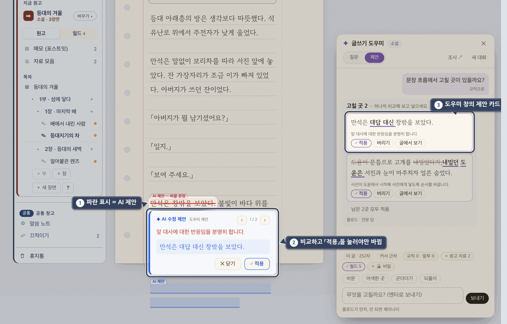
설교 글에서는 「모두 적용」 단추도 숨겼습니다. 하나씩 읽고 하나씩 받아들이라는 뜻입니다.
묵상은 질문만
묵상은 말씀 앞에서 드리는 사람의 기도입니다. 그래서 묵상의 도우미는 「질문만」 합니다. 관찰 질문, 확실한 배경 사실, 맞춤법까지만 돕고 문장은 짓지 않습니다.
시는 짚기만
시는 한 글자, 한 줄 바꿈에 시인의 숨이 있습니다. AI는 소리·이미지·행갈이를 짚는 질문과 관찰까지만 합니다. 시에서는 다듬기·제안의 적용 단추가 없습니다. 고치는 손은 시인의 손입니다.
언어 모델은 "그럴듯한 다음 말"을 아주 잘 만듭니다. 그 재주가 곧 약점입니다. 그럴듯함과 참됨은 다르기 때문입니다. 그래서 좋은 글쓰기 도구는 AI를 앞에 세우지 않고 옆에 둡니다. 사람이 먼저 생각하고, AI는 그 생각을 비추는 거울이 됩니다. 아침 서재가 세 줄과 설계 카드를 먼저 두는 까닭이 여기 있습니다. 순서를 지키면 AI는 생각을 빼앗지 않고 넓혀 줍니다.
기능 지도
아침 서재의 AI 기능을 한 표로 모았습니다. 「✦」 표시가 붙은 단추는 AI를 부르는 단추입니다. 「✎」 표시는 AI 없이 앱이 기계로 세는 기능입니다.
| 기능 | 어디서 | AI가 하는 일 | 사람이 하는 일 |
|---|---|---|---|
| 글쓰기 도우미 · 질문 | 글 쓰는 화면 위 「✦ AI」 → 「질문」 | 지금 글을 함께 보며 묻고 답함. 넣을 문장은 카드로 | 먼저 생각하고 묻기. 「커서 자리에 넣기」를 직접 누르기 |
| 글쓰기 도우미 · 제안 | 같은 창 「제안」 | 고칠 곳을 찾아 「전 → 후」 목록으로 | 하나씩 비교하고 「✓ 적용」 또는 「버리기」 |
| 조사 도우미 | 위 메뉴 「✦ AI」 | 웹을 찾아 출처와 함께 답함 | 「자료 모음에 담기」 뒤 원문을 직접 확인 |
| 다듬기 | 글자를 고르면 뜨는 막대 「✦ 다듬기」 | 고른 곳을 방향대로 고친 안을 보라 바탕·비교 상자로 | 비교해 보고 「✓ 적용」·「✗」·「↻」 중 고르기 |
| 다른 표현 | 「쓰기 ▾」 → 「✦ 다른 표현」 | 뜻은 그대로 두고 결이 다른 후보 4개 | 후보 하나를 고르거나 모두 버리기 |
| 피드백·첨삭 | 「쓰기 ▾」 → 「✦ 피드백·첨삭」, 「다듬기 ▾」 → 「✦ 피드백」 | 갈래 기준 점수(1~5)·강점·약점, 첨삭 최대 8곳 | 파란 「AI 제안」을 하나씩 열어 받아들일지 정하기 |
| 문체 점검 | 「다듬기 ▾」 → 「✎ 문체 점검」 | AI 아님. 앱이 반복어·버릇 말·군더더기 등을 기계로 셈 | 노란 물결을 보고 직접 고치기 |
| 설정 정리 | 「다듬기 ▾」 → 「✦ 설정 정리」(원고 안 글) | 글에 나온 인물·장소·관계를 노트와 견주어 제안 | 넣을 것만 골라 노트에 담기 |
| 설정 점검(소설) | 원고 보기 「설정 점검」 → 「✦ 설정과 대조」 | 노트·장면 정보와 어긋난 곳을 카드로. 고쳐 쓰지 않음 | 그 자리로 가서 직접 고치기 |
| 원고 검토 | 「원고 관리」 → 「원고 검토 받기 (AI)」 | 꼭지마다 짚을 점을 메모로. 본문은 바꾸지 않음 | 메모를 읽고 고칠지 정하기 |
| 규칙 점검 | 설정 → 쓰기 → 「AI가 따를 것 — 규칙·말투」 → 「✦ 규칙 점검」 | 부딪히거나 낡은 규칙을 짚기만 | 규칙을 고치거나 지우기 |
| 맞춤법 AI 뒷검사 | 글 쓰는 화면 「맞춤법」 단추 | 모든 문단을 다시 살펴 밑줄을 보탬 | 밑줄마다 고칠지, 그대로 둘지 정하기 |
| 찬송가·CCM 추천 | 묵상 화면 찬송가 옆 CCM | 본문·찬송가에 맞는 곡을 고름. 유튜브에 실제 있는 곡만 5곡까지 | 들을 곡 고르기, 「다시 고르기」 |
| 주석 요약 | 쓰기 화면 「주석 보기」 → 「요약하기」 | 드라이브 주석의 발췌를 정리 | 원래 주석을 직접 읽고 대조하기 |
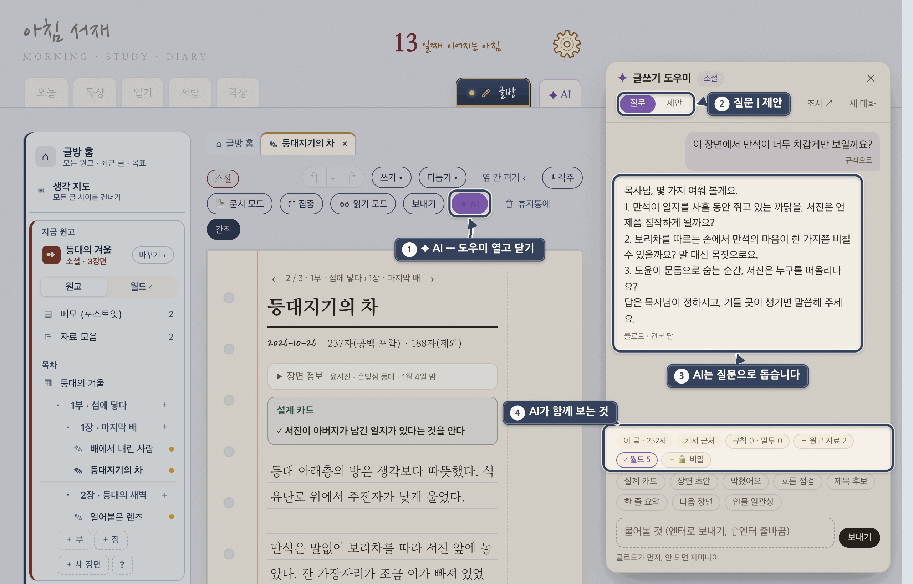
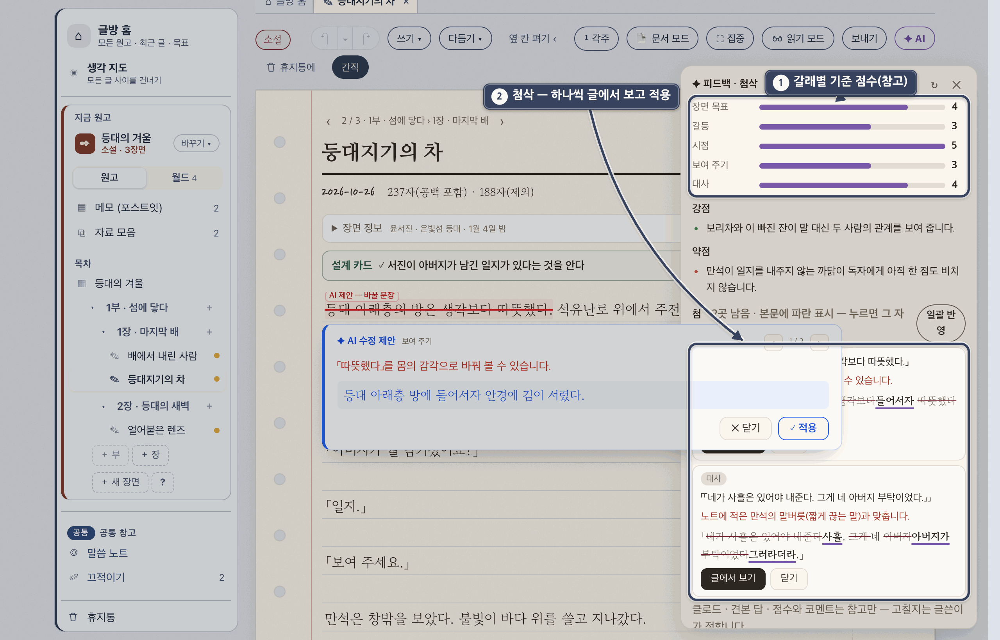
표 밖의 작은 AI 기능
설계 카드의 「✦ AI 카드 초안」은 한 문장 후보를 냅니다. 「검증표」의 「✦ AI로 검증표 만들기」는 글의 사실 주장을 뽑아 웹으로 확인합니다. 「점검 10문항」의 「✦ AI 의견 받기」는 질문마다 예·아니오·모름과 근거 한 줄을 냅니다.
점검 10문항에서는 여러분이 적은 답도 함께 갑니다. AI는 그 답이 글에 실제로 드러나는지 보고, 맞장구치지 않고 근거로 판단합니다. 마지막 질문 「이 글이 먼저 나에게 한 말」은 여러분만 답할 수 있어 「모름」으로 둡니다.
AI는 어디로 가는가
AI 기능은 여러분의 구글 서버를 거쳐 AI 회사로 갑니다. 클로드 열쇠가 있으면 클로드를 먼저 쓰고, 안 되면 제미나이로 이어 갑니다. 열쇠는 「설정 → 바깥 연결 → 주석 서재」에서 넣습니다.
AI가 함께 따를 규칙과 말투 기준은 「설정 → 쓰기 → AI가 따를 것 — 규칙·말투」에 있습니다. 도우미 창에서 여러분이 한 지적 옆 「규칙으로」를 누르면 규칙으로 남습니다. 켜 둔 규칙은 다음 AI 요청마다 함께 갑니다.
AI는 「나를 부르는 호칭」(설정 → 쓰기)으로 여러분을 부릅니다. 다만 독자가 읽을 글에는 그 호칭을 넣지 않습니다.
장점
AI를 잘 쓰면 글쓰기의 여러 고비가 낮아집니다. 막연히 "편해진다"가 아니라, 구체적으로 이런 일이 달라집니다.
빈 종이 앞에서 덜 막힙니다
「막혔어요」를 누르면 다음 생각으로 넘어갈 질문 세 개를 받습니다. 답이 아니라 질문이라, 생각은 여전히 여러분의 것입니다. 묵상에서는 본문으로 돌아가게 하는 질문을 줍니다.
내 글을 다른 눈으로 봅니다
쓴 사람은 자기 글의 빈틈을 잘 못 봅니다. 「✦ 피드백·첨삭」은 갈래마다 다른 기준으로 강점과 약점을 짚습니다. 소설은 구성·인물·개연성, 설교는 본문 충실·한 문장·적용을 봅니다.
자료 찾는 시간이 줄어듭니다
조사 도우미는 웹을 찾아 출처 링크와 함께 답합니다. 클로드를 쓸 때는 답이 실제로 기댄 원문 구절도 함께 옵니다. 「자료 모음에 담기」를 누르면 원고의 자료 창고에 바로 들어갑니다.
내 목소리로 다듬습니다
다듬기는 같은 글의 다른 문단을 문체 견본으로 함께 읽습니다. 말투 기준에 직접 고친 문장을 모아 두면, AI도 그 말투를 따릅니다. 성경 인용은 글자 하나도 바꾸지 않습니다.
실수가 규칙이 되어 쌓입니다
한 번 받은 지적을 「규칙으로」 남기면 다음 글에도 적용됩니다. 같은 실수를 두 번 하지 않게 됩니다. 규칙이 쌓이면 그것이 곧 나만의 글쓰기 책이 됩니다.
길고 복잡한 원고를 지킵니다
장편 소설은 인물·장소·복선이 수십 개입니다. 「✦ 설정 정리」와 「✦ 설정과 대조」는 노트와 어긋난 곳을 찾아 줍니다. 「원고 검토 받기 (AI)」는 꼭지마다 흐름과 되풀이를 짚습니다.
사실 확인이 기록으로 남습니다
「✦ AI로 검증표 만들기」는 연도·인명·인용·원어를 뽑아 확인합니다. 결과는 확인함·추론·확인 못 함으로 나뉘어 표로 남습니다. "AI와 함께 쓴 글의 신뢰는 검증표로 남긴 과정에서 나온다"는 원칙을 따른 것입니다.
한계와 조심할 점
AI는 똑똑해 보이지만 사람처럼 알지 못합니다. 아래 여섯 가지는 꼭 기억해 두세요.
그럴듯한 거짓을 말할 수 있습니다
AI는 없는 책, 없는 인용, 틀린 연도를 자신 있게 말할 때가 있습니다. 이것을 흔히 "환각"이라 부릅니다. 아침 서재가 AI 조사 자료를 늘 「확인 못 함」으로 담는 까닭입니다.
인용문은 반드시 원문을 직접 펴서 확인하세요. 쪽수를 확인하지 못했으면 쪽수 없이 씁니다. 조사 결과를 「커서 자리에 넣기」로 넣으면 「AI 조사 — 원문 확인 필요」 각주가 붙습니다. 이 각주는 원문을 확인한 뒤에 지우세요.
한국어 맞춤법에는 빈틈이 있습니다
AI 맞춤법은 띄어쓰기와 어미에서 틀릴 때가 있습니다. 맞는 말을 틀렸다고 하거나, 틀린 말을 놓치기도 합니다. 중요한 글은 국립국어원 사전 같은 공식 자료로 한 번 더 확인하세요.
시의 일부러 어긴 맞춤법이나 구어체는 그대로 두라고 일러 두었습니다. 그래도 밑줄이 그어지면 「그대로」 두셔도 됩니다.
내 글이 AI 회사로 갑니다
AI 기능을 누르면 그 글이 클로드(앤트로픽)나 제미나이(구글) 서버로 갑니다. 일기, 고백, 다른 사람의 이야기가 담긴 글도 그대로 갑니다. 이것은 작은 일이 아닙니다.
회사가 받은 글을 어떻게 다루는지는 각 회사 약관에 따릅니다. 앱도 맞춤법 AI 뒷검사를 켤 때 "무료 열쇠는 품질 개선에 쓰일 수 있습니다"라고 알립니다. 남에게 보이고 싶지 않은 글이라면 AI 단추를 누르지 않는 것이 가장 안전합니다.
AI와 나눈 대화는 이 기기에만 남고, 드라이브의 기록 파일에는 들어가지 않습니다. 다만 이미 AI 회사로 보낸 글은 이 기기에서 지워도 거기서 지워지지 않습니다.
크레딧은 돈입니다
클로드는 쓴 만큼 돈이 듭니다. 글이 길수록, 검색을 할수록 더 듭니다. 앱은 남은 크레딧을 추정해 도우미 창 아래에 「크레딧 남음 약 $…」로 보여 줍니다. 남은 금액이 1달러 아래로 내려가면 메일로 한 번 알립니다.
추정치라 실제와 다를 수 있습니다. 「설정 → 바깥 연결 → 주석 서재 → 클로드 크레딧」에서 실제 잔액으로 맞출 수 있습니다. 크레딧이 떨어지면 제미나이로 이어지고, 제미나이 무료 한도에 걸리면 한동안 쉬어야 합니다.
같은 질문에도 답이 달라집니다
AI는 같은 질문에도 매번 조금씩 다르게 답합니다. 다듬기의 「↻」를 누르면 다른 안이 나오는 것도 그 때문입니다. 그러니 AI의 한 번 답을 정답으로 여기지 마세요.
피드백 점수도 마찬가지입니다. 점수는 참고일 뿐, 글의 값을 매기는 저울이 아닙니다.
AI는 맞장구치는 경향이 있습니다
AI는 묻는 사람의 생각에 동의하는 쪽으로 기울기 쉽습니다. "이 해석 맞지요?"라고 물으면 "네"라고 답하기 쉽습니다. 그래서 아침 서재는 사람의 생각도 점검 대상으로 삼으라고 AI에게 일러 둡니다.
그래도 질문을 바꾸면 더 좋습니다. "맞지요?" 대신 "이 해석의 약한 곳은 어디입니까?"라고 물어 보세요. 반대로 AI가 지적했다고 무조건 받아들일 것도 없습니다. 무엇을 인정하고 무엇을 지킬지 여러분이 나눕니다.
도구가 글을 대신 쓰게 되면, 글은 빨라지지만 글쓴이는 얇아집니다. 생각하는 근육은 써야 자랍니다. 저작권도 생각해야 합니다. AI가 낸 문장이 어딘가의 글과 닮았을 수 있고, AI가 쓴 부분의 권리는 나라마다 아직 정리 중입니다. 아침 서재는 글마다 AI가 넣은 곳을 기억해 글 머리에 「✦ AI 도움 n곳」으로 보여 줍니다. 누르면 그 자리가 옅은 보라로 보입니다. 내 글 가운데 무엇이 내 것인지 정직하게 아는 일, 그것이 출발입니다.
기대 효과
AI를 원칙대로 쓰면 무엇이 달라질까요. 먼저 한 가지를 분명히 해 둡니다.
작가로 자라는 길 — 대신 써 주지 않고, 더 잘 쓰게 돕습니다
아침 서재의 AI는 여러분을 작가로 키우는 조수입니다. 대신 써 주는 대필자가 아닙니다. AI가 글을 대신 쓰면 원고는 빨리 늘지만, 쓰는 사람은 자라지 않습니다.
그래서 AI는 이런 방식으로 돕습니다.
| AI가 돕는 방식 | 작가에게 자라는 힘 |
|---|---|
| 답보다 질문을 먼저 냄 | 스스로 생각을 이어 가는 힘 |
| 고친 안을 비교 상자로 보여 줌 | 왜 이 문장이 나은지 알아보는 눈 |
| 강점·약점을 근거와 함께 짚음 | 내 글을 남의 눈으로 읽는 힘 |
| 지적을 규칙으로 남김 | 같은 실수를 넘어서는 나만의 원칙 |
| 확인함·추론·확인 못 함을 나눔 | 사실 앞에 정직한 작가의 습관 |
| 직접 쓸 자리를 비켜 감 | 끝내 내 목소리로 쓰는 용기 |
한 달 뒤 AI 없이 쓴 내 문장이 조금 나아졌다면, AI를 바르게 쓴 것입니다. 아침 서재가 바라는 기대 효과는 그것입니다.
처음 쓰는 분과 오래 써 온 분은 얻는 것이 조금 다릅니다.
| 처음 쓰는 분 | 오래 써 온 분 | |
|---|---|---|
| 시작 | 「막혔어요」 질문으로 빈 종이를 넘어섬 | 세 줄·설계 카드로 방향을 먼저 굳혀 고쳐 쓰기가 줄어듦 |
| 짜임 | 「흐름 점검」으로 글이 끊긴 곳을 앎 | 「원고 검토」로 꼭지 사이 되풀이·연결을 봄 |
| 문장 | 「쉽게」·「비문 고치기」로 문장 감각을 배움 | 말투 기준으로 내 목소리를 지키며 다듬음 |
| 사실 | 확인함·추론·확인 못 함을 나누는 습관이 생김 | 검증표로 원어·예화·인용 검증이 기록으로 남음 |
| 성장 | 받은 지적이 규칙이 되어 같은 실수가 줄어듦 | 규칙이 쌓여 자기만의 글쓰기 원칙집이 됨 |
처음 쓰는 분에게
처음에는 AI가 무엇을 고쳤는지 보는 것만으로도 배움이 큽니다. 다듬기 비교 상자에서 지운 곳은 취소선, 바뀐 곳은 굵은 밑줄로 보입니다. "왜 이렇게 바꿨을까"를 한 번씩 생각해 보세요. 그것이 문장 공부입니다.
오래 써 온 분에게
익숙한 분일수록 AI에게 일을 넘기고 싶어집니다. 그럴 때일수록 「모두 적용」 대신 하나씩 받아들이세요. AI를 조수로 두면 품이 줄고, 대필자로 두면 내 글이 사라집니다.
좋은 사용 습관 열 가지
- 먼저 쓰고, 그다음 묻습니다. 세 줄이라도 내 생각을 먼저 적고 「✦ AI」를 엽니다.
- 한 문장을 먼저 확정합니다. 설계 카드의 첫 칸을 정하기 전에는 초안을 청하지 않습니다.
- 하나씩 받아들입니다. 제안은 비교해 보고, 납득한 것만 「✓ 적용」을 누릅니다.
- 인용은 원문으로 확인합니다. AI 조사 자료는 원문을 펴서 확인한 뒤에야 「확인함」으로 바꿉니다.
- 물을 때 반대편도 묻습니다. "맞지요?" 대신 "약한 곳은 어디입니까?"라고 묻습니다.
- 지적은 규칙으로 남깁니다. 마음에 걸린 지적은 「규칙으로」를 눌러 다음 글에도 이어 갑니다.
- 말투 기준을 채웁니다. 내가 직접 고친 좋은 문장을 말투 기준에 모읍니다.
- 네 자리는 비워 두고 직접 씁니다. 도입 첫 문단·고백·결론 마지막 문단·기도문은 내 손으로 씁니다.
- 보내기 전에 「✦ AI 도움 n곳」을 봅니다. AI 문장이 그대로 남은 곳을 한 번 더 내 말로 고칩니다.
- 크레딧을 가끔 살핍니다. 긴 원고 검토나 검색은 꼭 필요할 때만 씁니다.
습관은 한꺼번에 들지 않습니다. 열 가지를 다 지키려 하기보다 첫째와 셋째부터 시작하세요. "먼저 쓰기"와 "하나씩 받아들이기", 이 둘만 몸에 붙어도 나머지는 따라옵니다. 한 달쯤 지나 이 목록을 다시 읽으면 몇 가지가 이미 습관이 되어 있을 것입니다.
쓰지 않는 것이 나은 때
AI는 늘 켜 두는 도구가 아닙니다. 아래와 같은 때는 AI 단추를 누르지 않는 편이 낫습니다.
말씀 앞에 처음 앉을 때
본문을 아직 두 번 읽지 않았다면 AI를 열지 마세요. 배경 설명을 먼저 들으면 본문이 내게 하는 말을 놓치기 쉽습니다. 묵상은 질문만 받을 수 있지만, 그 질문도 내가 먼저 본 뒤가 좋습니다.
고백과 기도를 쓸 때
1인칭 고백과 기도문은 AI가 대신할 수 없는 자리입니다. 서툴러도 내 말이어야 합니다. 이 자리에서 AI는 맞춤법 밑줄 정도면 충분합니다.
남에게 보이고 싶지 않은 글일 때
일기, 상담 내용, 다른 사람의 아픈 이야기가 담긴 글이 있습니다. AI 단추를 누르면 그 글이 AI 회사로 갑니다. 그런 글은 AI 없이 쓰고, 맞춤법 밑줄도 「규칙만」으로 둡니다.
시의 한 줄을 찾을 때
시의 낱말은 시인이 찾아야 합니다. AI에게 시행을 받으면 그 시는 더 이상 내 시가 아닙니다. 소리 내어 읽고, 「행 끝 낱말」 같은 질문으로 짚어 보는 데까지만 쓰세요.
논문 본문을 쓸 때
논문 본문을 AI가 대신 쓰면 연구윤리에 어긋납니다. 그래서 아침 서재는 논문 본문 초안을 받지 않습니다. 연구 질문, 논증 구조, 근거 점검, 표현 다듬기까지만 도움을 받으세요.
지쳐서 빨리 끝내고 싶을 때
피곤할수록 「모두 적용」을 누르고 싶어집니다. 그럴 때는 차라리 글을 덮고 내일 다시 여세요. 간직은 저절로 되니, 쓰던 자리는 그대로 남아 있습니다.
6부지키고 이어 가기
글은 쓰는 것만큼 지키는 것이 중요합니다. 6부에서는 지운 글을 되살리고, 백업을 쓰고, 여러 기기에서 안전하게 이어 쓰는 법을 다룹니다.
1장 휴지통 — 30일 안에 되살리기
한 줄 요약지운 글과 원고는 30일 동안 휴지통에 남습니다.
글 지우기
- 쓰기 화면 옆 칸에서 「휴지통에 넣기」를 누릅니다. 목록에서는 오른쪽 버튼(휴대폰은 길게 누르기) → 「휴지통에」를 누릅니다.
- 확인 창에서 「확인」을 누릅니다.
- 노션에 실린 글이면 노션 페이지도 함께 노션 휴지통으로 옮깁니다.
원고는 「글방 → 원고 관리 ▾ → 휴지통에」를 누릅니다. 서랍의 원고 카드나 오른쪽 버튼 메뉴의 「휴지통에」도 같습니다.
- 「원고만 휴지통에」를 고르면 원고에 든 글은 서랍에 그대로 남습니다.
- 「원고와 꼭지 글 ○편 모두 휴지통에」를 고르면 글도 함께 들어갑니다.
- 다른 원고에도 들어 있는 글은 지우지 않습니다.
- 되살리면 차례·부·장·자료·목표도 그대로 돌아옵니다.
되살리기
- 위 메뉴 「서랍」 → 「휴지통」을 누릅니다.
- 글마다 「○일 뒤 완전히 지워짐」이 보입니다.
- 「되살리기」를 누릅니다. 원고는 「휴지통 · 원고」 칸에 있습니다.
- 글은 서랍·달력에 다시 나타납니다. 원고 안의 글은 원래 자리로 돌아갑니다.
- 노션 페이지도 노션 휴지통에서 꺼내 같은 페이지를 그대로 씁니다.
완전히 지우기
- 「완전히 지우기」를 누르면 되살릴 수 없습니다.
- 앱은 「지웠다는 표시」를 남깁니다. 그래서 다른 기기의 옛 사본과 합쳐져도 지운 글이 되살아나지 않습니다.
- 30일이 지난 글은 저절로 이렇게 정리됩니다.
옛 관청은 문서를 버리기 전에 일정 기간 따로 묶어 두었습니다. 지운 뒤에야 그 문서가 필요하다는 것을 알게 되는 일이 많았기 때문입니다. 30일은 마음을 바꿀 넉넉한 시간입니다.
기대 효과
실수로 지워도 당황하지 않습니다. 지우기를 망설이지 않으니 서랍이 가벼워집니다.
작은 팁·주의
- 원고 목록에서 원고가 통째로 안 보이면, 먼저 「서랍 → 휴지통」의 「휴지통 · 원고」를 보세요.
2장 백업 — 구글 백업과 PC 폴더 백업
한 줄 요약기록 전체의 사본이 날마다 구글 드라이브에 남고, PC에도 한 벌 더 남길 수 있습니다.
길「톱니(설정) → 기록 지키기 → 자동 백업 · 간직된 곳」
구글 백업(모든 기기)
- 드라이브 「아침 서재/백업」 폴더에 기록 전체의 사본이 남습니다.
- 날마다 새벽 4시 무렵, 그리고 그날 첫 저장 때 남깁니다.
- 최근 60개와 달마다 첫 사본은 오래 둡니다.
- 「자동 백업 켜짐」 도장이 보이면 정상입니다. 「지금 구글에 백업」으로 바로 한 벌 남길 수 있습니다. 「백업 폴더 열기 ↗」로 폴더를 봅니다.
PC 폴더 백업(크롬·엣지)
- 「PC 백업 폴더 고르기」를 누릅니다.
- 문서 폴더 안 「아침서재 백업」 같은 폴더를 고릅니다.
- 앱을 열어 두면 30분마다
아침서재-백업-날짜.json파일을 새로 씁니다. - 최근 30일과 달마다 첫 파일을 남깁니다.
- 브라우저를 다시 열면 「허락 필요」가 뜰 수 있습니다. 「허락하기」를 한 번 누릅니다.
- 휴대폰·태블릿은 구글 백업만 합니다.
- 폴더 기능이 없는 브라우저에서는 「지금 내려받기」로 파일을 받습니다.
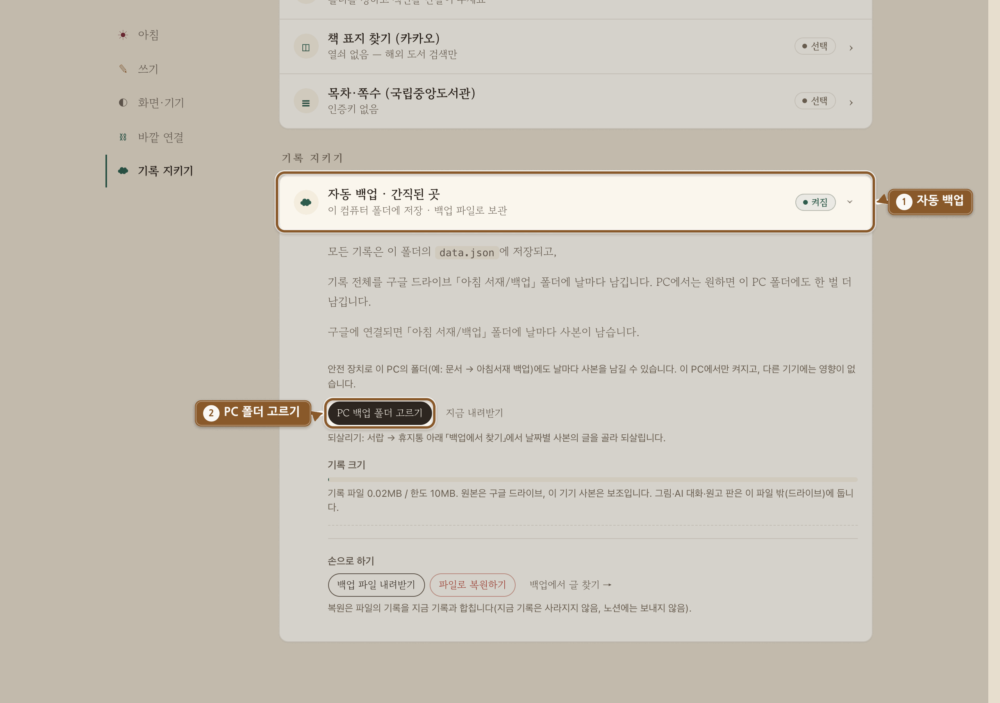
손으로 하기
| 단추 | 하는 일 |
|---|---|
| 「백업 파일 내려받기」 | 지금 기록 전체를 파일 하나로 받습니다 |
| 「파일로 복원하기」 | 백업 파일을 지금 기록과 합칩니다. 지금 기록은 사라지지 않고, 노션에는 보내지 않습니다 |
| 「백업에서 글 찾기 →」 | 「서랍 → 휴지통」 아래 「백업에서 찾기」로 갑니다 |
사본에서 글 찾기
휴지통에도 없는 글은 날짜별 사본에서 찾습니다.
- 「서랍 → 휴지통」 맨 아래 「백업에서 찾기」 → 「백업 목록 보기」를 누릅니다.
- 날짜를 고릅니다. 사본마다 「○월 ○일 ○○:○○ 무렵의 기록」처럼 뜬 시각이 보입니다.
- 「지금 서랍에 없는 글」 목록이 나옵니다.
- 되찾을 글의 「이 글 되살리기」를 누릅니다. 휴지통에 있는 글이면 「휴지통에서 되살리기」가 보입니다.
사본 전체 합치기
여러 글을 한꺼번에 되찾을 때 씁니다.
- 위처럼 날짜를 고릅니다.
- 「이 사본 전체를 지금 기록과 합치기」를 누릅니다.
- 합치기 전 지금 기록을 「되살리기전」 사본으로 따로 남깁니다.
- 지금 없는 글·원고·노트·끄적임·일기를 되찾습니다. 같은 것은 더 나중에 고친 쪽이 남습니다.
- 일부러 지운 것은 되살아나지 않습니다. 노션에는 아무것도 보내지 않습니다.
기록을 지키는 오랜 원칙은 「세 벌, 두 곳, 하나는 멀리」입니다. 아침 서재는 원본(드라이브), 날마다 사본(드라이브 백업), PC 폴더 사본을 갖출 수 있습니다. PC 백업까지 켜 두면 이 원칙에 가까워집니다.
기대 효과
오늘 실수해도 어제 아침의 기록으로 돌아갈 길이 있습니다. 합치기는 지금 기록을 지우지 않으니 겁내지 않고 씁니다.
작은 팁·주의
- 저장이 없는 날에도 새벽 백업을 남기려면 구글 쪽 시계가 놓여 있어야 합니다. 앱이 「turnOnAutoBackup」 실행을 안내하면 따라 주세요.
3장 여러 기기에서 쓰기와 합치기
한 줄 요약휴대폰과 컴퓨터가 같은 기록을 쓰고, 겹치면 앱이 합칩니다.
이렇게 움직입니다
- 앱을 열면 지난번 사본으로 화면을 먼저 보입니다.
- 뒤에서 구글의 최신 기록을 받아 옵니다. 받기 전에는 구글로 보내지 않습니다.
- 다른 기기 기록이 새로 있으면 합치고 「다른 기기에서 쓴 기록과 합쳤습니다」를 띄웁니다.
- 오래 열어 둔 화면도 다시 앞으로 꺼내면 최신 기록을 확인합니다.
같은 글을 두 기기에서 고쳤을 때
- 쓰는 화면에 「다른 기기에서 이 글이 바뀌었습니다」 알림이 뜹니다.
- 이때 저절로 간직은 멈춥니다.
- 「간직」을 누르면 지금 화면의 글로 바뀌고, 다른 기기 판은 「이전 판」에 남습니다.
- 그러니 어느 쪽 글도 사라지지 않습니다. 쓰기 화면 옆 칸 「이전 판」에서 비교해 되돌릴 수 있습니다.
합치는 규칙(쉬운 말로)
- 글마다 더 나중에 고친 쪽이 남습니다.
- 설정은 칸마다 나중에 바꾼 쪽을 따릅니다.
- 지웠다는 표시가 있는 것은 되살리지 않습니다.
여러 사람이 한 책을 옮길 때는 「누가 언제 고쳤는지」가 남아야 다툼이 없습니다. 아침 서재는 한 사람이 여러 기기로 쓰는 경우를 같은 원리로 다룹니다. 고친 시각이 판정의 기준입니다.
기대 효과
출근길 휴대폰으로 쓴 묵상을 저녁에 컴퓨터로 이어 씁니다. 기기를 바꿀 때 파일을 옮기지 않습니다.
작은 팁·주의
- 한 글을 두 기기에서 동시에 열어 두지 않는 것이 가장 깔끔합니다.
4장 이전 판·이름 붙인 판·원고 판
한 줄 요약글 하나의 옛 모습, 이름 붙여 남긴 모습, 원고 전체의 모습을 따로 지킵니다.
| 종류 | 무엇을 | 몇 개 | 어디서 |
|---|---|---|---|
| 이전 판 | 봉인으로 간직할 때 바로 앞 본문 | 3개(저절로) | 쓰기 화면 옆 칸 「이전 판 n개」 |
| 이름 붙인 판 | 사람이 고른 순간의 글 하나 | 10개까지 | 쓰기 화면 옆 칸 「이름 붙인 판 n개」 |
| 원고 판 | 원고 전체(차례·부와 장·머리말·본문) | 남기는 만큼 | 「글방 → 원고 관리 ▾ → 원고 판」 |
이름 붙인 판
- 쓰기 화면 옆 칸에서 「이름 붙인 판 n개」를 펼칩니다.
- 「지금 판 남기기」를 누르고 이름을 적습니다(예: 「출판사 보내기 전」).
- 나중에 「지금과 비교」로 차이를 보고, 「이 판으로」로 불러옵니다.
- 불러온 글은 간직해야 확정됩니다. 지금 글은 이전 판으로 남습니다.
원고 판
- 글방에서 원고를 열고 「원고 관리 ▾」를 누릅니다.
- 「원고 판 (전체 남기기·비교)」을 누릅니다.
- 「지금 원고를 판으로 남기기」를 누르고 이름을 붙입니다.
- 목록에서 「지금과 비교」나 「이 판으로 원고 전체 되살리기」를 고릅니다.
- 원고 판은 드라이브 「아침 서재/원고 판」 폴더에 파일로 따로 담깁니다. 기록 파일을 무겁게 하지 않습니다.
- 원고의 「찾아 바꾸기」를 하면 바꾸기 전에 원고 판을 저절로 남깁니다.
- 비교 화면은 낱말 단위로 보여 줍니다. 지운 곳은 판에 있던 글, 밑줄은 지금 글입니다.
원고는 2고, 3고를 거치며 자랍니다. 좋은 편집자는 지난 고를 버리지 않습니다. 지운 문장이 나중에 돌아올 자리를 찾기도 하니까요.
기대 효과
과감하게 고칠 수 있습니다. 언제든 「출판사 보내기 전」 모습으로 돌아갈 수 있기 때문입니다.
작은 팁·주의
- 이름 붙인 판이 10개면 더 남지 않습니다. 하나를 「지우기」한 뒤 남깁니다.
- 원고 판은 구글 서버에 닿아야 쓸 수 있습니다.
5장 노션 보내기와 되살리기
한 줄 요약노션에는 묵상만 저절로 가고, 나머지는 「보내기」를 눌렀을 때만 갑니다.
| 무엇 | 노션으로 |
|---|---|
| 묵상 | 간직할 때 저절로(「묵상은 간직할 때 노션에 자동으로 싣기」를 켰을 때) |
| 설교초안·글방 글 | 「보내기 → 노션」 또는 봉인 아래 「노션에 보내기」를 누를 때만 |
| 밑줄·책(독서 목록) | 저절로 |
| 독후감 | 「노션 독서 노트로 보내기」를 누를 때 |
보내기
- 쓰기 화면 도구 줄의 「보내기」를 누릅니다.
- 「보내기 · 가져오기」 창의 「어디로」에서 노션을 고릅니다.
- 「무엇을」에서 「이 글」(원고면 「원고 전체」·「완성만」·「고르기」)을 고릅니다.
- 「보내기」를 누릅니다. 이미 보낸 글은 노션의 같은 페이지를 고칩니다.
- 보낸 뒤 고치면 「그 뒤 고친 것이 노션에는 아직 없음」이 보입니다. 「노션에 다시 보내기」로 맞춥니다.
- 노션에 못 간 글이 있으면 「서랍」에 「모두 다시 보내기」가 뜹니다.
되살리기
- 앱에서 글을 지우면 노션 페이지도 노션 휴지통으로 갑니다.
- 앱 휴지통에서 「되살리기」를 하면 노션 페이지도 꺼내 같은 페이지를 다시 씁니다. 중복 페이지가 생기지 않습니다.
- 노션에서 꺼내지 못하면 글에 그 사실이 적힙니다. 노션 휴지통에서 직접 복원하거나 「노션에 다시 보내기」를 누릅니다.
원고를 서랍에서 꺼내 세상에 보낼 때는 스스로 정한 때가 있어야 합니다. 자동으로 다 보내면 덜 익은 글까지 나갑니다. 묵상만 저절로 가고 나머지는 직접 보내는 이유입니다.
기대 효과
노션에는 다듬어 보낸 글만 쌓입니다. 앱에서 지우고 되살려도 노션이 어지러워지지 않습니다.
6장 개인정보와 안전
한 줄 요약기록은 내 구글 드라이브에, 열쇠는 내 구글 서버와 내 기기에만 둡니다.
열쇠 관리
| 열쇠 | 어디에 있나 | 주의 |
|---|---|---|
| 연결 열쇠(QR·연결 링크) | 연결한 기기 안 | 남에게 보이거나 보내지 않습니다 |
| 노션·AI·유튜브·카카오 열쇠 | 내 구글 서버의 비공개 보관함 | 넣은 뒤에는 화면에 다시 보이지 않습니다 |
- 열쇠를 바꾸려면 같은 칸에 새 열쇠를 넣고 「저장」을 누릅니다.
연결 끊기
기기를 잃어버렸거나 남에게 넘길 때 씁니다.
- 그 기기에서 「톱니 → 화면·기기 → 다른 기기 연결」을 엽니다.
- 「다른 기기 연결하기 (QR 보기) · 연결 끊기」를 펼칩니다.
- 「이 기기 연결 끊기」를 누르고 확인합니다.
- 기록은 구글 드라이브에 그대로 남습니다.
그 기기를 손에 쥘 수 없다면, 앱스 스크립트 편집기에서 resetKey를 실행해 열쇠를 새로 만듭니다. 그러면 예전 열쇠를 가진 모든 기기가 끊기고, 쓰는 기기만 다시 연결하면 됩니다.
AI에 무엇이 가나
- 글은 AI 단추(요약·맞춤법·도우미 등)를 누를 때만 AI 회사로 보내집니다.
- 맞춤법 밑줄을 「규칙 + 인공지능」으로 켜면 바뀐 문단이 그때마다 보내집니다.
- 무료 열쇠는 그 회사의 품질 개선에 쓰일 수 있습니다(각 회사 약관).
- AI 도우미와 나눈 대화는 이 기기에만 남고, 기록 파일에는 넣지 않습니다.
안전은 자물쇠의 세기보다 열쇠를 다루는 습관에서 나옵니다. 열쇠가 든 링크를 단톡방에 올리는 순간, 가장 튼튼한 자물쇠도 소용없습니다. 열쇠는 내 손에만, 이것 하나가 원칙입니다.
기대 효과
기기를 잃어도 기록은 드라이브에 남고, 연결만 끊으면 됩니다. 무엇이 밖으로 나가는지 알고 씁니다.
7장 인터넷이 끊겼을 때
한 줄 요약끊겨도 화면이 열리고, 쓴 글은 이 기기에 두었다가 다시 이어지면 구글로 보냅니다.
이렇게 됩니다
- 인터넷이 없어도 앱 화면은 열립니다. 화면만 이 기기에 두기 때문입니다.
- 쓴 글은 이 기기 사본에 담깁니다.
- 구글로 못 보냈으면 「구글 드라이브에 저장하지 못했습니다. 잠시 뒤 저절로 다시 보냅니다」가 뜹니다.
- 인터넷이 돌아오면 밀린 것을 저절로 보냅니다.
끊겨 있으면 안 되는 것
- AI 기능 전부(「구글 서버에 닿아야 AI를 쓸 수 있습니다」)
- 노션 보내기·가져오기
- 매일성경 본문 받아 오기, 원고 판, 백업 목록
길 위의 순례자는 마을이 없어도 노트에 적습니다. 마을에 닿으면 편지를 부칩니다. 끊긴 길에서도 쓰기를 멈추지 않게 하는 것, 그것이 이 장치의 뜻입니다.
기대 효과
비행기나 지하철에서도 묵상과 원고를 이어 씁니다. 연결이 돌아오면 따로 할 일이 없습니다.
작은 팁·주의
- 끊긴 채 두 기기에서 같은 글을 고쳤다면, 다시 이어질 때 3장의 규칙대로 합쳐집니다.
부록
30일 시작 계획
이 계획은 「작가의 30일」입니다. 묵상으로 한 문장을 붙들고, 독서로 남의 문장을 배우고, 일기로 오늘의 장면을 남기고, 글방에서 그것을 엮습니다. 네 가지가 하나의 길로 이어집니다.
아침 서재의 메뉴는 많습니다. 한꺼번에 다 익히려 하면 지칩니다. 한 주에 한두 메뉴씩, 날마다 10~20분만 쓰는 계획을 소개합니다.
한눈에 보기
주차별 연습표
| 주 | 쓸 메뉴 | 날마다 할 일(10~20분) | 작가에게 남는 것 | 이번 주 목표 |
|---|---|---|---|---|
| 1주 (1~7일) | 「오늘」·「묵상」 | 오늘 본문 읽기 → 묵상 틀에 세 줄 이상 쓰기 → 세 가지 체크 | 한 문장을 오래 붙드는 힘 | 이어서 쓴 날 7일 |
| 2주 (8~14일) | 「일기」·「책장」 더하기 | 묵상 + 일기 한 줄, 또는 책 몇 쪽 읽고 밑줄 하나 | 장면을 보는 눈, 좋은 문장의 귀 | 읽는 책 한 권을 책장에 올리기 |
| 3주 (15~21일) | 「글방」에 작은 원고 | 묵상·일기·밑줄에서 한 줄 골라 글방 원고에 짧은 글로 | 흩어진 생각을 글로 엮는 손 | 작은 원고에 글 다섯 편 |
| 4주 (22~30일) | 갈래 하나 정해 한 편 | 세 줄 → 설계 카드 → 초안 → 다듬기 | 한 편을 끝내 본 작가의 경험 | 한 편 완성해 「보내기」 |
1주 — 오늘과 묵상만
첫 주에는 「오늘」과 「묵상」 두 메뉴만 씁니다. 「오늘」에서 날마다 하는 세 가지(성경 읽기·묵상·책 읽기)를 봅니다. 위 메뉴 「묵상」으로 가서 오늘 본문을 읽고, 「틀 넣기」로 묵상 틀을 넣습니다.
틀의 칸을 다 채우지 않아도 됩니다. 「본문 — 마음에 머문 구절」 한 칸만 채워도 그날의 묵상입니다. 손을 3초 쉬면 저절로 간직되니, 다 쓰면 그냥 닫으셔도 됩니다.
이 주에는 AI를 열지 않는 것을 권합니다. 본문 앞에 혼자 앉는 감각을 먼저 몸에 익히기 위해서입니다.
2주 — 일기와 책장 더하기
둘째 주에는 묵상을 이어 가며 「일기」나 「책장」 하나를 더합니다. 일기는 하루 한 줄이면 충분합니다. 달력에서 날짜를 골라 씁니다. 책장에는 지금 읽는 책을 올리고, 마음에 남은 문장에 밑줄을 남깁니다.
둘을 다 하려 하지 마세요. 하루는 일기, 하루는 책, 이렇게 번갈아도 좋습니다.
작가에게 일기는 장면 공책이고, 밑줄은 문장 공책입니다. "오늘 무엇을 보았나", "이 문장은 왜 좋은가"를 한 줄씩 남겨 두세요. 셋째 주에 글감이 됩니다.
3주 — 글방에 작은 원고
셋째 주에는 위 메뉴 「글방」에 들어가 「＋ 새 원고」를 만듭니다. 가제는 가볍게 정합니다. 예를 들면 「아침에 붙잡은 한 줄」 같은 것입니다. 원고 성격은 「자유 글」이나 「신앙 에세이」처럼 부담 없는 것으로 고릅니다.
날마다 짧은 글 하나를 이 원고에 넣습니다. 묵상에서 붙잡은 문장, 일기에 남긴 장면, 책에서 그은 밑줄 가운데 하나를 골라 조금 늘려 씁니다. 묵상과 독서와 일기가 글이 되는 순간을 여기서 처음 맛보게 됩니다. 이 주부터 「✦ AI」의 「질문」을 한두 번 써 봅니다. 「막혔어요」나 「흐름 점검」이 좋습니다.
4주 — 갈래 하나, 한 편 완성
마지막 주에는 갈래 하나를 정해 한 편을 끝까지 씁니다. 설교초안, 신앙 에세이, 짧은 소설, 무엇이든 좋습니다. 순서는 이 책 5부에서 말한 그대로입니다.
- 「내가 받은 것 세 줄」을 먼저 적습니다.
- 「설계 카드」에서 한 문장을 정하고 「확정」을 누릅니다.
- 초안을 씁니다. 직접 쓸 자리는 내 손으로 씁니다.
- 「✦ 다듬기」와 「맞춤법」으로 고칩니다.
- 「보내기」에서 PDF나 워드로 내보냅니다.
한 편을 끝내면 받은 지적 하나를 「규칙으로」 남겨 두세요. 다음 한 달은 그 규칙과 함께 시작됩니다.
이 주에도 아침 묵상과 밑줄 하나는 이어 갑니다. 글을 쓰는 동안에도 작가는 읽고, 묵상하고, 하루를 적습니다. 네 가지가 함께 돌아갈 때 쓰는 힘이 마르지 않습니다.
습관 만들기에서 가장 큰 적은 "오늘 빼먹었으니 끝났다"는 생각입니다. 하루를 놓쳐도 다음 날 다시 앉으면 됩니다. 그래서 이 계획은 분량보다 날수를 목표로 둡니다. 10분짜리 서른 날이 세 시간짜리 하루보다 오래 남습니다. 4주가 끝났을 때 손에 남는 것은 글 한 편이 아니라, 날마다 앉는 몸입니다.
소모임에서 함께 쓰기
아침 서재는 한 사람이 자기 구글 드라이브에 연결해 쓰는 개인용 앱입니다. 여러 사람이 한 원고를 함께 고치는 기능은 없습니다. 그래서 소모임에서는 "각자 쓰고, 내보내서 나누는" 방식으로 씁니다.
나누는 길
아침 서재에서 글을 바깥으로 내보내는 길은 「보내기」입니다. 글 쓰는 화면이나 「원고 관리」에서 「보내기」를 누르면 「보내기 · 가져오기」 창이 열립니다. 「어디로」에서 노션, PDF, 워드, 마크다운, 텍스트 가운데 하나를 고릅니다.
| 나누는 방식 | 고르는 곳 | 소모임에서 쓰기 좋은 때 |
|---|---|---|
| 「어디로」 → PDF (A5 책 / A4 원고) | 인쇄해 나눠 읽을 때, 단톡방에 파일로 올릴 때 | |
| 워드 | 「어디로」 → 워드 (.docx) | 다른 사람이 고쳐서 돌려줄 때 |
| 노션 | 「어디로」 → 노션 | 모임이 노션 페이지로 글을 모을 때 |
| 텍스트 | 「어디로」 → 텍스트 | 메시지에 바로 붙여 넣을 때 |
노션 페이지를 다른 사람과 공유하는 일은 노션에서 따로 합니다. 아침 서재는 내 노션까지만 보냅니다.
교회 소그룹 — 묵상 나눔
아침 서재의 「묵상」은 매일성경 본문을 보여 줍니다. 모임 사람들이 같은 본문으로 묵상하기 좋습니다.
- 각자 아침에 「묵상」에서 오늘 본문으로 묵상을 씁니다.
- 모이기 전에 나눌 한 단락만 고릅니다. 다 나누지 않아도 됩니다.
- 「보내기」 → 텍스트나 PDF로 그 글을 내보내 나눕니다.
- 모임에서는 소리 내어 읽고, 들은 사람은 마음에 남은 낱말 하나를 말합니다.
설교를 준비하는 분은 강단용 PDF와 「읽기 모드」를 쓸 수 있습니다. 읽기 모드는 글을 고칠 수 없게 하고 보기만 합니다. 화면을 함께 보며 읽기에 좋습니다.
독서 모임 — 밑줄과 독후감
- 모두 같은 책을 각자의 「책장」에 올립니다.
- 읽으며 마음에 남은 문장에 밑줄을 남깁니다. 책마다 「이 책 밑줄」로 모아 볼 수 있습니다.
- 모임 전에 밑줄 셋과 질문 하나를 골라 둡니다.
- 다 읽은 뒤 독후감을 씁니다. 「독후감 간직 → 노션 독서 노트」로 노션에도 남길 수 있습니다.
밑줄은 같은 책에서도 사람마다 다릅니다. "왜 이 문장에 밑줄을 그었나요?"라는 물음 하나로 모임 시간이 넉넉해집니다.
글쓰기 모임 — 원고를 돌려 읽기
- 각자 「글방」에 원고를 만들고 한 편씩 씁니다.
- 「보내기」 → PDF의 A4 원고나 워드로 내보내 돌려 읽습니다.
- 읽은 사람이 워드 파일에 고친 곳이나 의견을 적어 돌려줍니다.
- 글쓴이는 「보내기 · 가져오기」 창의 「워드 교정본과 비교」로 엽니다.
- 지금 글과 교정본이 나란히 뜨면, 받아들일 고침만 골라 「고른 고침 반영」을 누릅니다.
고친 곳을 받아들일지는 끝까지 글쓴이가 정합니다. AI의 제안을 대하는 원칙과 같습니다. 동료의 제안도 고르는 것은 글의 주인입니다.
서로의 글을 대하는 예절
- 먼저 들은 것을 말합니다. 고칠 점보다 "이 글에서 내게 남은 것"을 먼저 말합니다.
- 맞장구도, 깎아내림도 아닙니다. 큰 방향 → 맞는 점(근거와 함께) → 다듬을 점(왜 그런지) → 바꿔 볼 문장, 이 순서로 말합니다.
- 비교할 때 한쪽을 낮추지 않습니다. "누구 글이 더 낫다" 대신 "나란히 놓으니 이 점이 선명해진다"고 말합니다.
- 고백은 모임 안에 둡니다. 묵상과 에세이의 고백은 그 자리에서 듣고 밖으로 옮기지 않습니다.
- 남의 글을 AI에 넣지 않습니다. 동료의 글을 AI에 넣으면 그 글이 AI 회사로 갑니다. 글쓴이에게 먼저 묻습니다.
- AI 도움을 밝힐지 미리 정합니다. 모임에서 AI를 쓴 글을 어떻게 밝힐지 처음에 함께 정해 둡니다.
- 고칠지는 글쓴이가 정합니다. 의견을 냈으면 거기까지입니다. 받아들이지 않아도 서운해하지 않습니다.
좋은 합평은 글을 고치는 자리이기 전에, 글쓴이가 다시 쓰고 싶어지게 하는 자리입니다. 지적이 많아도 마음이 꺾이면 다음 글은 오지 않습니다. 그래서 "먼저 들은 것을 말하기"가 첫째 예절입니다. 내 글이 누군가에게 닿았다는 것을 안 사람은, 고칠 점도 기쁘게 듣습니다.
단축키 모음
맥은 ⌘, 윈도는 Ctrl을 씁니다. 앱 어디서나 ? 키를 누르면 「키보드로 쓰기」 안내가 뜹니다(글 칸 밖에서).
| 어디서 | 키 | 하는 일 |
|---|---|---|
| 어디서나(글 칸 밖) | ? |
단축키 안내 「키보드로 쓰기」 |
| 한 줄 칸 | 엔터 | 그 칸의 확인 단추(원고 만들기·저장·찾기 등). 노션처럼 밖으로 보내는 단추는 누르지 않음 |
| 쓰기 화면 제목 칸 | 엔터 | 본문으로 내려가기 |
| 여러 줄 칸(메모·각주·노트·자료) | ⌘ + 엔터 | 간직 |
| 모든 글 칸 | ⌘ + S | 간직 |
| 창·상자 | Esc | 맨 위 창·상자 닫기(쓴 것은 간직하고 닫음), 집중 모드 나가기 |
| 쓰기 화면 | ⌘ + E | 읽기 모드 ↔ 다시 쓰기 |
| 쓰기 화면 본문 | ⇧ + 엔터 | 성경 구절 줄 → 본문 넣기 |
| 글 칸 | ⌘ + Z | 되돌리기(도구 막대 ↶, ▾ 목록으로 여러 걸음) |
| 글 칸 | ⇧⌘Z · ⌘Y (윈도 Ctrl+Y · Ctrl+Shift+Z) | 다시 실행(↷) |
| 글 칸 | ⌘ + B / ⌘ + I / ⌘ + U | 굵게 / 기울임 / 밑줄 |
| 쓰기 화면 본문 | ⌘ + ⇧ + F | 각주 달기(고른 글 뒤, 아니면 커서 자리) |
| 쓰기 화면 본문 | ⌘ + ⇧ + E | 미주 달기 |
| 원고 안의 글 | ⌥ + ↑ / ⌥ + ↓ | 앞 글 / 다음 글로 넘기기 |
| 자료 모음 | N | 새 자료 |
| 자료 고치는 중 | ⌘ + S · ⌘ + 엔터 | 간직 |
| 일기장 | ← → | 앞날 / 다음 날 |
| 슬라이드 크게 보기 | ← → | 앞뒤 슬라이드 |
| 목록·글 칸 | 오른쪽 클릭 | 글·원고·책·슬라이드·글 칸·성경 절 메뉴(⇧ 누르면 브라우저 메뉴) |
| 휴대폰 목록 | 길게 누르기 | 오른쪽 클릭과 같은 메뉴 |
- AI 대화 칸만은 엔터가 「보내기」, ⇧엔터가 줄바꿈입니다.
용어 풀이
| 낱말 | 뜻 |
|---|---|
| 간직 | 앱에서 「저장」을 부르는 말. 글·기록을 담는 단추는 모두 「간직」입니다. 열쇠 같은 설정값은 「저장」이라 부릅니다 |
| 봉인 | 쓰기 화면 옆 칸의 밀랍 도장 단추. 누르면 간직합니다 |
| 저절로 간직 | 손을 3초 쉬면 앱이 알아서 간직하는 것 |
| 기록 파일 | 구글 드라이브 「아침 서재」 폴더의 data.json. 모든 글의 원본 |
| 이 기기 사본 | 기기 안에 남는 보조 사본. 끊겼을 때 이어 쓰게 해 줍니다 |
| 판 번호 | 기록 파일을 고칠 때마다 오르는 번호. 다른 기기 글을 덮지 않게 해 줍니다 |
| 지웠다는 표시 | 완전히 지운 글에 남기는 표시. 옛 사본과 합쳐도 되살아나지 않게 합니다 |
| 휴지통 | 지운 글·원고가 30일 머무는 곳(「서랍 → 휴지통」) |
| 백업 사본 | 드라이브 「아침 서재/백업」에 날마다 남는 기록 전체의 사본 |
| 연결 링크·QR | 다른 기기를 내 기록에 잇는 열쇠가 든 링크. 남에게 주지 않습니다 |
| 열쇠 | 노션·AI·유튜브 같은 바깥 서비스를 쓰는 비밀 번호 |
| 크레딧 | 클로드 AI를 쓰는 데 드는 돈. 앱이 남은 금액을 추정해 보여 줍니다 |
| 서랍 | 쓴 글을 모두 모아 보는 곳. 찾기·거르기·원고·휴지통이 있습니다 |
| 글방 | 책 원고를 쓰는 작업실 |
| 원고 | 책 한 권이 될 글 묶음. 설교집·신앙 에세이·소설·시집·자기계발서·논문·자유 글 일곱 성격이 있습니다 |
| 꼭지 | 원고 속 글 한 편. 원고 성격에 따라 장면·화·편·절·설교 등으로 부릅니다 |
| 칸(부·장) | 원고 목차의 묶음 자리. 글을 담는 서랍이 아니라 차례의 칸입니다 |
| ■ 소제목 | 글 한 편 안의 작은 제목 줄 |
| 각주·미주 | 쪽 아래에 다는 주(각주, 번호 1·2…)와 책 끝에 모으는 주(미주, i·ii…) |
| 노트 | 인물·장소·주제 등을 적는 카드. 원고마다 자기 노트가 있습니다 |
| 말씀 노트 | 어느 원고에도 속하지 않은 공통 노트 창고 |
| 월드 | 소설 원고의 노트 창고(배경·종류별 목록·정리 규칙). 소설 밖에서는 「노트」로 보입니다 |
| 자료 모음 | 원고의 바깥 근거를 출처와 함께 모으는 창고 |
| 끄적이기 | 떠오른 생각을 포스트잇처럼 적어 두는 판 |
| 이전 판 | 봉인할 때 저절로 남는 바로 앞 본문(3개) |
| 이름 붙인 판 | 사람이 이름 붙여 남긴 글의 모습(10개까지) |
| 원고 판 | 원고 전체를 드라이브에 파일로 떠 둔 것 |
| 원고지 매수 | 200자 원고지(20×10칸)로 셈한 분량. 원고지 쓰는 법(문단 첫 칸 비우기 등)을 따릅니다 |
| 설계 카드 | 초안 전에 「이 글이 말할 한 문장」 등을 사람이 정하는 카드 |
| 네 자리 | 도입 첫 문단·1인칭 고백·결론 마지막 문단·기도문. AI가 덮지 못하는 사람의 자리 |
| 도움말 모드 | 단추에 마우스를 올리면 쓰임새 카드가 뜨는 설정 |
| 호칭 | 앱과 AI가 여러분을 부르는 말(기본 「목사님」) |
막힐 때
-
「✓ 간직됨」이 안 보이고 저장이 안 되는 것 같아요. 「구글 드라이브에 저장하지 못했습니다. 잠시 뒤 저절로 다시 보냅니다」가 떴다면 인터넷을 확인하세요. 글은 이 기기 사본에 남아 있고, 연결되면 저절로 갑니다. 「설정 → 기록 지키기」 맨 위 줄이 「구글 드라이브 「아침 서재」 폴더」를 가리키는지도 봅니다. 「지금은 브라우저에만 저장되고 있습니다」라면 이 기기가 연결되지 않은 것입니다(1부 2장).
-
다른 기기에서 쓴 글이 안 보여요. 두 기기가 같은 구글 서버에 연결되었는지 봅니다. 「설정 → 화면·기기 → 다른 기기 연결」에 「이 기기 연결됨」이 보여야 합니다. 앱을 한 번 내렸다가 다시 열면 최신 기록을 받아 옵니다. 다른 기기에서 아직 간직되지 않았을 수도 있습니다.
-
「다시 연결해 주세요」 화면이 떠요. 열쇠가 바뀌었거나 맞지 않습니다. 연결된 다른 기기의 QR이나 「연결 링크 복사」로 다시 잇습니다.
-
AI 단추를 누르면 「열쇠를 넣어 주세요」가 떠요. 「설정 → 바깥 연결 → 주석 서재 → 요약 열쇠 넣기」에서 클로드나 제미나이 열쇠를 넣고 「저장」을 누릅니다.
-
AI가 「구글 서버에 닿아야 AI를 쓸 수 있습니다」라고 해요. 인터넷이 끊겼거나 이 기기가 연결되지 않은 것입니다. 연결을 확인합니다.
-
AI가 갑자기 안 돼요(열쇠는 넣었는데). 「주석 서재」 칸의 「클로드 크레딧」이 「다 썼습니다」인지 봅니다. 「클로드 콘솔 · 결제(실제 잔액) ↗」에서 실제 잔액을 확인합니다. 제미나이 열쇠도 넣어 두면 한쪽이 막혀도 이어 갈 수 있다고 앱은 안내합니다.
-
지운 글을 찾고 싶어요. 「서랍 → 휴지통」에서 「되살리기」를 누릅니다. 30일이 지났거나 휴지통에 없으면 같은 화면 아래 「백업에서 찾기 → 백업 목록 보기」로 날짜별 사본에서 찾습니다.
-
원고가 통째로 사라졌어요. 「서랍 → 휴지통」의 「휴지통 · 원고」를 먼저 봅니다. 「＋ 새 원고」 양식에 가제를 적고 「원고 만들기」를 누르기 전에 떠났다면, 요즘 판에서는 앱이 저절로 원고를 만들어 둡니다.
-
설교초안이 노션에 안 올라가요. 노션 자동은 묵상만입니다. 설교초안과 글방 글은 「보내기」나 「노션에 보내기」를 눌러야 갑니다. 「노션 미전송」이 보이면 「서랍」의 「모두 다시 보내기」를 누릅니다.
-
「새 버전이 나왔습니다」 알림이 떠요. 쓰는 글을 간직하거나 글 화면을 나가면 앱이 저절로 새로 고칩니다. 강단 읽기 모드 중에는 화면이 바뀌지 않게 미룹니다.
-
단추에 마우스를 올려도 설명이 안 떠요. 「설정 → 화면·기기 → 화면 꾸미기 → 도움말 모드」의 「단추 설명 보기」가 「켬」인지 봅니다. 휴대폰·태블릿에서는 뜨지 않습니다.
-
연결 링크를 남에게 보낸 것 같아요. 앱스 스크립트 편집기에서 resetKey를 실행해 열쇠를 새로 만들고, 쓰는 기기만 다시 연결합니다(6부 6장).